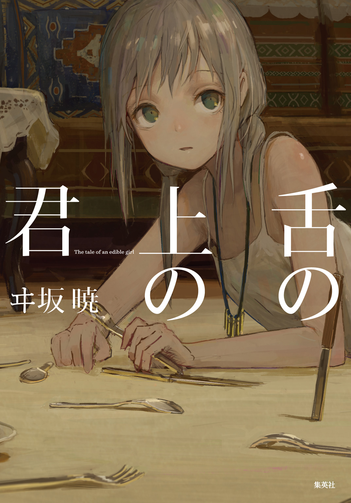
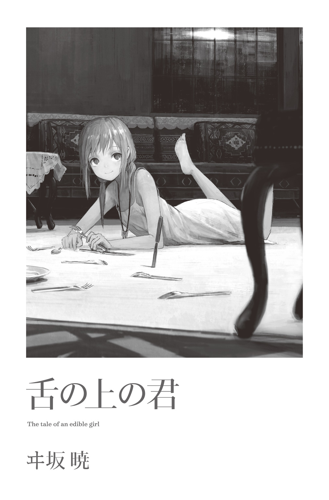
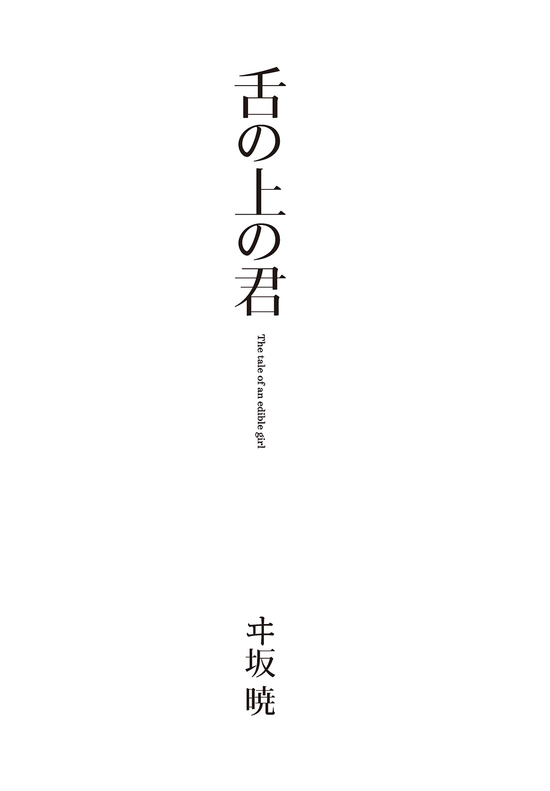

| 舌の上の君 | |
| ヰ坂暁 | |

この本は縦書きでレイアウトされています。
また、ご覧になる機種により、表示の差が認められることがあります。


目次
この作品はフィクションです。
実在の人物・団体・事件などには、いっさい関係ありません。
向かいに座った男が料理を食すのを、私は眺めていた。
この宴が始まるや否や、彼は香ばしく焼かれた骨つき肉に手を伸ばし、獣のように齧りついた。肉を綺麗にしゃぶり尽くすと、残った骨もバリバリと咀嚼。吞みこむと今度は皮で巻かれた揚げ肉へと。
夢中、というにはあまりに鬼気迫る――食の魔力に取り憑かれたような様子だった。
この大広間に集う全ての人が、彼と同じく一心不乱に料理を味わっている。
私はちがう。
血が滲むほど爪を突き立て、悪魔が誘うような香りに抗う。
目の前では揚げ肉を食べ終えた彼が臓物のスープを啜っていた。
彼がどんな表情でこれらの料理を食べているのか、その顔は陰になって窺うことができない。
思わずあることを口走りそうになる。瞬間、胃酸のこみ上げる感覚に私は口を閉ざすこととなった。
私は一人の少女の名を心中で呼び、手の中のすでにくしゃくしゃの手紙を、ぎゅっと握った。
目を覚まし、寝床の上で体を起こした。
普段起きる時間よりずっと早く、窓の外はまだ夜闇に包まれている。暑いわけでもないのに寝汗を大量にかいていた。
あの時の夢を見たのは多分、今日があの日だからなのだろう。
額の汗を袖で拭い、水を飲もうと寝床を出る。隣室の夫はいつも通り、まだ眠りの内にあるようだった。
もう少しで終わろうとしている。
きっとあの夢を見るのも今日が最後になることだろう。
『クリヤ゠ケイの死期が近い』
そう手紙を書き、宮廷へ送ったのは今月の初め。
彼の、私の夫の体調が思わしくなくなったのは去年の四月頃だ。養生に努めても体調は快方に向かうことがなく、医者に診せ、肝臓の病ですでにかなり進行していること、余命はおそらく半年ほどであることを告げられたのは九月だった。
実際、その後も病状は悪化の一途を辿り、立っているのも辛そうな日が多くなる。昔馴染みの者たちには以前から夫の病状について定期的に知らせてはいたけれど、いよいよ危ないという頃になって私たち夫婦は彼らを呼ぶことにしたのだった。
家の戸が叩かれたのは、朝食を済ませ一刻ほどが過ぎた頃。
戸を開ければ、数年ぶりに会うサリマンがそこにいた。夫が隠居する前の部下だった料理人だ。
「ご無沙汰しております、奥様」
私が顔を出すや否や、こちらが恐縮するくらいに丁寧なお辞儀。宮廷にいた頃と変わらない。後ろでは同行してきたのだろう官服の青年が同じく礼をする。彼ら二人を招き入れ、話しながら案内する。
「母もなるべく早くにこちらへ伺うと。先生のご容態はいかがです？」
「今のところは平気。食事もできるし、今日は割りと体調がいいみたい。ただ、お医者様はもう一月保たないだろうって」
私の言葉に、サリマンは一瞬表情を暗くする。夫の寝室の戸を叩き、返事があったので開けると、彼は寝床で体を起こしなにか読んでいる様子だった。
「......先生」
「おお、サリマン、久しぶりだな」
弟子を認め、やつれた笑顔を見せる夫。対して無言のままに呻くような表情のサリマン。
「瘦せたみたいだな。出世したと聞いたが、大丈夫か？ まあ、私が言うのもおかしいか」
宮廷の厨房を退いた五年前、壮健な老人だった夫は今、寝間着の上からも瘦せこけているのがはっきりわかる。眼鏡の奥の眼窩は落ち窪み、重い鉄鍋を軽々振っていた腕も枯れ木のように細って見えた。
なにも言えないサリマンに対し、当人は至って明るく、からからと笑う。医者に余命を告げられた時もそんな様子だった。あきらめというより、きっと彼はあの時から、死を恐れるということがなくなっていたのだろう。
再会を喜んだ師弟が言葉を交わし、サリマンもいくらか笑みを見せるようになった頃、窯に入れておいた菓子が焼き上がる。トレジ産の花茶を淹れ、菓子を添えて配ると、夫が全員を見渡して言った。
「さあ、手紙に書いた通り、始めようか」
部屋には私とサリマン、宮廷に仕える官吏の青年。彼は普段、会議などの場で交わされた議論を筆録する役目を担っているという。
今日はこのために、同居している次男夫婦と孫たち、末娘にも外出してもらっている。私たちだけの場だ。
「ええ」
「お願いします、先生」
私たちが頷くと夫は窓の桟へと手を伸ばし、さっき読んでいた手帳を手に取る。
中身は彼の若い頃、日々の出来事を綴った手記。傷んだ革表紙にほつれ気味の綴じ紐が年月を感じさせた。
数十年の暮らしの中で、彼がそれを眺めているのは何度か目にしたけれど、多分これが最後になるのだろう。
「年寄りの最期の長話だ。まあ、菓子を摘みながらゆるりと聞いてほしい」
手帳を手に取って開き、そこに綴られた奇怪な文字の並びへと視線を落とす。
ニホン語――『この世界』で彼だけが知っている、『彼の世界』の言語だ。
「始まりは君暦四八五年、五月......この町近くの砂漠でのことか。あれは今でもよく憶えているよ」
夫が語りだすと、官吏が手にした紙に硬筆を走らせ、その内容を記録していく。
老いた異世界人・クリヤ゠ケイの追想録は、彼がこの世界に来た時のことに始まる。
◆
死ぬんだな、俺。
背の大岩に身を預けたまま、その時の俺は思っていた。
この砂漠に迷いこんで三日。地図も食料も、移動、連絡の手段もない、文字通りの身一つで人のいる場所、あるいは水場を求めてさまよい歩いていたが、どこまで行っても目の前に広がるのは砂、砂、砂。
強烈な太陽光に熱く乾いた大気、足下の砂は俺の体力を容赦なく奪い、三日間で摂れた食事はネズミだかモグラだかわからん動物一匹にトカゲが二匹。もう限界だった。
酷使してきた脚は痛いとか重いとかを通り越して文字通り棒のようになり、道中拾った干からびた木の根みたいなものを杖代わりにどうにかこうにか歩いていた。
少し前にデカい岩を見つけ、夜まで日射しを避けようと滑りこむようにその陰に隠れた......はいいが、休んでいても体力回復の兆しは見えず、下ろした腰を上げることさえできない。そのうちひどい倦怠感に襲われ、意識がぼうっとし始めた。
死ぬんじゃないか、とは何度も思ったが、いよいよ最期が近いようだった。
『どうしてこうなった』
この三日何度も繰り返してきた問いだが、死を前にしてまた浮かぶ。
なんたって俺は自分がどうしてこの砂漠にいるのか、そこからして全くわからないのだ。
この三日前、俺・厨圭は東京で自分のレストランの開店準備に勤しんでいた。
高校の調理科を出てすぐ、在学中にバイトして貯めた資金を手に海外へ渡り、現地の料理屋で働きながら腕を磨いた。
ヨーロッパ、アメリカ、南米、アジア......と一〇年世界を渡って修業の日々を送り、去年、日本で店を出すことに決めた。俺の夢だった、そして新たな夢の始まる店だ。
当然に気合が入り準備に根を詰めすぎたため寝不足で、荷運びの最中に意識が遠のき店の床に倒れてしまった......はずが、気がつくとこの砂漠にいた。
目を疑ったし夢だと思ったが、刺すような太陽光も熱せられた砂も夢幻と言うにはあまりにリアルだ。
頰をつねったり舌を嚙んだりしても当然、目覚めることはない。
夜になると、寒さを凌ぐために砂に体を埋め、空を見上げた。星座の見え方でここが北半球か、南半球かくらいはわかるのではと。しかし、そこには見知った星座がなに一つない。本当にここは地球上なのか。
ただ一つ月だけが、記憶と同じに輝いて見えた。
夢であってくれ、そして早く醒めてくれ。
何度も願ったが、叶わず今に至っている。
視界も手足の感覚もぼんやりしてきた。
もはや夢であることへの期待も失せていたし、死を怖いとさえ思わなかった。この三日で、体だけじゃなく心もすっかり鈍磨してしまったらしい。
こんな場所だが、いつか発見してもらえるんだろうか。
家族に友人知人、融資してくれたかつての雇い主やいきなり失職することになるスタッフといった人たちへの申し訳なさと、夢を果たせない悔しさ。
それらの感情もやがて頭から消えていき、残ったのは俺の夢の出発点になった、ひどく純粋で原始的な欲望だった。
美味いもん、食いてえ。
声にならない叫びを最後に、意識は闇へと落ちていき、本来ならそのまま死んでいたのだろう。
俺の命を繫ぎ止めたのは、口の中に飛びこんできたあまりに鮮烈な味の刺激だった。
美味い。
恐ろしく芳醇な味と香りが、口から鼻、神経、脳、そして全身へと奔流となって駆け巡る。
世界のどんな美食も及ばないと断言できる、魂を呼び覚ます味。
そして目を覚ました時、視界に広がる青空と砂の大地、そして端には少女が一人。
寝かされた俺の脇にその少女が座りこみ、見下ろしていた。彼女は俺が目覚めたのを認めてか、大きな瞳をさらに見開く。
「あ、え......君、は......？」
「――――ッ」
三日ぶりに発した声に返ってきたのは聞いたことのない言語と、力いっぱいの抱擁だった。その感触に、どうやら俺は生きているらしい、と悟ることができた。
昼の月の浮かぶ空が、妙に記憶に残っている。
これが俺と彼女の、そしてこの世界との出会いの瞬間だった。
俺を助けてくれたのは少女と青年の二人組。当たり前というべきか、二人とも日本人ではないようだ。そばにはなんだかよくわからない動物が一頭。牛と駱駝の中間みたいな外見で、大きな荷物を背負わされている。
青年は革袋にたっぷりと詰まった水を俺にくれ、そして荷物に被せていた布を取り、頭から首まで巻いてくれる。彼らはターバンのような日除け布を巻いていたが、その代わりということだろう。たしかにじりじり痛いくらいだった日射しが布に遮られてだいぶ楽になった。
とりあえず多少回復した俺はその妙な動物に乗せられて、近くの町まで運ばれた。
オアシス都市ってやつか、砂漠の只中にあってその地域は緑が生い茂り、町が築かれている。町の規模は相当に大きく、家並みの古さは歴史を感じさせる......がすぐにその異様さに気づく。
建築には詳しくないが、目に映る建物の中に近代的なものはなに一つ見当たらない。
どれもこれも土壁や石造り。地面など舗装されてもいない。自動車やバイクなんて影も形もなく、俺たちが乗っているのと多分同じ動物が荷車を引いて歩いていた。
たとえば歴史の古い町なら観光資源として古い家の保全を推奨する、という話はよく聞く。だが住民まで、今の時代にガスや電気すら拒んだ生活を送っているなんてことがあり得るのだろうか。
「ここはどこなんだ」――改めて疑問が浮かび、知る限りの言葉で二人に尋ねるが、通じている様子はない。
助かったという安堵もつかの間、混乱と不安が入り混じった心境のまま、俺は一軒の家へと連れてこられた。
肩を貸してもらいながら家に入ると中には中年の男がいて、青年がなにやら説明すると俺の体を診始めた。もしかして医者かなにかなのか。
その後、俺は奥の部屋に連れていかれ、ベッドらしきところに寝かされた。やや固いが、疲れから再び襲いくる睡魔に勝てず、また眠ってしまった。
目を覚ますと数時間が経っていたようで、窓の外はすっかり夜だ。
そばにはあの少女がいて、目覚めた俺に食事を持ってきてくれた。
それぞれ陶器に満たされた、動物の乳らしき飲み物と粥。渡されると、少女がなにか言うのも待たず俺は手を付けていた。
乳は脂肪が濃く、牛や山羊のそれともちがう独特のクセがある。あの変な動物のだろうか。粥はそう美味いものじゃなかったが、なにしろ三日ぶりのまともな食い物だ。夢中だった。
あっという間に平らげ、少女に目をやる。こうして見ると、なかなか目立つ外見の子だった。
多分、一二、三歳くらい。町の住民たちが褐色の肌に黒髪の者が多い中、色白で長い髪は灰褐色。風景写真の海みたいに澄んだ碧い瞳が、俺をじいっと見つめてくる。
「あぁ......えっと」
礼をせねばと思ったが、なにせ言葉がわからない。言い淀む俺に少女は一歩近づき、自分を指し一言発した。
「アイサ」
「え？」
「アイサ」
繰り返し口にする。自分の名前、か？
「......ケイ、ケイ゠クリヤ」
食器を脇に置き、少女にならう形で名乗る。
「ケイ......？」
「ケイ」
「ケイ!!」
少女――アイサが俺の手を握り、今度はうれしそうに呼んでくる。
ファーストネームで呼ばれるなんて別に珍しくもないが、砂漠で一人朽ち果てると思っていた身に、その声はひどく優しく響いた。
その後も、俺はアイサ一家に厄介になった。
両親と兄の四人家族らしい。俺を診てくれた父・サザンに母のカラヤム。サザンはやはり医者らしく、彼を頼りに病人や怪我人が毎日訪れる。アイサと共に俺を助けたのが兄のシザミで、彼はすぐ近所に女性――まあ妻か恋人なんだろう――と暮らし、ほぼ毎日こちらの家に来てサザンの仕事を手伝っている。
彼らの介抱を受け体力が戻ると、力仕事などを手伝いながら現地の人と交流を始める。現地語の知識は当然皆無で苦労したが、俺にはいい先生がいた。アイサだ。
家で暇を持て余していると、よく彼女は俺を引っぱり、外に連れ出そうとした。
近所での用事に手伝いとして連れていかれたこともあれば、友だちらしい、同年代の子たちやその他近所の人に紹介されたこともある。なにを言ってるのか最初のうちはほとんどわからないが、「ケイ」「ケイ」と話の中で俺の名前が呼ばれる時だけ、なんだか心地よさを覚える。
市場へ買い物に行く時、特に荷物が多い時はあの変な動物を使った。アイサの家で飼っているわけじゃなく、近所の家から借りているようだ。
再会したそいつは顔をベロベロと舐めてくる。臭い。アイサはそれを見てけらけらと笑い、
「デンデル」
その動物を指して呼んだ。多分、名前だろう。
こいつ自体の名前なのか、「牛」「馬」のような種類の名前なのかわからない――後者らしいとわかったのは少し後のことだ――が、俺も「デンデル」と復唱してみる。
しかしアイサは渋い顔をして首を振り、もう一度口にした。発音がよくなかったのか。俺がまた真似て呼び、それを二回ほど繰り返すとアイサは満足げな表情で頷く。
こんな毎日の中で俺は徐々に語彙を増やし、それらをもらった手帳に書き記していった。最初は字を書いてみせるつもりだったが、アルファベットに漢字、アラビア文字も数字も誰一人見覚えがある反応をしないので用途がシフトしたのだった。
近所の人、物や道具、動植物、夜空に浮かぶ星の名前......「アシリア」という町の名を知ったのはけっこう後のことだった。
俺が現地の生活で早くに関心を抱いたのはやはり食文化だ。アイサについて訪れた近所の市場でははじめて見る食材が数多く並んでいる。
たとえば芋に類するものはあるが、ジャガイモやサツマイモではなく、赤い球形の種類が主のようだ。杏を縦長にした感じの果物や、黒い葉物野菜などにも目を奪われる。
肉類は、デンデルや牛、豚、家禽の他、俺が砂漠で食ったのに似たネズミやトカゲなんかも時に生きたまま売られている。
はじめて訪れる国では市場がなによりの観光名所だ。特に、このなんの情報もない土地。俺はわくわくするのを感じていた。
料理をさせてもらえないか、ちょっと頼んでみよう――そんなことを思いながら歩く帰り道、ふと、大通りから脇に伸びる道が気になった。
少し先では両側に果樹園が広がる。市場で見た果物が実っていて、最初はそれを見ていたのだが、すぐに道のずっと先、果樹園地帯を抜けたところにある小高い丘に目を奪われた。
丘には大きめの民家くらいのドームがあった。家や商店とは明らかにちがう、町で見た建物では一番目を引く外観で、俺は自然と近くで見てみたくなり、アイサへそう伝える。
「あそこは......ダメです」
「見るだけでも？」
「......はい」
そう言って首を横に振る彼女は、どこか後ろめたい風な表情だった。
なんの建物なのだろう。反応からしてなにかしら特別な建物、たとえば宗教的な施設かもしれない。それで、そういうところにはよそ者を近づけてはならない、と言われているとか。
まあ、気にしないようにしよう。その時はそう思い、実際、建物のことはすぐに忘れて過ごした。
料理に挑戦させてもらったのは翌日のことだ。俺は手伝いという形で野菜カゴを抱え、地域の炊事場に向かう母カラヤムとアイサについていった。どうも台所のある家庭は少ないらしく、多くの家の女たちが具材を持ち寄って料理に勤しんでいる。
水はいちいち脇の井戸から汲まなきゃならないし、火加減もくべる薪の量で調整するなど慣れ親しんだ厨房に比べればあまりに原始的な設備だが、それでも各家の女たちが包丁を振るい、鍋で具材を炒めているのを目にすると心に湧き上がるものがあった。
気づけば、俺は二人に料理をさせてほしいと頼みこんで――料理〔サーキィ〕、料理〔サーキィ〕と繰り返しただけだが――いた。
彼らの前で料理したことなどもちろん一度もなかったのでカラヤムは躊躇した風だったが、アイサが任せてみようと言ってくれた。
作ったのは根菜とデンデルの燻製肉の炒めもの、砂鼠〔ファル゠サーラ〕――砂漠で食ったもぐらみたいなネズミだ――のつみれ汁だ。砂鼠は首を落として皮を剝ぎ、内臓を取って洗った後、包丁――中華包丁のように四角く肉厚だ――の背で叩いて潰す。
臭み消しも兼ねた香辛料、塩と酒で味を調え、十分な粘り気が出るまで練ったらピンポン玉くらいの大きさに成形して根菜のスープで煮込んで完成だ。
その肉はあっさりしていながらコクがあり、スープにもいい出汁が出ている。クイやヌートリアといった食用ネズミ、栗鼠や兎ともまたちがった味わいだ。
砂漠では味わっている余裕などなく、病原菌や寄生虫ばかり気にしていたが、きちんと調理すると美味いもので、ちょっと感動する。
アイサ一家はおどろきながらも美味しいと喜んでくれ、俺はささやかでも恩を返せた気がして、この地に来てはじめての充足感を味わっていた。
その後は力仕事に加え炊事が俺の役割になった。決まった仕事ができて周囲とはより密なコミュニケーションをとるようになり、結果、言葉の覚えも早まることとなった。
料理をするようになってからは毎日が充実していて、現地の料理屋〔サキィネ〕で仕事を得られないかと考えるくらいだったが、この地の食に関して二つ、気になることがあった。
一つは死にかけていた時に感じた、あのこの上ない美味さ。アレがなければ、俺はきっと死んでいただろう。しかしあの時のアイサもシザミも、食べ物らしきものは水くらいしか持っていなかった。
「俺を助けてくれた時、なにか食べさせてくれなかったか？ ものすごく美味かったような」
アイサに尋ねてみるが、知らないと言われた。それじゃあ、アレは死に際の願望が生み出した幻覚の類かもしれない。臨死体験者が死後の世界の夢を見るというような。そう思う方が自然なくらいに非現実的な美味さだった。
もう一つ気になることというのは、この地で料理人の携わる、ある習慣についてだ。
だいぶ話せるようになった頃、近所の家の老人が亡くなったとのことでアイサ一家は揃って葬儀へ出かけた。俺は家事をしながら留守番していたのだが、老人の家で火を焚いているらしいのがこちらの家の前からも見え、立ち上る煙にふと思った。
墓を見たことがないな、と。もちろん俺が行っていないところにあったり、見ても墓と思わないような外観だったりするかもしれない。ひょっとして、あのドームが霊園なのかも。だったらちょっと悪いとは思ったが、まあ訊くくらいはいいだろう。
「このへんじゃ、亡くなった人はどこに埋めるんだ？」
「......埋める？ そういうことはしないですよ」
帰ってきたアイサに尋ねると、彼女は少し怪訝な反応を見せ、続けて言う。
「私たちが食べちゃいますから」
食葬〔ガナザル〕――故人の遺体を他の食肉同様に解体、調理し、葬儀の際の宴で集まった縁者に振る舞う風習なのだという。
「どうして、食べる？」
寒気を感じながら、俺は続けて尋ねる。アイサはすぐに答えてくれた。
「だって私の体、これからは少しだけ、亡くなったお爺ちゃんでできてるんです。そう思うとちょっとだけ、安心じゃないですか？ ここにいるんだなって」
ここ、と言ってアイサは腹を擦った。その老人を食ってきた、ということだろう。
食人。俺の生きてきた世界では重大な禁忌だが、それを犯した少女は瞳を潤ませ、柔和な笑みを浮かべる。
最初はあまりに猟奇的で面食らった。しかし俺も祖父が亡くなった時、親に言われて遺体の顔を撫でた。彼らの食人はああいう感覚の延長かもしれない。そう思うと、遺体を食うことで霊的な繫がりを保つという発想も、理解できないわけではなかった。
ただ自分が食えるか、遺体を料理できるかと言われると......。
「ケイは、食べてくれます？」
「その人は、もう全部食べてしまったんじゃないのか？」
食べ残しがあるとか言われても絶対に嫌だと思った。俺の答えに拒否感を察したのか、アイサは少し悲しそうな表情になる。
しかしなんだか、アイサの方にも「含み」のようなものを感じる問いだった。その含みがなにかを知るのは、まだしばし先のこと。
それより前に、俺の生活は大きな転機を迎えることになる。それを運んできたのはアシリアの遥か東方、この国の君府からの使者だった。
ある日、奇妙な男たちが俺を訪ねてきた。
彼らはアシリアでは見ない仕立ての立派な服に身を包み、房飾りのついた帽子を被っている。「お前がクリヤ゠ケイか」と尋ねられ、俺が頷くと王の使者だという身分、そして用件を切り出した。
「アシリアに誰も知らない国の男が現れたとの報せを受け、国王が会いたがっておいでだ。お前に宮廷まで来てもらう」と。
言われてはじめはビビったが、しかし幸運かもしれない。ここは結局どこで俺はなぜここにいるのか。放置されたままの謎を解こうと思ったら国の中枢に接触するのが一番手っ取り早そうではある。
もちろん不安な気持ちも大いにあって、躊躇しかけたところで、アイサが言う。
「大丈夫、ケイ。私も一緒に宮廷へ行きますから」
「いや、アイサは......」
行きますからと言っても、一市民が王に呼び出された俺についてくるなんて、許されるのか。
「アイサ様は普段宮廷で暮らしておられる」
勅使の男は俺の疑問に答えるように説明する。
「宮廷で......？」
「この町へは一時帰られていただけのこと。お前を連れていくというのも王の命ではあるが、我らはもともとアイサ様を迎えに参ったのだ」
「そう。一緒に行きましょう、ケイ」
やはりよくわからない。もしかしてアイサは本来お姫様かなにかなのだろうか。しかし生まれはこの町のようだし、地元の人とはずいぶん気安くしていたが。
わけがわからないままだったが、アイサにも言われた俺は命に従い、君府に上ることになった。そもそも拒否する余地もなさそうだし、前向きに考えることにする。
最後の夜は宴が開かれ、俺が現地の料理をアイサの家族や近所の人たちに振る舞った。
デンデルの煮込みに香草焼き、丸鶏の詰め物焼きなど。デンデルの乳酒に酔った人々の笑い声が響く、陽気な夜となった。
以前は死にかけた砂漠も、デンデルに跨り十分な物資と共に旅する分には快適だった。一日かけて大河のほとりの町に着く。大河は国土を縦断する輸送路でもあるとのことで、町から出ている船に乗って二日、陸に上がると今度はデンデルでなく馬車――ここではじめて馬を見た――に乗り換え一日、君府「イシュクブンド」へ到着した。
五百年近く前、流浪の部族がオアシスの町アシリアに興したこの「君国」は五代目アヒド王の頃に斜陽の大国を滅ぼし、征服したこの地に新たな宮廷を置いたのだという。
高台から見下ろすと大きな弧を描いた海岸線に面して白い町並みが広がり、港には小船から大型の帆船まで数多くの船が停泊する。陸海双方で東西交易の要衝として栄え、「世界の橋」と謳われる都だと、勅使の男は誇らしげに語った。
その白亜の君府には赤と青の巨大な建物が並び立つように聳えている。
赤いのは港近くの丘陵に建つ聖殿。青は君府の中心、王が住まい国政を執る宮殿――俺たちの向かう場所だ。
王宮は高い城壁に囲われ、俺たちは一番大きな獅子門〔カフ゠ラマーン〕から入城を果たす。名前の通り獅子の顔が彫られ、銃兵に守られるその門をくぐると、壁内は小さな町ほどの広さがあり、大小様々な建物が建ち並ぶ。
本宮殿への道中、白い建物の前を通ると中から芳しい匂いがした。
「気になりますか、ケイ？」
「ん、ああ......なにがあるんだ？」
俺の問いにアイサは答えることなく、ただ意味ありげな微笑を浮かべると先に行ってしまう。
間近で見上げる本宮殿は圧倒的な壮麗さだ。
透明感を帯びた淡青の壁には色硝子で花や動物の絵が嵌めこまれている。中に入っても壁から天井まで精緻な装飾が施され、床にも複雑な紋様が描かれる。豪奢な城や宮殿は為政者の権威を誇示する役目もあるというが、臣民でもない俺にも効果てきめんで、終始落ち着かない気分だった。
「私はイセラ様とハティに先に会ってきます。ケイ、また後で」
アイサはそう言って俺たちと別れる。俺はビジネスホテルの一室くらいの部屋へ連れていかれ、身体検査をされた後、宮廷での男の礼装だという白い上衣と黒い幅広のズボンに着替える。
着替えを終えると俺に付き添っていた官吏の男に、今度は剃刀くらいの小刀を渡され、それで指を切って小瓶に血を採るようにと命じられた。
理由を訊くと、宮廷外の者が王族に謁見する際の仕来りであるという。王の前に一切の虚偽や不正のないことを誓うためだと。血判みたいなものだろうか。
一度は死を覚悟した身で情けないが、自分で指を切るのはけっこう怖かった。
その後、官吏が出ていき、教わった座礼を一人で二〇分ほど繰り返した後、改めて呼ばれ通された王の間は、これまでと逆にびっくりするほど簡素な空間だった。
広々としてはいるが壁も四方の円柱も飾り気は皆無で、調度品と呼べるのは中央の大きな座椅子くらいだ。衛士や従者らしき数人を従え、男がそこに腰を下ろしていた。
「クリヤ゠ケイか」
「は、はいっ」
太い声で名を呼ばれ、思わず背筋が伸びる。
「そこへ座るがよい」
「......はい」
かなりぎこちない歩みで御前へ進み出ると、敷かれた円形のクッションらしきものに腰を下ろし、練習した通りに頭を下げる。
「よい。顔を上げろ」
「はい？」
「上げろ」
「は、はいっ！」
真正面で相対する。この男が、王。
「儂がこの国の十七代目の王、シャイドだ」
部屋の主であるシャイド王もまた、簡素な装いの男だった。浴衣のように羽織った臙脂色の上衣と白いズボンの他は装飾品の類も身に着けていない。
老境に見えるが上衣の袖から覗く腕は太く筋肉質だ。特徴的な赤毛が鬣のようにぶわりと広がり、ギラついた大きな瞳のためか獣じみた、獰猛な威厳と迫力を湛えている。
「クリヤ゠ケイ」
「......はい」
「そう固くならんでいい。茶でも飲め」
「はい」
この一分かそこらではいはい言いすぎだ。ビビりまくった反応に王が笑みを零す。
目の前の茶器を取り、一口啜る。中国茶に似た香りには鎮静作用があるのか知らないが、気分が落ち着くのを感じる。俺が器を一度置くと、王がまた口を開いた。
「言葉はわかるようだな」
「十分ではありませんが」
「ふむ......」
王はまた少し黙り、そして話しだした。俺のために平易な言葉を選んでいるのか、ずいぶんゆったりとした口調で。
「お前は『ニホン』という国の料理人だったが、気がつくとアシリア周辺の砂漠にいて、アイサに助けられた。間違いないか」
「間違いありません」
俺が肯定すると、王が衛士の横に控える白ひげの爺さんに目配せし、爺さんはなにか持ってきて俺の前に置いた。
それは台座に立てられたスイカ大の球体で、表面には陸地と思しき絵図が描かれ、赤線の仕切りごとに地名らしき言葉が添えられる。
そう、地球儀にそっくりだった。
「世界模型〔デュニャ゠コクラ〕と言う。千年前、西方の賢者により世界が恐ろしく巨大な球であると明かされて以降、学者たちの調査、測量によって導き出した世界の予想図を限りなく忠実に模したものだ」
この世界模型なる球体はやはり地球儀に相当するものらしいが、全くの別物とも言えそうだった。地軸の傾きがなく台座に垂直だとかのちがいもあるが、陸地の形状が俺の知るそれとは似ても似つかないのだ。
続いて、脇に紙の地図も広げられた。やはりそうだ。世界五大陸も日本列島も、そこには影も形もない。
「見覚えのある土地はあるか、クリヤ゠ケイ」
「......いえ」
地形はかなり微細に書きこまれている。デタラメじゃないのなら測量技術は相当に高度なのだろう。これらを信じるなら、これまでの様々な謎を解く一つの結論が出ることになる。
「お前は、この世界の人間ではない、ということなのだろうな」
俺の考えを先読みしたように王が言う。頷かざるを得なかった。ここは地球上じゃない。俺が知るのとは全くの別世界だ。
正直その可能性を考えなかったわけじゃない。ずっと頭にはあったが、目を逸らしていた。仮にそうなら、元の生活に戻るということがいよいよ絶望的に思えてくるから。
「なんで......」
俺がこんなところに――と、目の前に置かれた地球儀、いや世界模型を見やる。実際絶望しそうだったが、その前に一つの疑問が浮かんだ。
「王様」
「なんだ」
「私がその......別な世界から来た人間だと、わかっておられたのですか？」
王が頷く。用意のよさ、そしてさっきの口ぶりはそうとしか思えない。
「アイサからの手紙でお前のことは知らされておったのでな。未知の言語を話す、奇妙な風体の男が現れ、誰も知らない国の名を語っている、と」
アイサからか。なるほど、俺が宮廷に呼ばれたのもあの子の計らいなのか。一瞬納得しかけたが、しかしやはり違和感があった。
別の世界の人間だと思っていた？ 思うかそんなこと。俺はこの事態を体験している当人だが彼らはちがう。俺の言うおかしなことをアイサから聞いたってだけだ。そんなの、妄想の産物かと判断するのがふつうじゃないか？ 酔狂で付き合っているという風でもない。
王が俺の言葉を信じているなら、その根拠はおそらく。
「私の前にも、私のような者がいたのですか？」
「......ほう、察しがいいな」
以前にも似たようなことがあったのだろう――という俺の推理は正解だったらしい。
王は感心した風に笑うと従者に注がせた酒を一口飲み、まず一つ尋ねた。
「この国が元はアシリアの町で興ったというのは知っているか？」
「はい」
「ふむ......そこには、建国にまつわる、一人の男の伝承があってな――」
五百年ほど前、砂漠を渡る部族の長・シャディーンは奇妙な男と出会った。
その男は誰も聞いたことのない言葉を話し、砂漠の民とはちがう顔立ち、およそ砂漠にふさわしくない服装をしていたという。
彼はとても聡明な人物で、共に暮らすうちに部族の言葉をすぐに話せるようになった。彼は自分が気づいた時、突然砂漠に迷いこんでいたと語り、彼の言う「祖国」もやはり部族の誰一人として知らなかった。
男はいつか祖国へ帰ることを望んだが、世話になっている間、自分を助けてくれた者たちに多くの知恵を授けた。
それは用兵であり、人心掌握術であり、帝王学であり、組織運営であり、集団の長たるものに必要なおよそ全ての叡智だった。
男の言葉に従うことで部族は強固に成長した。シャディーンは男にずっと自分の下で力を発揮してほしいと思い、彼に自分の娘と結婚し、息子になることを勧める。
やがてオアシスの町アシリアを征服したシャディーンはそこを都に国を興した。それがこの君国の起原であり、初代王の逸話である。
「それが由縁でアシリアでは『彷徨者は大いなる益をもたらす』と言われるそうだ。民がお前を手厚く保護したのは、そのせいもあるのだろうな」
「男は......男はその後、どうなったのですか？」
「気になるところだろうが、そう逸るな」
知らないうちに前のめりになっていた俺を手で制し、王は酒盃に残った酒を呷る。俺も茶を飲み干して、話の続きに備えた。
「男の最後だが、消えた、と言われている」
「消えた？」
「建国と娘との婚姻を祝う宴の席で、娘と共に皆の目の前から忽然と、煙のように消えてなくなり、二度と戻ることはなかった、と」
「......そ、それで、どう......」
「それ以上のことは起こっておらん。ただ、後に学者たちが世界の姿を解き明かすにつれ、その者の語った国もなにも、やはり存在しないものであることがわかった。男は果たして何者であったのか。本当に人間だったのか。長らく神の使いだなどとも言われてきたが......今、ここに似たようなことを言う男がいるわけだ」
顎で俺を指し、王は話を締めくくる。
「男も、私と同じように別な世界から来たということですか？」
「お前の語ることが真実ならば、そう考えるのが妥当だろう」
俺の世界、あるいはまた別な世界から迷いこんだのかはわからない。たしかなのは以前にも異世界人――俺が言うのはなんか変だが――がアシリアの地に来ていたらしいこと。
そういった前例があるならば色々と合点がいく。そして、今語られた伝承が事実だというのなら、俺には一つの希望が示されることになる。
「男は、元の世界に帰ることができたのですか？」
「『消えた』としかわからぬ。二人がどうなったのか、全ては神の思し召しだ」
「......神、ですか」
その言葉が出た途端に胡散臭く感じるのは俺が日本人だからだろうか。しかし完全な超常現象を体験しているわけで、神の存在やその導きという仮説も馬鹿にはできないだろう。
仮にそうなら、俺もいつかは元の世界に戻してもらえるのか。
「男はなぜ、消えたんでしょうか」
「神の思し召しならば、なにか与えられた使命を果たした、ということやもしれぬな」
「使命......」
「男は知恵をもって初代を助け、建国の礎となり、それが成った時に消えた。憶測でしかないが、ならばお前にも――」
王はその先を口にはしなかったが、眼差しがなにを言わんとするか物語っていた。
『お前にもなにか国の助けとなるものがあるのだろう』
しかし、俺にそんなものがあるのだろうか。ここより文明の進んだ世界に生きてはいたが、政治経済や科学技術など、国の発展に役立ちそうな学識は持ち合わせていない。
「私にはそういった知恵は......ただの料理人で」
「よいではないか、それで。......アイサ」
王が名を呼ぶと、俺が入ってきたのと反対の入り口からアイサがひょっこり顔を出す。
「えへへ、待ってました。ケイ、お久しぶりです」
「あ、ああ......」
一時間ぶりくらいだと思うが、姿を現したアイサはずいぶん印象がちがって見えた。
長い灰色の髪は銀の髪留めで纏められ、薄っすらと化粧も。大きな瞳が際立ち、紅を引いた唇は白い肌に映えて見える。
「どうです？ おめかしした私」
手を広げ、その場でターンすると、金糸の刺繡に彩られたドレスの裾がふわりと舞う。
「......きれい、だな......」
「あ、ありがとうございます」
アイサがややうつむき、白い頰に赤みが差す。お世辞ではなく、ちょっとびっくりするほど可憐に見えた。一三歳だというが、子どもが背伸びしたような印象はなく、これが本来の姿と言わんばかりに似合っている。
「『サカラ』のアイサだ。お前には紹介するまでもないだろうが、王宮では娘のイセラの一番の友人なのだ」
さっきアイサが口にしていた名前だ。「サカラ」というのはアイサの身分だか立場だかを指す用語らしい。王女の友人であることが、彼女に与えられたなにかしら特別な役目なのかもしれない、なんて独りでとりあえずの結論を出していた。
「アイサからお前は腕のいい料理人と聞いている。そして、我が国は食というものを深く尊ぶ。道中、白い建物があったろう？ あれは『膳城〔マハラユ〕』といってな、この宮殿の食を賄う大厨房だ」
あの時のアイサの微笑の意味が、ここに来てわかった。今、彼女の顔を見ればきっとまた同じ笑みを浮かべることだろう。
「お前の世界の食の叡智を、この国の厨房にも広めてほしい。そのことに尽力するならば、いつか元の世界へと戻る時まで、お前の身分を保証しよう。もっとも、拒否したからといって無碍に扱うことはしないが、どうだ？」
「......それは」
「先人」の話が本当だとして、使命を果たしたから帰ったのだという解釈は都合がよすぎないか。仮にそうだとしても、自分の使命が料理だというのも。
突っこみどころはそりゃ多いが、たとえ一縷の望みでも、それしかないならすがるしかない。それに、もし本当に神というものが料理人としての俺に期待し異世界から招いたというのなら、やってやろうという気概も湧いてくる。
「畏まりました。全力を尽くします」
「やったあ！」
アイサがぱんっと手を叩く。どうもこの子の掌の上だったらしい。が、悪い気はしなかった。
こうして俺は王の要請に応じて「厨臣〔アスズ〕」と呼ばれる宮廷料理人になることを選び、その後はささやかな宴が開かれた。
俺とアイサ、王、そしてさっき話に出ていたイセラ姫も参加した。アイサと同じくらいの年頃で、父と同じ赤毛の少女だった。上には三人の王子がいるが、普段からこの宮殿にいるのは彼女だけで、アイサとは共に過ごすことが多いのだという。
王がそう紹介する間、なんだかむすっとした表情だったイセラ姫だが、たしかにアイサとは仲がいいようだ。隣り合って座り、「この蒸し魚、すごく美味しいわよ」なんて言ってアイサに取り分けてやっている。その料理もそれ以外の品も、たしかにこちらに来て一番の絶品だった。
「ケイの料理も美味しいんですよ。食べてみたくありませんか、イセラ様」
アイサが「ね？」という感じで俺に視線を寄越す。なんと答えればいいか少々迷ったが、俺がなにか言うより先に、
「私は......結構です」
「えーっ」
イセラ姫は、一瞬俺を睨むように見たかと思うとすぐに目を逸らしてしまう。なんだかわからないが、妙な敵意を感じる視線だった。
翌日から、俺の料理修業の日々が始まった。
俺が培ってきた料理の技術や知識は当然、元の世界での食材や設備、道具を前提にしてのものだ。それを活かすには、まずはこの国の食を知らねばならない。
交易の中心だけあって扱う食材の幅はアシリアにいた頃と比べ物にならない。君国領内各地から運ばれてきた特産物に海を越えてきた輸入品。アシリアでは無縁だった新鮮な魚介も肉以上に豊富だ。
時に市場や市井の料理屋へ出向き、宮廷内外でどんな食材、料理が好まれるのかを目や耳、鼻、そして舌で学んだ。
料理の技法については、王家の料理番であるハガン老人――王に謁見した際に控えていた白ひげの爺さんだった――が俺の指南役となった。
王よりずっと高齢に見えるが背筋はぴんと伸び、調理のあらゆる所作が恐ろしく洗練されている。単純比較はできないが、元の世界でもこれほど技巧に長けた料理人はそういないだろう。あの宴での料理もこの人によるものだったという。
教えられた技法を反復練習するのはもちろん、空いた時間には稼働中の厨房へ赴き、他の厨臣たちの仕事ぶりを観察した。そうして三か月ほどが過ぎた頃、正式に厨臣へと任じられる。
俺にとって二度目の転機が訪れたのは任官祝いの宴でのことだった。
王にハガン翁、アイサ、そして王女のイセラ姫も出席している。俺のための宴だが出されるのはどれも俺の作った料理だ。
デンデルのシチュー、丸鶏の詰め物焼き、白身魚のすり身揚げ、蒸し鶏と海藻のマリネ、エルケ貝の酒蒸し、米を糖蜜とミルクで甘く炊いたデザート......修業の成果を見せるために腕を奮った、旧都と君府双方の名物料理。言わば卒業試験だろうか。
シチューを一口啜ると王も、師匠であり検分役のハガン翁も頷く。アイサはアシリアの名物料理である詰め物焼きを真っ先に口にし、隣のイセラ姫にも勧めていた。
アイサの取り分けた一切れをイセラ姫が渋々といった様子で口へ運ぶのを、俺はヒヤヒヤした気持ちで見守った。
彼女にはこの三か月、廷内で会って礼をしても無視されるなど、なぜかはわからないが嫌われているらしかったからだ。
結果的に、俺の心配は杞憂に終わったようだ。一口食べると、次からは夢中になって手を伸ばしていく。
そんな様子に胸を撫で下ろし、その後は俺自身も宴に加わった。
先行きは全く不透明だが、しかし順調に行っていると思った。
それを告げられたのは、そんなタイミングでのことだった。
「ケイ、憶えてます？ 砂漠で私と兄さんが見つけた時のこと」
アイサが唐突に言った。
「もちろん。感謝してるよ......俺が生きてられるのも二人のおかげだ」
俺はそう答えたが、その質問自体はきっかけに過ぎなかったようで、アイサはさらに問いを重ねる。
「前に訊きましたよね？ 『死にかけていた自分になにか食べさせてくれなかったか』って」
「......ああ」
「私、『知らない』って答えましたけど、本当は噓ついてたんです。しちゃいけないことだったから」
事実を明かされ、目を見開く。つまり、俺を生き返らせた、俺が幻覚の類と解釈した味は、この世のものと思えない美味は実在するということだ。
周囲を見やる。いつも通り硬い表情のハガン翁に、笑みを浮かべる王、苦虫を嚙み潰したようなイセラ姫。
胸がざわつく。味の正体を知りたい気持ちと、根拠のない嫌な予感を同時に抱えながら尋ねた。
「......一体、なにをくれたんだ？」
「血、血です。私の、血」
一瞬、なにを言われたのかわからなかった。アイサはすっと手首を見せる。そこにはうっすらとした傷痕がある。
アイサは手首を切り、俺に血を飲ませた、それで俺は息を吹き返した。そういうことか？
あのこの上ない美味はアイサの血の味。人間の血が、そんなに......？
「アシリアでは子が産まれると、赤子の血の味を見る慣習があるのだが、そこでごく稀に、恐ろしく美味な血を持った子がいる。死人すら一舐めで生き返る、と言われるほどに。その子らを『サカラ』と呼ぶ。アイサもその一人だ」
混乱している俺にシャイド王が言う。にわかに信じがたいが、しかし信じがたい目にならすでに遭っているし、それに。
「自分で血を舐めてもわからないんですけどね。ケイが美味しいって言ってくれた時は、すっごく幸せでした」
俺の記憶にはたしかにあの味が焼きついている。
「見つかったサカラは神からの賜り物とされ、宮廷で養育されることとなる。『熟す』時までな」
「じゅ、熟す......？」
育てて、熟したらどうなるのか。恐ろしい想像が浮かぶが、はっきりと口には出さなかった。王も俺の心中を察したようで、なにも言わない。
『正解だ』と無言のまま言われた気がした。
食葬を知らされた時の、アイサとのやり取りが思い浮かぶ。俺の拒否感を滲ませた態度にアイサが見せた悲しげな表情は、単に風習を受け入れてもらえないことに対する以上に、ひょっとしたらもっと個人的な――。
「ねえ、ケイ」
アイサに名を呼ばれる。振り向くと、ぞっとするほど曇りのない笑顔がそこにあった。
「私を、料理してください」
君暦四八六年十一月、ちょうど東の空の白みだす頃、官舎脇で飼われている雄鶏の声が、眠っている厨臣たちに朝を告げる。
皆でぞろぞろと起き出し、全員で官舎近くに建つ浴場へと向かう。廷内で生活する官吏のための施設だ。規模はちょうど日本の銭湯くらいで、巨大サウナとでも言うべき温浴室と水風呂に浸かる冷浴室、休憩所も兼ねた脱衣場から成る。
この国での入浴はこうした共同浴場へ行くのが一般的だが、頻度はアシリアにいた頃だと三日に一度、水の豊富な君府でも二日に一度といったところで、毎日の入浴は市井じゃ金持ちのステータスだという。宮廷では個人で浴室を持つ王族や高官の他、仕事柄衛生を保つ義務のある医官と厨臣だけの特権だ。
風呂から上がると身支度をする。この一年で肩くらいまで伸びた髪を後頭部でシニヨンみたいに纏め、官位に応じた色の髪留めを着ける。白い厨臣服に着替えを済ませ膳城へ出勤する頃、ちょうど朝の鐘が君府に響いた。
膳城は八つの厨房から成り、総責任者である大厨臣長〔サイフ゠アスズ〕、各厨房を仕切る八人の厨臣長〔アスズ゠バス〕の下で二百人の厨臣が働いているが、俺はそこに専用の小厨房を与えられていた。
その厨房で一人、調理に当たる。メインの食材はシルダ瓜だ。
君国東部の町シルダの名産である大ぶりの瓜は、甘い果肉はもちろん硬く分厚い皮も食される。そのままでは味もなく青臭いだけだが、剝いた皮を七日ほど天日干しにした後、塩蔵してほどよく柔らかくなったものが市場でも十枚ほどまとめて売られている。一口大に刻んだものを摘んでもお茶受けや酒の肴にいいし、肉や魚と炒めてもいい。
その果皮を縦に細長く、ちょうど麵くらいの太さまで刻んでいく。擬麵〔ザス゠マカルナ〕と呼ばれる食材で、これを魚醬ベースのスープでしばし煮込んで完成した料理に、熟す前の青瓜とチーズをもろみ味噌で和えたものを添える。
「おはようございます、ケイ」
「おう、おはよう」
ちょうど二人分の食事が完成する頃、出入り口からアイサがひょっこり顔を出した。
俺が食事を作るようになって一年弱、最初は自室で待っていたアイサも、いつからか自分で受け取りに来るようになり、やがてそのまま厨房で食べるのが当たり前になった。
アイサが早起きした日には一緒に作るのも珍しくない。
「「『いただきます』」」
調理台を食卓代わりに、向かい合って椅子に腰掛け、日本語で唱えた。アシリアにいた頃、俺がやっていたのを見てアイサも真似するようになったのだ。
食事への感謝を示す挨拶――そう教えると彼女はとても気に入ったようで、以来一度も「いただきます」を欠かしていない。教えた俺よりよっぽど心をこめて。
食に感謝せよというのはありふれた道徳だが、欺瞞じみたところも強いように思う。
料理を作った人や生産者に対してするならまだしも、一方的に管理し搾取する側の人間が殺される側の、言葉も持たない食材、つまり動植物相手に都合がいい話だと。
そんなわけで俺は全然気持ちをこめて言ってなかったのだが――じゃあやるなって話だ――真似してやりだしたアイサを見て思うようになった。
食材への感謝は人間同士の道徳の延長ではなく、食うという行為、他者の死体を取りこんで生命を維持する営みに昔の人間がある種の霊性を見出し、畏れを忘れないという気持ちから生まれたのではと。
俺が木を削って作った箸を器用に操り、擬麵を啜る。続いてスープも一口。この食物を構成している無数の命の残滓が、その身に吸収されていく。
「そんなに見られたら恥ずかしいです」
「悪い」
目は逸らすが、頭はさっきまでの思考を続ける。食葬という、食の霊性に根差したこの国の文化が、なによりアイサ自身の身の上が、「いただきます」の響きを感慨深いものにしていた。
「『ごちそうさまでした』」
いつも通り、いただきますとセットの言葉を唱えてアイサは箸を置いた。
君暦三九年、アシリアで死んだ少年の肉はこの世のものとは思えない美味だったという。
以降もアシリアでは同じく至上の美味を持つ子どもが生まれてきた。彼らはいつしか「味」を意味する古語である「サカラ」の名で呼ばれ、神からの賜り物と考えられるようになった。
アイサは三三〇人目、「先代」ユアン以来三〇年ぶりのサカラ。
この神の味を生まれ持った少女はいずれその味が熟す時、解体されて食卓に並ぶ。
その料理人を務めることこそ、アイサが俺に一番に望むことだった。
彼女に乞われてから一年近く、俺はそれについて未だに答えを出せないでいる。
「アイサを......料理......」
「はい」
厨臣任官祝いの宴、サカラという名の意味するところを明かされ、うろたえる俺に、アイサは曇りのない声音で続ける。
「ケイには、私が熟した時に料理する人、『サカラ゠アスズ』になってほしいんです」
「一体、いつ......？ 熟すって。まさか、もう」
その言葉にアイサは首を横に振る。
「定期的に血の味を調べるが、過去ほとんどのサカラが一五、六歳で熟している......アイサ様もおそらくあと二、三年というところだろう」
ハガン翁が代わって説明する。
まだ猶予があるということだが、安堵を覚えることはなかった。
「それは、死ぬんだろ......？」
俺の当たり前の問いにアイサが頷く。
「私は死にますけど、みんなに美味しく食べてもらえて、神様のところに行けるんです。だからすごく尊いことなんです」
「サカラとは神よりの恩寵。最高の美味として食すことが神への感謝と礼を示すこととなるのだ」
ハガン翁が語るのは、「生贄」と似たような観念だろうか。神に捧げるのでなく神からの賜り物を食うという構図は逆だが。
彼らがいくら賛美したところで、所詮殺す側だから言えることではある。ただ、
「私、アシリアでケイの料理を食べて思うようになりました。ハガンさんの料理も美味しいけど、私を料理するのに一番ふさわしいのはきっとこの人なんだって」
アイサ当人が俺に向ける期待に満ちた瞳に、遠からぬ死への恐れは一点も見て取れない。
「もし熟す前にケイが元の世界へ帰っちゃったらできないですけど、でもきっと――」
「なにを言ってるんだ!!」
思わず叫んでいた。その場はしんと静まり返る。アイサと姫は目を丸くし、王とハガン翁は険しい眼差しを向ける。
「ケイ？ 私を料理するのは嫌でした？」
「俺が嫌だとかいう問題じゃないだろう」
アイサの薄い肩を強くつかんで訴える。
「死ぬんだぞ？ 一五、六歳で」
「でも......私が食べられるのが、神様への」
「なら、婆さんになるまで生きて、寿命で死んでからでいいじゃないか」
「ダメです。味が熟したら、早いうちに食べないと。年をとって味が落ちてしまったらもったいないです」
俺の説得は、アイサにはまるで通じていないようだった。
「無礼ですよ！ サカラを侮辱しているのですか!?」
イセラ姫が叫ぶ。はじめて自ら俺に発した言葉は、敵意に満ちた罵声だった。
「無礼？ 礼もなにもないでしょう」
彼女の言葉に、俺も強い口調で返し、睨むように視線を向けた。
「神なんてもののために彼女を殺して、それを食って、満足なのかあなたたちは!? 家畜じゃないんだぞ!! そんな風習は――」
「口が過ぎるぞ！ クリヤ！」
「ケイ」
ハガン翁の怒声と同時、アイサが静かに呼ぶ。
反射的に振り向くと、ぱんっ――と乾いた音が響く。
頰に衝撃。小さく震えるアイサの掌。叩かれた、と数瞬あってわかった。
「アイサ......」
呆然とする俺を見上げるアイサの瞳には、涙と強い怒りが滲んでいた。
「どうしてそんなこと言うんですか？」
「それは、アイサが......死――」
「私に命より大事なことがあるってわかってくれないんですか？ それで、神様やみんなをバカにするんですか......？ 私を料理するのが嫌ならいいです。けど......」
涙ながらの訴えに、俺は返す言葉が浮かばなかった。熱くなっていた思考は、アイサに叩かれたのを境に再びさっと冷えていく。
「もう、いいです......」
そこまで言うと、アイサは俺たちに背を向け、王の間から足早に出ていく。
「アイサっ！」
「やめんか、クリヤ」
追いかけようとする俺を王が呼び止めた。
王に呼ばれてまたはっとする。まずい。なにをやっているんだ。
宮廷に来た初日はあれだけビビっていたというのに、今は軽率にもほどがある。
「お前が今追いついても、言えることはあるまいよ」
冷や汗を浮かべて視線を向けると、至極おだやかな顔があった。
「我々にも落ち度があった。すまんな」
その言葉にも、やはり怒りは感じられない。どころかただ諭し、そして詫びる様子に、俺は無言になるばかりだった。
「アイサ様は、クリヤ様が来られてもお会いしたくないと仰っています」
「......わかった」
アイサの居室を訪ねると部屋の前には侍女がいて、謝りたいと申し出てもそう断られてしまう。この場は退散するしかなかった。
あれはさすがになかった。官舎へと戻る道、叩かれた頰を擦りながら思う。
『私に命より大事なものがあるってわかってくれないんですか？』『神様やみんなをバカにするんですか？』――浴びせられた言葉はもっともだ。
アイサは本心から食われることを幸せだと考えている。それを俺は一方的に非難した。
自分の価値観を他人に押しつけてはいけない。自分が理解できない価値観だからといって、それだけで非難してはならない。世界を旅してきた俺はそんなことは当たり前だし、自分はわかっていると思っていた。
しかし実際のところ、俺はずいぶん偏狭な人間だったらしい。
結果、アイサを傷つけて泣かせた。最低だ。
最低だが、じゃあサカラのあり方をどう受け止めるべきだったのか。
たとえ個人的に受け入れがたい価値観でも、第三者を害さないなら尊重すべき。元の世界でならそれは正しいとされていたし、今もそう思う。
ならアイサの死をも尊重するのが正しいのか。そんなことを考えながら官舎に戻ると。
ゴンゴン、ゴンゴン......と、廊下に戸を叩く音が響いていた。俺の部屋の前に誰かいる。
その訪問者は灯り瓶〔ミズーハ〕を手にしていて、淡い光がその姿を闇に浮き上がらせている。
「あなたは」
「クリヤ゠ケイ......」
その人物は俺に気づくとややバツの悪そうな、しかしやはり敵意を滲ませた瞳で睨んでくる。すらりとした長身に父譲りの赤毛、あどけない美貌の王女・イセラ姫がそこにいた。
イセラ姫に侍者が二人、そして俺は部屋に入ることなく共に官舎の屋上へと上った。
月光が遮られることもなく、この国の夜としてはずいぶん明るい。城壁に近いため壁外を見渡すにも、星を見ながら酒を飲むにもいい、ひそかにお気に入りの場所だったのだが、今は嫌な緊張感が漂っている。
「イセラ様......申し訳ありませんでした、先ほどは......」
「本当ですね、私が父の立場なら、最低でも投獄を命じていたでしょう」
頭を下げて詫びる俺に、姫は目もくれず言う。実際、王族や国宝というべき存在らしいサカラにあれだけ無礼な態度を取ったのだ。
部屋の前の人影に最初はやはりなにか罰が下ることになって官吏か兵が引っ立てに来たんじゃとビビったし、今も口ぶりからして姫がそのために来たわけじゃないらしい、と安堵するクソみたいな自分がいる。
「アイサが私のところに来ました」
「え？」
姫は意外な事実を明かす。
「泣き疲れて今は私の部屋で眠っています。あの子が寝た後で私はこちらへ」
俺が部屋を訪ねた時には、本当は姫のところへ行っていたということか。
「あの子は......ずっとあなたのことで泣いていたんですよ？」
こちらを向き、また俺を睨みながら言う。
「あなたはあの子の血に救われたのに、あの子に......あんなに慕われているのに......どうして、アイサを泣かせるんです？」
向けられた非難じみた問いはもっともで、反論も弁解も浮かばなかった。
「アイサへの態度は、あのように相手の生き方を否定したのは、ひどい過ちでした」
「当然です」
「ただ......」
姫が眉間をぴくりとさせる。
「今の私にはアイサを食することを受け入れられません。アイサには生きて幸せになれる道だってある。それが望ましいというのが、今の私の本心です」
さっきの今で無反省と取られそうな物言いだが、「どうして」と問われたなら、そこを主張しないわけにはいかない気がした。
今の俺にはアイサの死までも尊重することはできないと。
短い沈黙。潮気の混じった風が一つ吹いて、イセラ姫がまた口を開いた。
「やはりサカラの、アイサの幸せを否定するということですか？」
「......サカラについては、そうなのかもしれません。しかしアイサには、サカラでない幸せもあると、私は思います」
姫の顔に浮かぶ嫌悪感が強まって見えた。
「なぜアイサも父も、こんな男を」
視線を逸らし吐き捨てるように言うと、俺の横を通り過ぎ、侍者たちと共に上がってきた階段へと戻ってゆく。
「イセラ様......」
「父は、あなたの厨臣への任官は取り下げないそうです」
「え？」
「サカラ゠アスズへの選任は一旦取り下げるが、できればこれまでの決めごと通り力を尽くしてほしい、と。そのことも併せて伝えに」
安堵するよりおどろきが先に立った。王はどれほど俺に、というか異世界の食に期待しているのだろうか。そのおかげで俺の立場は保たれたらしいが、全ては伝承あってのことだと思うと空恐ろしいような気もする。
「受けますか、クリヤ゠ケイ？ あなたの非難した風習を続けている王の頼みを......」
挑発的に問われる。俺には降りてほしいと本心じゃ思っているのだろうか。そうだとしても、俺の答えは決まっている。
「ええ。謹んで。寛大なご処置に感謝します、とお伝えいただけますか？」
「......わかりました」
姫は俺の答えをことさらおどろいた風でもなく――しかし嫌そうな表情で――受け入れ、そして。
「父への言伝は構いませんが、アイサには必ずあなたが謝りなさい」
「そのつもりです」
そのやり取りを最後に、従者らを連れて下へ降りていく。
やはり、姫は俺を嫌いらしい。今夜さらに嫌われたのかもしれないが、多分それより以前から。結局それがなぜかは謎のまま、この日の夜会は終わりを告げた。
「......昨夜はすまなかった、アイサ」
イセラ姫に言った通り、俺は翌日にアイサの居室を訪ね、彼女の顔を見て頭を下げた。
また部屋に入れてもらえないんじゃとも思っていたが案外すんなり入ることができた。ただ。
「食事を持ってきても、釣られたりなんかしませんよ？」
後ろに置いたお盆――ハガン翁に代わって作った昼食に一瞬目をやり、俺を見上げて言う。昨夜のような激しい怒りは見えないが、目が赤く充血しているのが心に刺さった。
「そういうんじゃない。ただ食事を用意させてもらっただけだ」
「それは......サカラ゠アスズはハガンさんのお仕事です。ケイは私を料理するの、嫌なんでしょう？」
「......ああ」
肯定すると、アイサがぴくりと震えるのがわかった。
「俺はアイサに死んでほしくない。少なくとも、食べられるために死ぬことはない。俺はそう思う」
やはりイセラ姫に言った通りだ。偏狭な人間である俺はまだ、アイサを殺して食うことを、それはそれでありと許容する気にはなれない。
「じゃあ、どうしてですか？」
「今さら遅いかもしれないけど......考えてみようと思うんだ。アイサが『熟す』時まで......俺はそれを受け入れられるようになるかどうか。だから、陛下とハガン先生に願い出た。君の食事を作る、毎日君とこうして話す。その一つ目の仕事だけでも、やらせてもらえないかって」
都合のよすぎる申し出だとは思ったが、二人は条件つきで受け入れてくれた。昨夜の無礼を許されたことといい、全くよくしてくれるものだと思う。
「アイサ......別に許してくれとは言わない。ただとりあえず、これだけでも食べてくれないか？」
こっちもこっちで全く都合がいい。アイサはしばし俺を睨んだままだったが。
「ケイ、私も――」
『ぐ～』
なにか言おうとしたところを腹の音に遮られ、頰をぽっと赤く染める。
「アイサも、どうした？」
「......なんでもありません」
アイサがそっぽを向き、小声で「お昼、いただきます」と漏らすのを聞いて俺は料理を並べる。千切りにした青菜と白パン、そして椀を満たす主菜。
「このスープ、はじめて見ます」
椀を覗きこんだアイサが尋ねてくる。今は純粋に、好奇心の瞳。
「『カレー』っていう、香辛料を調合して作る、俺の世界の料理さ。この国で手に入る香辛料で作ってみた」
パンによく合うさらさらとしたスープカレー。紅玉瓜の赤、皮付きの鴉芋の紺、エルケ茸の緑、鶏卵の白に黄、と色鮮やかな具材の中にでんっと鎮座するデンデルの骨つき肉。はじめての料理にアイサは恐る恐るといった様子で匙で掬い、口に運ぶ。
「どうだ？」
「美味しいです、すごく」
「そうか」
ほっと一息つく。刺激が強すぎないように気は遣ったが、けっこう不安だったのだ。
「これからは、ケイの世界の料理、作ってくれるんですか？」
「ああ」
二年から三年後、彼女の熟した時にその運命を受け入れられるか否か考え続ける。今の俺、異世界人クリヤ゠ケイはそうしていくしかない。
「私を料理する時は、『カレー』も作ってくださいね」
「料理するなら、な......」
君暦四八六年、一月。この頃の俺は王から仰せつかった使命の第一段階へと着手していた。
「どうです？ おかしくないですか？」
出立前、身支度を済ませたアイサは俺の前でポーズを取ると、今の格好について尋ねた。
ワンピースと言っていいのか、上下一体化した若草色のスカートにポンチョのような薄手の肩掛けを羽織り、足下は樹皮を編んだらしいサンダル状の履物。この国での服飾の良し悪しなんて全然わからないが、俺の目には可愛らしく映った。
「うん、いいんじゃないか」
「ええ、とてもお似合いです。アイサ様」
俺の隣、官服姿の少女がアイサを褒める。無表情に近いが、声は弾んで聞こえた。ハテマといって、アイサと同い年の仲良しらしい侍女だ。
中性的な顔立ちと短髪で少年みたいな容姿だが、市井の育ちだからか服の流行には一番詳しいらしい。アイサの服を見繕ってくれたのも彼女だ。
「えへへ、じゃあお出かけしましょうか、ケイ、ハティ」
連れ立って宮殿を出ると、一番近い東壁の白蛇門〔カフ゠シャーフ〕を三人でくぐった。ただそれだけでアイサは「わあっ」と声をあげる。
目の前に見えるのは宮殿へと続く大通りと、両脇に立ち並ぶ建造物。君府の中心だけあって建物も道も綺麗に整備されているが、アイサの反応は多分そういうことじゃないのだろう。
一緒に出かけることになったきっかけは、前日の夕食の席での会話だった。
『明日は買い物があるから、市場に出かけてくるよ』
だから、明日の昼食はハガン翁に頼んである......そう続けようとした俺の言葉に、アイサは『私も連れてってもらえますか!?』と予想外の食いつきを見せた。
なにか欲しい物があるのかと思ったが、単に外に出てみたいのだと言う。
考えてみると宮廷でのアイサは基本的にこもりきりの生活だ。別に軟禁ってわけじゃなく廷内の植物園だとか運動場、図書館など敷地内なら割合自由に出歩けるらしいが、だからこそ外には出られないことに窮屈さを感じるのかもしれない。
侍従長にお願いし、お目付け役としてハテマの同行を条件に外出を許してもらえた、と朝食の時から上機嫌だった。
足取りも軽く鼻歌交じり。アシリアでの白い民族衣装や宮廷での普段着、祝宴の場での晴れ着ともちがうこの日のおめかしも、彼女の内心を反映するかのようだ。
少し頰を緩めたところで、アイサが足と鼻歌を止める。小さく口を開けたまま、呆けたように少し先に視線をやっている。そこには連れ立って歩く若い男女がいた。
「アイサ――」
「クリヤ様、そこを左です」
「ん、ああ」
ハテマに言われ、手にした地図で確認する。
距離で言えば今の道を直進するのが近いが、治安の悪い区域を通ることになるから迂回していくようにと侍従長から言われているのだ。
遠回りし、十数分歩いて辿り着いた先に入り口が見えた。古びた丸屋根と厳めしい造りの門が大勢の買い物客を出迎える。
君府は一七の街区に分けられ、それぞれに公営の市場が設けられている。この中央大市場〔ガラル゠バンザ〕はアヒド王の征服直後に建てられた由緒ある市だそうで、最も大きく、長い歴史を誇るのだという。
『地と空と海の恵みを讃えよ』
数百年雨風に晒され読むのは難しくなっているが、門にはそう、アヒド王の遺した言葉が刻まれている。
門をくぐり、土の道路から三色煉瓦の舗装路へと足を踏み出した。
「シルダ瓜が一つ八アクチェ！」「羽根鯰、一尾三十アクチェ！ 奥さん、どうだい？」「赤トカゲの串揚げ、二本もらおうか」
広い通りは大勢の買い物客で賑わい、店の商人たちが口上を叫ぶ声が響く。
十字路からなる市場は中心の広場を境に四区画に分けられている。内二区画を占める食料品売場は広場を挟んで一キロあまり直線に伸び、その両側に様々な店がずらりと並ぶ。
「こんなに大きな市があるんだ......」
アイサが呆気に取られた様子で言う。俺もはじめて来た時にはおどろいた。
アシリアではアイサが現地の市場を案内してくれたが、今その何倍も大きな市場を前にして、俺は自分自身新参者だというのに、なんだか先輩風を吹かせたくなった。
「今度は俺が案内するよ。つっても大して詳しかないけどな」
「はいっ」
アイサがうれしそうに差し出した手を握り、俺たちは買い物客の雑踏の中へと踏み出した。
農産物や食肉に魚介、牛やデンデルの乳に乳製品、調味料に香辛料、湯気をあげる惣菜、菓子や茶、酒のような奢侈品......目移りさせるものに囲まれた市場を歩く楽しさは、どこの世界でも変わらないと、アイサの様子を見ているとよくわかる。
海産物を扱う店の前でははじめて目にする鮮魚に興味を惹かれたのか、店頭にしゃがみこんで並んだ魚の顔を一つ一つ覗きこんでいる。
特に好物でもあるタコに興味を示していて、大きな頭やうねうねした足に触ってみたそうに手をうずうずさせる――しばらく眺めていたくなる姿だが、店のオヤジの怪訝な視線が痛いのでアイサの手を引き退散することにした。
「ケイはなにを買いに来たんですか？」
「そりゃあ食材さ。食材の仕入れ」
「いつも来て仕入れてるんです？」
「いや」
膳城で扱う食材は契約した各種業者が直接納入する形を取っている。新たな契約を結ぶため市場へ出向くことはあるそうだが、それは一介の厨臣がすることじゃない。
「今日は俺じゃなきゃ買えないものを買いに来たんだ」
「ケイじゃないと......？ あ、カレーに使う香辛料ですか？」
「それもまあ欲しいが......ここだな」
足を止めたのは豆をはじめとする雑穀を扱う店だった。店先に並ぶ樽や布袋には色とりどりの豆類が種類別に詰まっている。近郊の農家で採れたてという生のものから干した豆、煎豆まで。脇には調味液に漬けこんだ瓶詰めも。
ここは膳城にも豆を卸していて品数の豊富さは市内随一だとハガン翁から聞いてきた。たしかに、俺の目の前には膳城で見たよりもずっと多種の豆が揃っている。
アイサがじっと見ている横で豆袋を一つ一つ見ていく。やがて右奥の袋に目が止まる。
「その袋の豆、見せてもらうことはできるかな？」
「東大蔓豆ですか？ いいですよ」
売り子の若者に言って小袋に分けてもらい、手に取って確認する。小粒で丸く、うっすらとした木肌色。匂いは嗅いだが、齧ってみるのは遠慮した。
「よく似てる......運がいいな」
「なにに似てるんです？ そろそろ教えてください」
少しばかり焦れた風なアイサに苦笑しつつ答えた。
「この豆が『大豆』っていう、俺の世界にある豆に似ているんだ。今日はこれを探しに来た」
「ダイズ......」
食の叡智をもたらすというシャイド王から授かった使命。それを果たすために大豆、に似た豆の存在は極めて重要だった。
その蔓豆を袋ごと七十アクチェで購入。百アクチェが一トゥーパで、千トゥーパもあれば君府で一年暮らすには十分だという。重さにして多分一五キロほどでこの値段なので安いような気がしていたが、帰って報告したハガン翁に高すぎると叱られるのはまた別な話だ。
「その豆でどんな料理を作るんですか？」
「豆料理もいいけど、作りたいのは料理っていうか調味料だな。まあ詳しくは後のお楽しみだ」
蔓豆を購入する目的を果たした俺たちはその後もぶらぶら市場内を散策して回る。香辛料の店の前ではアイサがこれもカレーに使えないかなんて訊いたり、舶来の茶葉を扱う店の前ではイセラ姫へのお土産に買っていこうと話したり。
重い荷物を手に歩いて少々疲れたので、休憩することにした。十字路中央部はちょっとした公園くらいの広場になっていて、俺たちのような客のために菓子や軽食、飲み物を出す露店や歩き売りの姿がある。その中にあった、座って食べられる甘味屋を選んだ。
円卓を囲む形で丸椅子に腰を下ろし、人数分注文する。
「私はいただくことはできません。アイサ様のお代は預かっておりますので」
「平気だ。侍従長には内緒でいい」
遠慮しつつ財布を取り出すハテマを制して三人分、二四アクチェ支払う。出てきたのはシルダ瓜を使った甘味だった。薄茶色の擬麵を濃い赤のソースが彩る。ソースは果肉を煮詰め、冷やしたものらしい。デザートパスタや葛切りのような感覚か。
「シルダ瓜以外はなーんも使っていない、丸ごと美味さを味わえるのさ」
売り子のおばちゃんが愛嬌たっぷりの笑顔と共にどかっと卓に置く。皮を塩漬けにしてるんじゃないか、とか言うのはまあ野暮だろう。
濃密な甘さのソースを絡めて啜れば独特な食感と微かな塩気が絶妙だ。上に散らしてある、煎って砕いた種の香ばしいほろ苦さもアクセントにいい。
「美味しい！ ハティは食べたことあります？」
「いいえ......私もはじめてです」
「最近ウチの人が考えたのさ。気に入ってくれたんならまた食べに来とくれよ」
おばちゃんが自慢げに言う。ただ買い物をして甘い物を食べただけだが、来てよかったな、と二人を見て思った。
帰り際、アイサが厠に行くというので、俺とハテマは二人ぽつんとその場で待っていた。
「今日は、ありがとうな」
「え？」
礼を述べると、ハテマが目を気持ち見開いたように見えた。
「私はただついてきただけでなにもしていませんが......なのにクリヤ様にはご馳走になってしまって」
「君が来てくれなきゃ、アイサとこんな風に買い物にも来られなかった。君のおかげだよ」
外に連れ出せて、アシリアにいた頃のような奔放なアイサを見られただけでも大きな収穫だ。
「あんなことをしでかした俺なのに」
アイサを怒らせて、泣かせた日の夜。謝りに訪ねた俺を追い返したのもハテマだった。イセラ姫のように糾弾してくるわけじゃないが、普段から無表情気味な彼女が、その時はいっそう冷たい目をして見えた。
「私は、アイサ様の幸せが第一ですから......それに」
彼女は少し間を置いて意外な言葉を続けた。
「クリヤ様のお気持ちも、わからないわけではありません」
「......そう、なのか」
「ええ」
アイサのサカラとしての死を受け入れたくない――その気持ちに共感されたのはこの世界に来てはじめてのことだった。
「私はもともと隣国の生まれで、八歳の時に父の仕事のためにこの国へ移り、宮廷へ奉公に出されました。親しい人もみな存命ですから、食葬というものも、体験したことはありません」
外国人なのだというハテマの言葉は、俺にとって死角と言えるものだった。サカラも食葬もこの国の風習なら、他国には違和感を持つ人間もいるのはたしかに不思議じゃないかもしれない。しかし。
「アイサ様は、自分が熟した時には私にも食べてほしいと言ってくださいます。だから私もその時には、きっと......」
ハテマは俺に都合のいい言葉はくれなかった。むしろ重なる部分もあるだけ、他の者たちより怖いとさえ言える。
「今日はアイサ様がとても楽しそうで、私もすごくうれしかったです」
「そうだな」
彼女は硬い表情を崩さないが、声音は少しだけ弾んで聞こえた。そして、素直に同意できる言葉一つで、俺は仮初めの安心を得てしまう。
「お二人とも、伝承の国父様と恋人みたいで」
「......そういうんじゃあないよ」
今度は別な意味で困ったことを言われ、変な汗が出るのを感じた。恋愛関係になるには年の差がありすぎるが、子ども扱いするとこの子もアイサも気を悪くしそうだ。
そんなことを考えているとアイサが戻ってきて、まだ市場巡りを続けることになった。
「ケイ、どうしたんです？ じーっと見て」
「あ、いや......すまない」
ハテマの言葉を意識させられているのを自覚してまた変な汗が出てくる。
伝承にある異世界人は、どんな気持ちで現地の娘と恋に落ちたのだろう。二人が「元の世界」に帰れたとして、そこで娘は幸せに生きられたのだろうか。
俺が、アイサを元の世界へ連れ去れたら――馬鹿げた考えが一瞬浮かんで消える。
俺もいつか、ハテマのようにサカラの運命を受け入れるのか。受け入れていないなら、アイサが熟した時、俺は一体どうすべきなのか。
様々な考えが渦巻き、結果その後の市場巡りはずっと上の空で、俺はまたアイサの機嫌を少々損ねることになってしまった。
市場に出かけた二日後、膳城内に与えられた小厨房にて。
「......これが、あの時に市場で買った蔓豆ですか？」
「ああ」
アイサの問いかけに、俺は窯の火の具合を見ながら答えた。
床にいくつか並んだタライには蔓豆が水に浸かっている。昨日の夕方によく洗い、漬けこんでおいたものだ。アイサは手前のタライから一粒摘み上げてしげしげと眺めた。
「なんだか大きくなってますね。柔らかいし」
「だいぶ水を吸ってるだろうからな......豆を二つに割って内側に凹みがないか確認してみてくれ」
「はい」
アイサは俺の言う通り、割った粒それぞれを顔に近づけ確認する。
「大丈夫そうか？」
「多分、ぎっしり詰まってます」
「よし、じゃあそろそろ始めるか。火の調子もいいし」
窯から目を離し、厨房に並べたタライ、そして大鍋と蒸し器を見渡して言った。
「この蔓豆で、その『ミソ』っていうのができるんですよね？」
「ああ」
俺に与えられた厨房は、アイサの食事を作るためのものであり、俺の世界の食の知識を広めるための研究室も兼ねていた。
蔓豆をよく洗い一昼夜、三倍の量の水に浸した後、数時間にわたって煮る、あるいは蒸していく。
昨日も人を伴って同じ店へ行き、買いこんできた蔓豆数十キロ。その量を俺一人で仕込むのは無理なので、厨臣三人に手伝いを頼んだ。単に人手が欲しいというだけでなく、作り方を実地で教えるためでもある。
交代で窯の前に立ち、火の通り具合を見ながら時折水を足したりかき回したりと調整する。
「アイサ、暑いだろ？」
木べらで大鍋をかき回すアイサに声をかけた。
『先日一緒に買いに行った蔓豆で「味噌」という異世界の調味料を作る』――朝食の席でそれを言ったら自分も手伝いたいと申し出たのだ。多分言うだろうなとは思っていた。
この日の仕込みは特に難しくもないし、彼女が手際よく料理をする様はアシリアでもよく見ていたから任せてみたが、もうもうと上がる湯気と窯の熱気を前に立ち続けるのは慣れている俺たちでも少々キツい。首筋も捲った袖から伸びる腕も赤くなり汗で濡れている。
「替わっても、っていうか見てるだけでいいんだぞ？」
「そうです、アイサ様」
周りの厨臣たちも同意する。その中の一人が前に出て替わってやろうとしたのだが、それをアイサは手で制した。
「平気です。宮殿ではなんでもやってもらうばかりですから。少しくらい働きたいんです」
アシリアにいた頃のアイサはたしかに働き者だった気がする。気丈な笑みに感心しつつ、先日と同じことを俺は思っていた。やはりサカラの生活に不満が皆無でもないのだな、と。
「わかった。でも、キツくなったら無理せず言えよ」
「はい」
「それと、汗はちゃんと拭きな。鍋に入る」
綺麗な手ぬぐいをアイサの首にかけてやると、俺は皆に任せ一時厨房を離れた。
膳城を出て向かった先......そこは近くにある浴場だ。厨臣が使うのとはまた別のものだが、今は使われていない浴室の一つを俺は貸し与えられていた。もちろん風呂に入るわけじゃない。
硝子戸を開けると、湯気と共に酒に似た香気がむわりと漏れる。床に敷き詰めた木箱の中で白い花が咲いている。糀だ。
糀というのはコウジカビを穀物につかせ、育てたものだ。
味噌、醬油、酢といった日本料理の基盤を成す調味料、そして酒の醸造には不可欠で、そのために俺は修業中から糀を入手するための手回しをしていた。
まず、この世界にすでに糀文化が存在しないか、料理人、交易商人、学者や異国の使節にも尋ねて回った。
俺の世界では糀文化が日本に限らず朝鮮半島、タイ、ベトナム......と東アジアに広く根づいている。また、この世界でも酒やチーズ、ヨーグルトといった発酵食品の土壌自体は存在している。どこかにあってもおかしくはないだろうと思った。
この国の言葉で糀を説明するのにも苦労したが、その甲斐あって一月後、吉報が届いた。西南の島国で酒造りに用いられる「コルッカ」という白い綿毛状のものに覆われた米の塊が、おそらく俺の言っていたものに近いという。
そのコルッカを取り寄せてくれるよう商人に頼みつつ、自前の種糀の製造も試みた。
コウジカビにもいくつか種類はあり、また根づかせる穀物によっても醸造後の風味は大きく変わってくる。コルッカ以外にも多種の糀を用意しておくに越したことはないだろう。
俺の世界だと、コウジカビは温暖湿潤な環境に生息している。暖かく、海の近いこの君府ならいけるのではないか、と考えたのだ。米や麦、豆に様々な雑穀を蒸し上げ、それらを高温多湿の環境に放置してカビの胞子がつくのを待つ。やがて、その名の通りはじめは米に花が咲いた。
その後は低温サウナの床暖房設備を利用したこの「糀室」で、日々カビの生育を観察する日々が始まった。当然蒸し暑いし、俺がいくら気を遣っても科学技術の発達したあちらの世界に対し、こちらでは温度、湿度や雑菌の管理もどうしてもファジーにならざるを得ない。
科学文明のありがたみを感じつつ糀の成長を見守る日々が続き、その甲斐あって今、天然から採取したものとコルッカから移したもの、両方の糀がそれぞれ十分な量揃っている。
仲間たちとアイサにがんばってもらい数時間。日が傾きだす頃、蔓豆に十分火が通ったのを見て、次の工程に移る。その頃、厨房には意外なメンバーが加わっていた。
「イセラ様、どうしてこちらへ」
「いけませんか？」
「いえ......」
厠へ行って戻ってくるとイセラ姫がいた。俺のすることに自ら参加するなどあり得ないと思っていたので、見た時には目を丸くした。
「私が一緒にどうですかって誘ったんです」
当人に代わってアイサが説明する。イセラ姫も俺には渋い顔を向けつつ頷いた。
「その時は公務だったけど、さっき済ませて来てくれて」
「アイサの、お願いですからね」
アイサがうれしそうにその腕をぎゅっと抱くと、姫は照れた風な表情になる。彼女もアイサにはこんな顔をするんだな、と少し微笑ましい気持ちになった。
「なにを笑っているんです？」
「いえ、失礼」
ぐずぐずになった蔓豆の水を切ってタライに移し、へらで潰す。
多少粒が残るくらいのペースト状になったところに、適量の塩と糀を加え捏ねていく。パンなんかの生地やハンバーグなどもそうだが、料理の中でも捏ねるというのは楽しい作業だと思う。
目を輝かせるアイサの隣、姫もはじめてだろう感触に最初はおっかなびっくりという感じで、しかし途中からは夢中になって蔓豆を捏ね回していた。
十分捏ねたら両手に余るくらいの団子を作り、通気性のいい木の桶に重石を載せて寝かせる。コウジカビが繁殖に際して豆のデンプンを糖化し、そこに酵母がついて上手い具合に発酵が進めば、旨味と滋養に満ちた調味料、味噌が出来上がる。
糀の種類や仕込みの製法ごとにそれぞれ数キロずつ、保管場所の蔵に移して作業は終了だ。始めたのは昼過ぎだったが、全てが終わる頃にはすっかり夜だった。
俺は事前に糀で仕込んでおいた「甘酒」と、糀に漬けた白身魚の料理を皆に振る舞った。どれも好評で、カレーに続き異世界の料理を伝える使命がほんの序の口にせよ果たせたようでうれしくなった。
もっとも、今日漬けこんだ味噌の成果が出るかどうかは、これから半年ほどして完成するまでわからないのだが。
「半年!?」
「ああ」
そのことを言うと、アイサは目を丸くする。どうも、せいぜい数日でできると思っていたらしい。
「そんなにかかるんですか？」
「とりあえず味噌の味になるのに三か月。味の熟成にはそこからまた三か月ってとこだな」
「三か月」
三か月でも食べる気は満々らしいが、それでも目に見えて落胆している。
「花や野菜でも育てると思って、根気よく待つしかない......それも、失敗する可能性もけっこうあるしな」
「そういうもの、ですか......」
アイサはしゅんとした風にうつむくが、すぐに思い直したようだ。
「でも......二年後までには美味しい味噌を、絶対作ってくださいね」
「二年......？」
少し考え、意味するところに思い当たった。サカラとしての味が円熟するまでには、と。
「カレーも味噌も、ケイならきっと素敵なものになります。私、楽しみにしてますから」
それはもちろん、食べられることを......なのだろう。曇りのない笑顔のアイサに、上手く返す言葉が出なかった。
一昨日と同じ問いが頭に浮かぶ。アイサが熟し、解体される時、俺は彼女を料理できるのだろうか。彼女を食うことができるのだろうか。
しかし俺は「その時」を待たずして、人を食うことになる。それが訪れたのは、この時から数えて一か月と少しという頃だった。
『アイサが熟した時の調理は今のところ御免被りたいが、彼女の日々の料理番はやらせていただきたい』
あの任官祝いの宴の翌朝、俺は王とハガン翁にそう願い出た。我ながらあまりに都合のいい申し出だったが、二人はおどろくほどあっさりと了承してくれた。
『お前の望む通り、アイサが熟すまでの間、サカラ゠アスズへの任官は保留としよう。正式にはハガンを据えたまま......お前には食事番の仕事を任せる』
俺の要望通りの対応だったが、実現するとうれしさよりおどろきが先に立った。あれほど無礼な態度を取った矢先に寛大すぎやしないか、と。
『お前からはこの世界の誰も知り得ぬ食の叡智を授けてもらうのだ。それに、サカラ当人が望んだ男だ。それくらいのわがままは聞こうではないか』
俺が抱いた疑問に答えるかのように王は語り、横に控えるハガン翁が「ただし」と付け加える。
『陛下がお許しになるなら儂からも異論はない。ただ、保留というのは先延ばしにすることではない。アイサ様が熟すまでの間、お前にはこなしてもらうことがある』
君暦四八六年、二月半ば。温暖な君府もやや冷えてきて、短い冬の訪れを感じる朝。
俺は前日に伝えられた通り、アイサと朝食を摂るとすぐ、ハガン翁と共に馬車で宮廷を出た。北壁の勇隼門〔カフ゠ニスール〕をくぐり市街へと走りだす。
静かに揺れる車内、いつもとちがう黒い厨臣服に身を包み、お互い一言も発さないままだが、自分の心臓の鼓動が恐ろしく重く響いていた。
十数年料理人をしていて、緊張する場面はいくらでもあった。
はじめてメインの料理を任された時、店のオーナーやＶＩＰが来店した時。任官祝いの宴で王に出す料理を作った時もけっこうなものだった。
しかし、料理人としてのみならず、おそらく人生で今が一番緊張、いや恐怖している。
俺はこれから人肉を調理するのだ。
本来サカラ゠アスズの選任にあたってはその職務上、人肉料理の技量がなにより重視されるという。しかし当然、俺に人肉を扱った経験は皆無だ。
アイサが熟す時までに幾度もの食葬を経て技量を身につけることが、ハガン翁から課された条件だった。
今、馬車が向かう先は死者の出た家の最寄りにある、食葬専用の調理場。そこでは死者の亡骸が食材として俺たちを待っている。
この風習を知った時は是非はともかく自分では絶対にやりたくないと思ったが、それも吞まざるを得なかった。いずれにしろ、サカラ゠アスズの任官を受ければやらされているはず。交換条件でもなんでもないわけで、それで許してくれる彼らは結局のところ俺に甘い気がする。
調理場に着くとその前には夫婦らしき中年の男女がいた。俺たちが馬車から降りたのを見て夫の方は「ああ」と声を漏らす。
「宮廷から、来られた方ですか......？」
「左様。不肖このハガンと部下のクリヤが御息女を調理させていただく」
ハガン翁が答えると、彼らは涙を流しながら俺たちの手を握ってくる。ハガン翁は皺だらけの手で強く応えるように握り返した。
「ありがとうございます......。娘をよろしくお願いします」
「あの子を、美味しく料理してあげてください」
その言葉を受けて、俺たちは調理場の扉をくぐった。
「娘......」
「調理する死者は、一昨日の晩に事故で死んだ一六歳の少女だ」
その言葉に息を吞んだ。サカラが熟す年齢も、概ねその前後だとされている。
本来なら宮廷での死者は厨臣が、市井の死者は市井の料理人が調理するもの。食葬専門の料理人というのも中にはいるらしい。
なのにわざわざ市井から適任の死者を探し出してまで出張ってきたのは、つまりは俺のため、少女をアイサに見立てるためということだろう。
「遺体は冷暗所に一日置かせてある。肉の味も熟していることだろう」
故人を食材として扱うこの口ぶりも、「アイサもいずれそうなる」という含意を感じずにいられなかった。
膳城のそれほどじゃないが厨房は広い。扉を開けてまず目を引いたのは、大きな調理台の上に、白い布を被って鎮座するなにか。
ハガン翁が覆いを取り露わになったもの――少女の死体は人体の原型を留めず解体されていた。肉は骨から外して部位別に分けられ、臓物は洗浄と下処理が済んでいつでも調理にかかれるように。
家畜の解体を目にしたことは何度もあるし、魚はもちろん鳥や小動物を捌くのもよくあることだ。今目の前にあるものは当然はじめて見るタイプ。なにしろ一昨日まで生きた人間だったのだ。食人文化の深さを体現する姿に、俺の胸には吐き気がこみ上げた。
人に見える「枝肉」の姿でそこにあったら、きっと堪えられなかったろう。
「事故死は人生の終わりとしては不幸かもしれんが、多くの場合、食葬には都合がいい。病死や中毒死ならば除かねばならぬ部位も多いからな。この少女は、綺麗に死ぬことができて幸運だった」
嘔吐をこらえ、食道のひりつく感覚に顔をしかめる俺に対し、ハガン翁は静かな瞳で少女を見つめる。
「命への敬意を欠いてはならんぞ、クリヤ」
「......敬意」
口では綺麗なことを言うが、敬意とは死者の遺体をこうして解体することか。部位ごとに適した調理を加え、味つけし、皿に盛りつけることか。食って栄養源とし、絞り滓を排泄することか。
「さあ、調理にかかるぞ」
多分、その通りなのだろう。この国では。
「『失われた命を讃えよ』『今生ける命を讃えよ』『死から生への流れを讃えよ』」
しゃがれた声で諳んじる『食の讃歌〔サキィ゠シィル〕』の一節の響きが俺に否定することを許さなかった。
大厨臣長・ハガンは先王をはじめ幾名もの王族の食葬で腕を奮い、なにより先代のサカラ・ユアン、そして俺が現れなければアイサを調理していたはずの人物だ。
それだけあって、修業中に見てきた調理の腕はここでも存分に発揮されていた。
持参した三種の包丁を使い分け、骨肉を自在に刻み、潰し、形を変えてゆく。
俺も人肉料理の書を読まされ、今日作る品目とその調理手順について説明はされていたが、しかし実際に取りかかるとやはり、思うようにはいかなかった。
なにしろはじめて扱う肉なのだ。包丁を入れた時に感じる特有の弾力と粘り気には戸惑いを覚える。
いや、「不慣れ」というのは実のところほとんど言い訳のようなものだった。実際は肉の感触、立ち昇る匂い......それら調理に伴う全ての刺激が人肉に由来するという事実が、俺の手を鈍らせていた。
ここで調理された肉を、遺族は食う。俺は食人に関与している。
「なにをしている......手を動かさんか」
「......しかし」
「お前はあの時、条件を吞んだはずだ。自分の意思で、アイサ様のそばにお仕えするために。そうして今ここにいるのだろう」
「それは」
全く正論だ。悪いのは煮えきらない俺だ。
サカラとはちがい、彼女はなにかしらの不運によって命を落としてしまった。それを弔う行為の一形態。なにも悪いことはない、どころか善行といってもいいはずだ。
それでも、人間というだけで俺の心に怯えが生まれる。
もともと悪いことじゃないのはわかっていて、それでも嫌だと思っていた。実際死体を前にすれば尚更だ。
やはりあってはならない――理屈抜きに相手を否定する気持ちが湧いてきた。
「クリヤよ」
今度はおだやかな声音で師が俺を呼ぶ。
「お前の世界では......亡骸は土に埋めるのだったな。この世界でも、他の多くの国はそうしている。儂の生まれた国でもな」
「......先生も、ですか」
「ああ......アイサ様の侍女などもそうだったな。世界に開かれた街だからな。宮廷に仕える者にも珍しくない」
なら......ハガン翁もまた、この国の風習に戸惑った時期があったのだろうか。そんな気持ちを口にはせず、ただ続く言葉に耳を傾けた。
潰した香辛料の種子を肉に擦りこみながらハガン翁は語る。
「儂の親兄弟も土の中に眠っているがな、自分も老い先短い身としては、死した自分が土の中で腐ってゆくのを想像すると、死ぬというのがさびしくて嫌になるよ。イセラ様のお母上、ユレム妃殿下が亡くなられた時などは病のために食すことを許されず、たいそうおいたわしかった」
亡き王妃を偲ぶ老人の言葉はたしかにさびしげで悲しげで、そして熱がこもっていた。ある少女が、以前に似たようなことを言っていたのが思い出された。
「不幸にして命を落としたこの子と家族や友人、残された者の魂を、我らは食を介して繫いでやれる......それこそ、料理人の最も尊い使命だと儂は思う」
訥々とした、静かに火が燃えるような言葉だった。
「魂......」
霊魂や死後の世界なんてものがあるのだろうか。別に唯物論者ってわけでもないが、はっきり信じているとも言えない。ただ。
俺は調理台の上の肉を見下ろした。脛肉。瘦せていたのか赤身が多く、脂肪はあまり入っていない。少女が生きていた時、この脚で体を支え歩いていたのだ。
ハガン翁が言ったような縁ある生者たちが待ち望んでいる。彼らは生きている。彼らはこれを食おうとしている。死んだ者の一部を、自分の一部に。
「お前の世界とちがっても、この国に寄り添ってはもらえんか？」
師の言葉はそこで終わり、また包丁の音だけが厨房には響いた。
俺は変わらず肉を見下ろす。食葬が彼らの宗教観で尊い行為であることも、俺もそれをせねばならないことも、もともとわかってここに来たはずだ。しかし。
理屈では、ってだけだったんだろう。怖さも価値も、感じようとはしていなかった。
指で触れると吸いつく筋肉の質感と弾力。少女の生命の名残。俺はこの少女についてなにも知らない。しかし、この子は生きたかった。そこだけはわかる。
都合よくアイサに救われた俺とはちがい、この少女は生きられなかった。
そこから先――土塊に還るのか、愛する者の血肉となるのか。ここは、後者を選ぶ国だ。
俺は肉に「礼」をし、包丁を走らせる。
食うにしても料理するにしても......、食材に対して心底「いただきます」という気持ちになったのは、思えば生まれてはじめてだったかもしれない。
調理場に隣接した祭場、焚かれる篝火が夕闇を淡く照らしている。
家族をはじめ大勢の親類縁者が集い、少女の死を悼む宴を催していた。宴席に並ぶ皿はどれも俺たちの作ったもの、少女の遺体を使った人肉料理のコースだ。
とろけるまで煮込んだシチューに王道の詰め物焼き、香辛料をまぶして揚げ、黒萵苣に包んだ料理。他にも様々な品に姿を変えて、少女は愛する者の血肉となるためこの場に供されている。
俺とハガン翁は調理を済ませ現場の者に給仕を任せた後も、帰路につくことなく祭場の一角でその様子を眺めていた。
「どうだ、クリヤ......」
師の問いに、俺はなにも言わずただ目の前で繰り広げられる人食いの光景を見守る。
泣きながら肉を頰張っている者がいる。目を瞑り、一口一口文字通り嚙みしめるように味わう者がいる。悲壮な色など見せずに、ただ美味そうにひき肉をまぶした麵を啜っている老人がいたが、しかしその目は赤く腫れている。
「美味しい、すごく美味しいよユギル......」
「ありがとう、ユギル」
肉を食べる人々は口々にその名を呼んでいた。聞かされていなかったが、少女の名前らしかった。
「うぅっ......ユギル......美味え、美味え......ユギルゥ......お前、美味いよユギル」
一六歳だったという少女と同年代に見える少年は、一番激しく咽び泣き、名を何度も呼んでいる。少女とどんな関係だったか、俺には想像するしかない。
「ねえ、おじさん」
「ん？」
呼ばれて視線を下ろすと、小さな女の子と目が合う。
「俺のことかな？」
「うん」
屈託なく笑って頷く。おじさん、ね......。
「おじさん、姉様を料理した人？」
「ああ、そうだけど、どうしたの」
死んだ少女の妹らしいその子は、答えの代わりに手にしたものを「んっ」と差し出した。それは大きな串に刺して焼かれた肉。もちろん、少女の肉だ。
「これは......」
「カユクが姉様を焼いたの」
そのカユクという女の子は燃え盛る篝火を指さす。下味をつけた生肉を串に刺して出し、遺族がそれを自ら宴で焚く火で焼いて食べるというバーベキューのような料理があるのだ。
「なぜこれを......？」
「食葬の調理をした料理人は、遺族から分け与えられた肉を食う習いがある。決まっているわけではないが、君府ではそれが主流だ」
振り向けばハガン翁が同じ串焼き肉を頰張りながら俺に説明した。たしかに食っている。人肉を。
「それもまた料理人の誉れだぞ」
「そう、ですか......」
師の顔から、カユクの手にした串焼き肉へと視線を戻す。
「姉様、食べて」
いっぱいに背伸びをして、俺の顔に姉の肉を近づける。この子は、純粋に食べてほしいと思っているのだろう。調理した俺にも、姉の命と繫がることを求めている。
「もう食べちゃった？」
「いや......」
首をかしげて尋ねてくるカユクに、なんと答えればいいのかわからなかった。
アイサの運命を知った時と同じ。厨房で人肉を前にした時と同じ。この世界は俺に否定しがたい「異」を突きつける。料理はした。食うことは......。
「食べたくない？」
「それは......」
はっきりしない俺の態度に、カユクの眉尻が下がる。この子にとっては、食べてくれないのは姉を思ってくれていないということなのだろう。
師はなにも言わず、ただこちらを見ている。今は義務ではないから、俺の選択に任せるってことなのか。
『この国に寄り添ってはもらえんか？』
厨房での問いかけが脳裏に浮かぶ。
「姉様、美味しいよ？」
美味い。魔性の言葉だと思う。少なくとも、人肉調理の経験を経て、逡巡している俺に一線を越えさせる程度には。
視界の端にはさっきの少年が映り、そして――。
「わあっ」
カユクの顔がうれしそうにほころぶ。
俺は肉に齧りつき、一番上に刺さった一切れを毟るようにして頰張った。これが、人肉。嚙むことで繊維がばらける食感。口腔内に広がる味と香り。塩と香辛料、炭火の風味の中、たしかに主張する人間の味。
「ほら、美味しいでしょ？」
満面の笑みで見上げるカユクの問いかけになんと答えたか、俺は憶えていない。
「悪かったな、昼と夕食、作ってやれなくて」
「いいえ。大事なお仕事でしょう？」
アイサの居室。宮廷に戻った俺は彼女に茶を淹れてやっていた。王との謁見で出された銘柄だ。部屋には彼女自身の似顔絵や人形の飾られる棚があり、その中段には自分で淹れて飲めるよう、茶器と共に数種類の茶葉の袋詰が収まっている。
「ねえ、ケイ......」
「ん？」
クッションを抱いて座ったまま、アイサが俺を呼ぶ。
「食葬の調理をしたんですよね？」
その問いかけに、茶器を持つ手がびくりと震える。アイサには「仕事」としか言わなかったが、まあそりゃ聞かされていてもおかしくないとは思っていた。なのに、いざ口に出して訊かれるとこれだ。
「......ああ......ハガン先生と、行ってきた」
ごまかしても意味はない。アイサの器に茶を注ぎながら肯定した。
注ぎ終えると彼女に器を手渡すが、彼女は受け取ったままじっと俺を見上げる。
「第七街区で事故死した女の子だった......」
澄んだ瞳に促されて、俺は続きを語りだす。はじめての人肉料理体験。胸の内にあった罪の意識みたいなものがアイサに語ることで少し和らぐのを感じた。
彼女は俺の話す間、茶に手をつけることなく黙って聞いていた。俺が話し終えると一口飲み、口を開く。
「すごく立派だと思いますよ。ハガンさんの言う通り、ケイは尊いことをしたんですよ」
「......ありがとう」
澄んだ瞳に讃えられる。抵抗がないわけじゃないが、礼を言えるくらいには誇らしさが胸に芽生えていた。
その後しばらくは時計の針の音だけが部屋に響く。やがてアイサが空になった茶器を小卓に置き、また言うのだった。
「でも......私、本当はちょっぴり妬いてるんですよ？」
「え？」
零した言葉に、俺は自分の茶器からそちらへ視線を移した。
「妬くって、誰に？」
「亡くなった人」
少々ぎょっとさせられる。彼女はさっきと立場が入れ替わったように、ぽつりぽつりと吐露しだす。
「私を料理するためにはしなきゃいけないことだし、その人のためなのもわかります。だから無理に決まってるんですけどね、でもなんだか、妬いちゃいます。私は一度きりなのに、ケイは私の前にたくさんの人を料理したり食べたりで......なんだか不公平だなーって。変ですよね？」
変なのか変じゃないのか、他の人間なら答えてくれるんだろうか。
何度も実感させられたが、彼女は食われたがり、死にたがりだ。
「だから、せめて、いっぱいいっぱい食葬で腕を磨いてくださいね」
「......どうして」
「どうしてって、決まってるじゃないですか。私を料理してくれるんだから、とびきり美味しくしてもらわなきゃ困ります。そのためにサカラに生まれたんですから」
灰色の髪を揺らし、胸を張って彼女は言う。その声音にも眼差しにも、やはり一点の曇りもない。
「世界一美味しい体に、私は生まれたんですから」
「世界一......」
「世界一です」
『神の味』『口腔に天上をもたらす』――ハガン翁から聞かされたサカラへの美称や「人肉とサカラの味はまるで別物」という言葉が脳裏に浮かんだ。
砂漠で俺を蘇生させた、あの血の味。熟したなら、あれよりさらに美味くなるのか。
美味いというのは魔性だ。絶対の禁忌と思っていたことを、冒したくなるくらいには。
『食ってみてえ』――欲望を自覚した瞬間、俺の胸にこみ上げるものがあった。
「ゔえっ!! ぼえっ」
「ケイっ？」
この日二度目の吐き気に逆らうこともできず、俺は胃の中身をその場にぶちまけていた。未消化の食物が格子模様の絨毯を激しく汚す。散らばったものの中には、宴で食った少女の肉らしき小片もあった。
「大丈夫ですか？」
屈みこんだ俺のそばにアイサも跪き、背中を擦ってくれる。顔を上げれば、心配そうな彼女と目が合った。
「あっ......う......んっ！」
「三度目」はどうにかこらえた。吐瀉物まみれの絨毯に手をつき、荒い息を吐く。
「お医者様......呼んできましょうか......？」
「い、いや、いい......汚しといてすまないが、ちょっと出てくる......」
顔を見ないようにしながら立ち上がり、扉の方へと向かう。
「一人で平気ですか？」
「ああ......」
酸っぱい臭いの立ちこめた室内に比べひやりと澄んだ夜の外気は心地いい。大きく吸いこむと落ち着き、嘔吐感がすっと引いていくのがわかった。
もっとも、吐き気が治まっただけで心はまるで晴れない。
「なにを......考えていた」
廊下の窓から夜空を仰ぎ自問する。答えはわかりきっていたが、考えたくなかった。夜空に浮かぶ「俺の世界」とはちがう星座も、ずいぶん見慣れてしまった。
異世界はいつまでも異世界ではないのかもしれない。別な世界から放りこまれた俺もその内側に取りこまれ、いつしか順応していく。異郷の空気や水、食い物の味に慣れるように。
俺が「異世界人」でなくなる日が遠くない将来、きっと訪れる。アイサが熟す時と一体どちらが先なのか。
実際に帰れるかどうかより、今はそのことが恐ろしかった。
クリヤ゠ケイが嫌いだった。
アイサからの手紙ではじめて存在を知った時から、私はあの男に嫌悪感を持っていた。
あの子がアシリアに帰郷すると、私の毎日は急にさびしいものとなる。公務の合間、いつもならアイサと過ごすような余暇の時間、私は本なんかを手にぼんやりするばかり。ハテマが時々話し相手になってくれるくらいだろうか。
アイサとやり取りする手紙は、そんな日々の中で数少ない楽しみの一つだった。
日々の出来事を綴る文面にさびしい早く帰ってきてという気持ちが少しばかり滲み出てしまっているくらいになるよう推敲を重ねしたためた手紙。
出してから待つこと十二日、やっと届いた返事に喜び勇んで封筒を開けると、そこではこの前砂漠で助けたというクリヤ゠ケイなる男のことに内容の大半が割かれていた。
男は家族でもないのにアイサの家で共に暮らしているらしく、しかもアイサは明らかに、そのクリヤ゠ケイに対して好意的なのだ。
『ケイと毎日出歩いては言葉の練習をしている』『ケイと少しずつ話せるようになった』『ケイは料理がものすごく上手い』
アイサが手紙で家族や地元の友人に触れることはたびたびあったけれど、こんなに一人物のことについて割かれるのははじめてだ。
その男の特異さはアシリアの地方官吏を通じて父の下にも伝えられ、建国の伝承にあった「異邦人」の再来なのではと騒ぎになっていた。
その時の私にはそのあたりはどうでもよくて、ただアイサと共にクリヤ゠ケイを宮廷に招聘するという流れになっているのが面白くなかった。
実際に会ったクリヤは取り立てて特徴のない男だったけれど、料理人らしいというのが私にとっては最悪だった。晩餐会の後、アイサは声を弾ませて言う。
「ケイが私のサカラ゠アスズになってくれたらって思うんです」
手紙の時点で危惧してはいたけれど、実際耳にした私は青ざめていたことだろう。
「ハガンさんがいるじゃない」と私は言ったが、「でも、ケイがいいんです」と譲らない。
いくらなんでもクリヤの料理の技量が大厨臣長以上ということはないだろう。なぜクリヤを望むのか......それを思うと悪夢のようだった。
ぽっと出のあの男がサカラ゠アスズに選任されるなどあり得ない、と思いきや父も取って代わられることになるハガンさんすらも乗り気でいるのだ。
異世界の叡智とやらを借りるのにサカラ゠アスズに据える必要はないだろう。なぜそんなに厚遇するのか。
最悪の夜になるはずだったクリヤの任官祝いの宴。ますます面白くないことに、クリヤの料理は実に美味しくて、アイサが胃袋をつかまれるのもわかる気がした。
ただその後、一つの事件が起こった。
アイサがいずれ皆に食されるために生きている身だということを知ったクリヤが激しく反発し、父の御前で非難までしたのだ。私にとっては都合のいい事態のはず。これでこの男のサカラ゠アスズ選任はあり得ない。
しかしそれもまた、私には許せなかった。アイサにあんなに強く望まれているのに。
クリヤの態度に怒ったアイサだけれど、その後、私の部屋では「受け入れてもらえないから怒るなんて私こそ傲慢だったのかもしれない」と言っていた。そんなことはない。
私はあの男を糾弾すべく、官舎の部屋を訪ねた。その時は留守で、部屋の前には父からの使いがいたので私が代わりに伝えるから、と言って帰ってもらった。依然あの男を用いようとする父の考えは理解できないもので、私は伝えるには伝えるつもりだったけれど、先に罪の重さを思い知ったクリヤが、「自分には資格がない」と辞退してくれたら、と期待していた。けれど。
『今の私にはアイサを食することを受け入れられません。アイサには生きて幸せになれる道だってある。それが望ましいというのが、今の私の本心です』
手前勝手な「アイサの幸せ」にはやはり腹が立ったけれど、その時のあの男はなんだか強い瞳をしていて、私はそれ以上責める気を削がれてしまう。
その後のクリヤはサカラ゠アスズへの任官保留という実に都合のいいところに収まっていた。
ねえ、アイサ？ その男はあなたを料理する気が本当にあるの？ あなたが熟す時が来たら結局翻すんじゃないの？ やっぱり間違っている、なんて言いだすんじゃない？
できやしないけれど、そんな風に説き伏せたかった。
ただ、あの子は私に言われるまでもなくその可能性を覚悟して、あの男を受け入れていたんだと思う。
クリヤが厨臣となってしばらく過ぎた頃、アイサが私に言った。
「ケイが『ミソ』を作るって言うんです。イセラ様も一緒に来ませんか？」
そのミソというのはクリヤの故国の伝統的な調味料で、アイサと一緒に市場に出かけ――許せない――、買ってきた蔓豆で作るのだという。
あの男とアイサが共に作業している場に居るなんて冗談じゃないと思ったけれど、でも結局、私は公務を早くに片づけてその厨房へと足を運んでしまっていた。
クリヤにもなぜこんなところに、みたいなことを言われた。うるさい。私だって来たくなかった。でも、アイサに誘われたのだ。
私にとってはじめての料理――後から考えると料理なのかは怪しいけれど――となるミソ作りは、腹立たしいことに楽しかった。
最初は得体が知れないし泥みたいだし爪の間に入りそうだしで嫌だったけれど、アイサにつられ、気づけば夢中になっていた。
食材を扱うのにこんなことを思ってはいけないのかもしれないけど、なんだか遊んでいるような。綺麗な人形や機巧仕掛けの玩具などは幼い頃から与えられてきたけれど、こんな風に遊ぶのははじめてだ。
クリヤが隣に来たら嫌だなと思い目を向けると、少し離れたところで一人大量の豆を団子にしながらなんだか満足そうな目で私とアイサを見ている。苛々した。
それでも楽しくて、全て終わった時にはもう少しやっていたかった、とさえ思った。
「ミソが出来上がるの、楽しみですね」
完成まで半年と聞いて落胆していたアイサだけれど、膳城から戻る時、私にそんなことを言う。私も、頷かざるを得なかった。同じ糀で作ったという白いお酒や焼き魚もとても美味しかったから。父の期待する通り、異世界の叡智というのはきっと有用なのだろう。
そして、この日接したクリヤはやはり嫌なことに、そんなに悪い人間ではなさそうだった。
私やアイサに対していい大人を気取っていそうなところは鼻につくけれど、態度は柔らかく、教え方は丁寧だ。
同僚である厨臣たちとのやり取りも親しげで、王に重用されているという驕りは見えない。
あの男はサカラを否定し、アイサを傷つけた。けれど、悪い人間ではない。クリヤへの感情は、ひどくもやもやしたものとなった。
その後、父に叱られたのもあって廷内でクリヤに会った時は礼を返すくらいはするようになった。それほど抵抗を感じていない自分がいた。
それでもやはり、好きにはなれない人物......私のクリヤへの評価はそのまま変わらないと思っていた。それが変わるのは、アイサの一四歳の誕生日が近づく頃のことだ。
「菓子作りを教えてほしい......？」
「ええ」
私の申し出にクリヤはあからさまなおどろきの表情を浮かべる。君暦四八六年六月、アイサの誕生日が近づく頃、私ははじめてクリヤに料理を教わることになる。私がそれを願い出たきっかけはこの日の朝の出来事。
朝、目を覚ますと暦で日付を確認する。私の頭に浮かんだのはこの日の公務のこと、そして近づいてくるアイサの誕生日になにを贈るかということだった。
毎年この時期にはあの子への贈り物で頭を悩ませることになる。去年はあれをあげた、自分の誕生日にはこれをもらった、ハテマあたりはなにをあげるのだろうか、じゃあ自分は......と。楽しい悩みだ。
「今年のアイサ様の誕生祝いでは、クリヤが料理を担当することとなりました」
朝食の席、ハガンさんが言う。湯気をあげるスープを前に、私はきっと渋い顔をしていたと思う。まあ、考えてみれば留保とはいえサカラ゠アスズなのだ。今さらおどろくことではない。
「あれは悪い男ではないと私は思っておりますが......」
「わかっています」
私が彼を好いていないのはお見通しのようだ。私だって前ほどには彼を嫌ってはいない......いないのだけれど。
うきうきした気持ちで贈り物のことを考えていたところに、ハガンさんには悪いけれどちょっと水を差された感じがした。
「ハガンさんから見て、クリヤ゠ケイはどんな料理人ですか？」
「そうですな......」
私が尋ねると、彼は白い顎ひげに手をやり、弄びつつ答える。
「飲みこみの早さもありましたが、それ以上にひたむきです。奴にとっては未知の世界で、食に対して飽くなき探究心を持っています。それこそ、一番の才覚ではないかと」
その言葉に噓はないのだろう。アイサも言っていた。クリヤは会話もまだまだおぼつかない状態でアシリアの家庭料理に挑戦し、積極的に現地の食を学ぼうとしていたと。
「おそらく元の世界でも優れた料理人であったことでしょうな」
「......そうでしょうね」
料理のことなんてなにもわからないけれど、それは私にもわかる。
サカラを拒絶することを除けば、この国にぴったりの気性。だからこそ、この世界でもアイサや多くの人の胃袋をつかんだのだろう。
「それで神様も、クリヤ゠ケイを選ばれたのかしら」
「......かも、しれませんな」
ハガンさんが頷く。返答まで妙に間のある感じがした。
美味しい料理であの子を虜にするクリヤ。妬ましい妬ましいと思ってきたけれど、妬むというのはつまり、私は。
「羨ましい......、のね」
ごく小さな声だったけれど、口から漏れた言葉にはっとする。ハガンさんを見れば、口元に小さく笑みを浮かべていた。
「失礼」
すぐ真顔に戻るけど、私の顔は熱くなった。
いい加減飲まないとスープも冷めるから、と匙を取る。
一口啜れば、鴉芋を裏漉しして溶いたという口当たりの滑らかさに、かすかな塩気が引き立てる根菜と魚介の旨味。派手な味ではないけれど、贅沢なスープだ。
傍らのパンやチーズ、シルダ瓜の果皮の酢漬けなども齧りながらまた一口。しばし幸福感に浸っていると、ハガンさんが「イセラ様」と呼ぶ。
「なんです？」
「料理をされてみてはいかがですかな？ アイサ様の誕生会で」
「......私がですか？」
「他に誰がいらっしゃいます」
これまでもアイサの誕生日には、たいてい手製の贈り物をしてきた。
はじめてあげたのはアシリア原産の花を編んだ花飾り。三年前には人形、一昨年は似顔絵、去年の誕生日は一緒にいられなかったけれど、帰ってきた時に向けてあの子のための双弓胡〔タウード〕の即興曲を練習しているところにクリヤのことを綴った手紙が届いた。
しかし食べ物を作って贈ったことは一度もなかった。あの子の食べるものはこれまでハガンさん、ここ半年ほどはクリヤ゠ケイが作っている。宴の席に並ぶのだって彼の料理なのだ。
食べるのが大好きなあの子に、これまで私が自分で料理を作ってみようと思わなかったのは、それは厨臣のすることだ、と思いこんでいたからかもしれない。
「クリヤ゠ケイの料理の中に、私の作った品があるというのは......」
「ならば、菓子などはいかがですかな？」
「お菓子、ですか」
「ええ......宴の料理の後の菓子は例年通り、甘味房の厨臣が担当します。それを、イセラ様に代わっていただくというのは」
話は自分から通しておく、とハガンさん。
「若い者によると、女性が祝いに手作りの焼き菓子など贈るのは市中でも流行だとか」
「......私にもできるかしら？ 料理なんて今まで......」
「先日アイサ様とご一緒にミソとやらを作られたのでしょう？ できますとも」
卑屈な私に自信を持たせるように言う。この人は膳城では厳しい人物と聞くけれど、私やアイサには祖父のように優しい。
ミソを作った時のことを思い出す。あれは楽しかった。もっとやっていたいと思った。それに、私も食べることを通じてアイサを喜ばせられるなら。
「私、やってみます、ハガンさん」
小さく拳を握り宣言すると、ハガンさんはうれしそうな笑みを浮かべた。
「それで、なぜ私に教わりに......？」
経緯を話しても相変わらずクリヤはよくわからないという顔だ。
「ハガンさんは最初、甘味房の厨臣を補助に付け、できるだけ簡単な菓子を選ばせる、と......」
「私も、それでよろしいと思いますが......」
クリヤのところに教わりに行く、と言った時のハガンさんとだいたい同じ表情。「なぜわざわざ嫌いな自分のところへ来るのか」とでも言いたげだ。これまで私が取ってきた態度を思えば、こんな反応をされてもしかたがないかもしれない。
「いけませんか？ 私では......」
「い、いえ......望まれるならお教えします。ただ、私は菓子職人ではありません。本職の者の方が、この国の菓子ならばずっと――」
そこまで言ったところで気づいたようだ。やや目を見開いて私を見る。
「あなたの世界のお菓子を......私にも教えていただけませんか？ あの子の知らないお菓子を作って、おどろかせてあげたいんです」
彼はなるほど、という風な表情になった。
「身のほど知らずでしょうか？ はじめて作ろうというのに、こんなことを考えるのは」
これがお稽古ごとなんかなら、挑戦や応用は基本をしっかり修めてからするものです、と先生に叱られているかもしれない。
「いいえ」
クリヤはくすくす笑って首を横に振る。
「基本がなくても案外できるところと、自分で作ったものなら失敗しても割りと美味いところも料理の魅力だと思いますよ」
「私は人にあげるのだけれど......」
「そこは私がついています。極端な失敗をしなければ、アイサは喜んでくれるでしょう」
「し、失敗はっ......しません！ しないように、しっかり」
私の言葉に、クリヤはまた笑みを零す。ハガンさんとちがって彼の笑顔はまだむっとくるものだったけれど、睨むのもいい加減やめることにした。変に強張った顔になった。
誕生日二日前、約束の時間に膳城の小厨房へ足を運ぶ。
ここへ来るのはミソの時以来だ。よく磨かれた調理台の上には大きな紙袋が四つと、陶器の瓶が一つ、水を張ったタライが一つ。
タライを覗きこむと豆が浸かっていた。ミソを作った時の蔓豆を思い出したけれど、こちらはやや縦長で赤茶色をしている。
「ユディハ豆といいます。先日市場で買ってきました」
「アイサとですか？」
「いえ、私一人で」
その答えにややほっとしつつも、話を遮ってしまった、と先を促す。
「このユディハ豆で、菓子に使う大事なものを作ります」
一番に頭に浮かんだのはやはりミソ。でもあれはたしか何か月とかかるのだろう。
クリヤはユディハ豆を銅の大鍋へ移し、竈の火にかける作業をしながら私に説明を続けた。
「今から作ろうとしているのは『アン』といって、元は『詰め物』の意味だそうです。炒めたり煮詰めたりした具材の味を調えとろみを加えたもので、生地で包んだり、料理にかけたりしますね」
クリヤの言うような類の料理は私にもいくつか思い浮かんだ。あれらのソースも「アン」の一種なのだろうか。
「今から作ろうとしているのは豆を使った甘味用のアンです。ニホンでは『アンコ』と言われていました」
鍋の湯がふつふつと煮立つとクリヤは一旦鍋を窯の火から離し、火の勢いを弱める。
「火は強いままの方が早く煮えませんか？」
「早ければいいわけではありません。いい料理には弱火も肝心ですよ」
無知な私の言葉に、クリヤはまた笑う。今の笑いは失礼じゃないだろうか。
「豆に火を通すのは時間がかかりますから。イセラ様はお待ちに――」
「私に、やらせてもらえませんか？」
そう言うとクリヤはまた笑って承諾してくれた。「アイサもそう言いましたよ」と。
クリヤの指示通り、時折木べらでかき混ぜながらしばらく豆を煮詰めた。ミソ作りで豆を捏ねた時とちがってなかなか単調だ。それに、火の熱気と湯気に汗が噴き出してくる。
「大丈夫ですか？」
「平気です、アイサも、やったのでしょう？」
豆を煮る作業は二度に分けて行われた。最初に少し柔らかくなるまで火を通したら一旦火を止めて水を捨てる。クリヤによるとこの工程は豆の渋味を抜く意味もあるらしい。
二度目は豆が割れ、湯に色が溶け出すまで、最初の倍以上かけてぐつぐつと煮ていく。
そこまで煮えたところでクリヤに食感をたしかめてみるよう言われ、一粒を掬って口に運ぶ。豆は完全にふやけきっていて、これ自体は甘くはないけれど、なんだかほっくりした風味だった。
鍋を火から下ろし、冷水を少しずつ加えて煮えた豆を冷ます。その後まとめて水を切り、クリヤが調理台の上の紙袋を持ってきた。
袋の口を開き、中を見せてくれる。白い粉だった、一粒一粒はやや大きめの結晶状だ。
「砂糖......ですか？」
「そうですね。アンコに向いた目が粗いものを選んできました」
クリヤはそのおどろくほど大量の砂糖を、また鍋に入れた豆の中に勢い良く流しこむ。本当に「流しこむ」と形容できる勢いだった。
「こんなに使うんですか？」
「伝統的なアンコはもっと使いますよ。豆の量の八割ほども。ただ、アンコを甘すぎると嫌う人はニホン人でも多いですから。最初は控えめに」
私からするとそれでも十分すぎる量に感じた。高価な砂糖をこれほど使う「アンコ」というのはかなり贅沢な甘味に思える。それはクリヤも承知のようで、私が尋ねるとすぐに答えてくれた。
「市井で広まるには材料費が高すぎるでしょうね。ただ、甘さは劣りますが蜂蜜を使ってもいいですし、甘くはないですが塩を使ったアンコも美味しいものですよ。そちらも後日作っておきます」
なるほど、と頷く。彼に対してはじめて素直に感心の気持ちを抱いた。
最後は水を加えずに煮立たせ、水分を適度に飛ばしたら完成とのことだ。クリヤが「よし」と言うのを聞いて、私は深い息を吐いた。
クリヤは鍋の中のアンコをいくつかの容器に分けて移していくけど、それを終えると匙でひと掬いし、私に差し出してくる。
「できたての味見は作った者の特権です」
そう言われて匙を受け取る。「赤黒いミソ」という感じの見た目だけれど、匂いが甘い。
「粗熱を取る前なので、火傷しないようお気をつけて」
「ええ」
ふーふー吹いてから口へ運ぶ。甘い......たしかに甘い。ただ砂糖の量から思うほどキツい感じではなくて、豆の風味に優しく包まれている気がした。それに、粒の残る独特の食感と舌の上の重量感。疲れた体にじんわりと染み入るような幸せな甘味だった。
「......これ、あなたと私が作ったんですよね」
「ええ、イセラ様が作られたものです」
そう思うとたしかに格別だ。失敗ではないと思いたいけれど、自分で作れば失敗作でも美味しいという彼の言葉はたしからしい。
クリヤも一口味見をする。その表情にどうやら大丈夫らしい、と私は胸を撫で下ろした。
アンコの後には、それを載せる生地を焼いた。時間がかかるわけではなかったけれど、単純に難しいのはこちらの工程だった。
小麦粉にふくらし粉、鶏卵に、瓶にはミソ作りの後で飲んだ、クリヤが米から作ったという白くどろりとしたお酒。これらを混ぜ合わて作った――慣れないとダマになるからとクリヤがやってくれた――液状の生地を、熱してバターを引いた平鍋に流しこみ、円形に広げて火を通す。
お手本を見せてくれたクリヤは両面綺麗な焦げ茶色に焼き上げていたけれど、私がやるとそうはいかない。
焦げついたと思ったら生焼けだったり、返そうとしたら貼りついて無残な結果になったり。さっきのクリヤはこともなげに見えたのに。
一度に焼く適切な生地の量だとか広げた際の生地の厚みだとか、片面の焼き時間や焼色からの判断だとか返す際のコツだとか、クリヤが教えてくれはするけれど、自分の手で焼く以上最後は練習して感覚をつかまねばならないと彼も言う。
何枚目かでようやく綺麗に焼けた時には私もぐっと拳を握りしめていて、クリヤが後ろで手を叩くのでまた恥ずかしくなってしまう。私がコツをつかみ一人で綺麗に焼けるようになる頃には十枚近い不格好な生地が積み上がっていた。
それらに蜂蜜をかけ、二人で食べる。卓上にはクリヤが淹れてくれたトレジ産の花茶も。
綺麗に焼けたものは表面がさっくりと香ばしいのに中はふわふわして、お酒のほんのりした甘さがあって美味しかった。ただ、そうでないものの方が多い。
「ごめんなさい、私のために......」
「いえいえ、悪くないですよ。これはこれで」
私も一枚、「そうでない方」を突き匙で刺して頰張る。
なるほど。美味し......くはない。苦いし硬いし香ばしいというか焦げ臭い。けれど自分で作ると愛情が湧くのだろうか、「不味い」という気持ちにはならなかった。
「でも、本番では、アイサの誕生日にはちゃんと美味しいのを焼きますからね」
「楽しみにしていますよ」
クリヤはまた一枚、私の焦げたのを頰張った。もう彼が笑っても、むっとした気持ちにはならなかった。
アイサの誕生祝いの宴は父が御前会議のために来られなかったけれど、クリヤが存分に腕を奮った料理が並んだ。あの日以来の彼の料理は相変わらず本当に美味しくて、私もアイサも夢中になって食べていた。
ただ私はその途中、「手洗いに行く」と言って一人退席する。そして。
「これ、イセラ様が作ったんですか!?」
「ええ......」
ハテマたちが料理をさげた後、一度退席した時に裏で焼いていたお菓子を自ら給仕すると、アイサは目を丸くする。クリヤの料理に対して以上の反応だ。
皿の上にはふっくらと綺麗に焼けた円形の生地に、北方産の甘酸っぱい果実、そして先日クリヤと二人で作った「アンコ」なるユディハ豆の甘炊きを盛りつけてある。
先日の練習の甲斐あって生地の方も概ね綺麗に焼くことができた。二枚ほど失敗してしまったけれど、それは自分の分にした。
「食べて、いいですか？」
瞳を輝かせ、なんだか子犬みたいな様子で尋ねるアイサ。「もちろん」と答えると、突き匙で果実ごと、ユディハ豆もたっぷりと絡めてぱくりと。
「いただきますっ............おいっ......しーですね！ イセラ様！ すごくふわふわしてて、この甘い豆も食べたことないけど、うん、美味しいです！」
「......あ、ありがとう。がんばった甲斐があったわ」
取り繕ったところの全くないアイサの言葉に、温かいものが胸に広がる。
上手くできたと言っても「失敗していない」くらいでしかなくて、厨臣の作る甘味やクリヤの料理の味には及ぶべくもないだろう。けれど、アイサはそんなことには関係なく喜んでくれている。
「でも......これって......」
夢中で食べていたアイサがその手を止め。顔を上げる。
「ケイが作ってたあの白いお酒の味......この豆も、見たことないですけどひょっとして」
アイサに指摘され、ぎくりとする。もちろん言わなければいけないことだったし、なんでもないことかもしれないけれど、言いづらかった。
「ケイ、このお菓子......」
「ん？ なんだい」
アイサの言いたいことは明らかだったけれど、クリヤはとぼけたフリをする。私は彼をちらりと見やり、そして。
「ねえ、アイサ......」
「はい？」
「実はね、このお菓子、私......」
言わなければいけないことだけれど、言いづらかった。だって。
「クリヤさんに、教わって作ったの」
ぎゅっと目をつむって告白する。
「イセラ様が、ケイに......？」
「ええ......」
おどろかせることができたといってもクリヤの知恵を借りたに過ぎない。彼ならもっと上手くできることなのだ。
自分からお願いしたことだというのに、今さら情けなくなってくる。
「イセラ様」
名を呼ばれ、びくりとして顔を上げると不意に抱きしめられる。
「ありがとうございますっ！ すっごくうれしい！ 本当に！」
耳元で、大きな声で、そう言われた。
「あっ......」
「イセラ様が、私のためにケイにお菓子の作り方を教わったなんて、そんなの、信じられないくらい幸せです。ありがとう、大好き......イセラ様？ なんだか熱いですよ？ 大丈夫です？」
心配したアイサがぱっと離れる。あっ、惜しい......ぼーっと浮かれた頭でもそんなことを思ってしまう。
「ケイも、ありがとうございます」
「ああ」
アイサはクリヤの方にもお礼を言うと、私と彼を交互に見やり。
「イセラ様とケイ、仲良しになったんですね？ 今日は、そのお祝いもしましょう！」
ぱんっと手を叩いた。その音ではっと我に返り、クリヤと目が合う。
仲良し......お世話になったし、もう全く嫌いではないのだけど、やはり変な感じだ。向こうもちょっと困った風な顔。でもとりあえず。
「......ありがとう、ありがとうございました、クリヤさん」
「いえ、私の方も、とても美味しかったですよ。『ごちそうさまでした』」
仲良しかは別として、私はあの夜以来数か月ぶりに、彼に向かって名を呼んだのだった。
「ほお......うむ、美味いではないか、イセラ」
「あ、ありがとうございますっ」
宴の後、御前会議を終えた父の下にお菓子を届ける。
焼きたてだった生地も完全に冷めてはいたけれど、父は頰張ると満足げに褒めてくれた。父が甘いものを食べるのを見たことがなかったので、アイサの時とはまたちがった意味で緊張していたのだ。
「クリヤには礼を言わねばならんな」
「はい。それにハガンさんにも」
「ハガン？」
父がぴくりと反応を示す。私に最初にお菓子作りを勧めてくれたのがハガンさんだったことを語ると、父は少しばかり考える風な顔になって、やがて合点がいったように一人頷く。
「お父様？」
「ユレム......お前の母も、菓子作りを好んでいたな」
「そうなんですか？」
「ああ。お前の兄たちや侍女らにも、よく作ってやっていた覚えがある」
母は私を産んですぐ亡くなったそうだ。肖像画で見る顔くらいしか、私は母のことを知らない。生前の人となりを父から聞かされるのも、多分これがはじめてだろう。
「嫁いできた時には今のお前とそう変わらない少女だったが、お前は年をとってできた子だったからな。あれも『今度は女の子が欲しい』『女の子が生まれて大きくなったらお菓子作りを教えてあげたい』とずいぶん楽しみにしていたよ。しかし......」
食葬に処すことも許されない、孤独な死を迎えたと。しかし、それなら母の叶わなかった夢を知っていて、ハガンさんは私に――。
「お父様......」
「なんだ？」
「いえ、なんでもありません、ごめんなさい」
その後はしばらく黙って父娘二人、お茶を啜った。アイサとクリヤが市場で買ってきてくれた茶葉。これは侍女が淹れてくれたものだけれど、お菓子だけじゃなくお茶も淹れられるようになろう、とその時思った。
そうして、私も王の部屋を立ち去ろうとする。そろそろ帰らないとアイサが眠ってしまうかもしれない。立ち上がり、戻ることを告げると父が改めて言う。
「お前の菓子、美味だったぞ。アイサもたいそう喜んだだろう？」
「ええ、とっても......」
「うむ。それと」
「はい？」
最後に、とんでもない一言を告げる。
「恋心は、別にアイサに遠慮せんでもいいと思うぞ」
私はかーっとなった頭で足早に自室に向かっていた。信じられない。あんなことを言う人とは思わなかった。
「変なことをおっしゃらないでください！」とはじめて父に反発するようなことを言って部屋を飛び出してきてしまった。
私がクリヤと和解したと聞いて喜ぶのはいい。けれど男女の親愛をすぐ色恋に繫げるのは下世話と言うほかない。そんな父への怒りは自室への道中も冷めることはなかったけれど、
「イセラ様、お帰りなさい」
部屋の扉を開けて、寝間着姿で待っていたアイサを見ただけでどこかへ吹き飛んでしまった。
毎年、お互いの誕生日には――別になんでもない日にもよくあったけれど――どちらかの部屋に行って寝るまでお喋りしたりゲームをしたりするのが、二人の間での言葉にはしない約束ごとだった。
私も寝間着に着替えると二人で寝床に腰掛ける。まだ宴の余韻が残った風なアイサが改めて言った。
「イセラ様のお菓子、とっても美味しかったです」
「ありがとう。きっと来年はもっと美味しいのを作るわ」
私の言葉にアイサは頰を緩ませ、私もつられて笑ってしまう。今回、挑戦してみて本当によかった。
「......イセラ様は、ケイが嫌いなんだと思っていました」
「以前は、ね。今はそんなことないわ」
「どうして嫌ってたんですか？」
「......内緒」
彼があなたに好かれてるから嫉妬してたの、なんて言えるわけもない。今までの子どもっぽい態度を思い返して耳が熱くなってくる。
「クリヤさんは素敵な料理人ね」
「でしょう？ 私、ずっと言ってたじゃないですか」
料理を食べたあの夜からわかっていたけど、でも認められずにいたのだ。
アイサはよくそうするように私の膝を枕に寝転んで、碧い瞳で私を見上げた。この子はいつも無自覚に、私が心の奥底に秘めた思いをくすぐってくる。
「料理しようって思ったの、やっぱりケイの影響ですか？」
「......かもしれない」
対抗心という動機を抱かされたのだから、実際影響されてはいるのだろう。
なのに彼当人に教わりに行ってしまうあたり、結局私も彼のもたらす異世界の美味に惹かれていたのだと思う。やっぱり負けた気がしてくる。
「イセラ様？」
「......なんでもないわ」
アイサに少し不安げに呼ばれはっとする。嫌な子だな、と自分で思った。
もう全く嫌いじゃないのに、感謝しているのに、すぐこうやって嫉妬する。十歳の頃、アイサが新しい世話役のハテマと仲良くなった時も、私は身勝手に拗ねてこの子を困らせた。
そんな私へ、アイサは膝枕されたまま手を伸ばし、撫でるように頰に触れた。
「ずーっと一緒にいましょうね、イセラ様」
「ええ、ずーっと」
「ケイと、イセラ様とハティと、お父さんお母さん兄さん、王様にハガンさん、みんなと......」
一年後か二年後か、近い将来アイサは解体され、私たちに食される。この子の言う「ずーっと」はその先のことももちろん含まれているのだろう。自分を食べたそれぞれの人の生涯にわたって。
「イセラ様が、たとえば遠くの国に嫁いだりしても一緒ですよ」
「......私はしないわ、結婚なんて」
その後も私たちは色々と話をしたけれど、やがてアイサは睡魔に負けて、私の膝枕でおだやかに寝息を立て始める。ちょうど誕生日が終わる頃だった。
起こさないよう、届かないよう、私はアイサに語りかけた。
「ねえアイサ、『みんな』って言うけど――」
本当は、一番は、あの男なんでしょう？ そういうことを言いたくなるのを、この子の前では我慢している。
寝床にふわりと広がった細い髪を手で弄ぶ。起こさない程度に、頰に指で触れてみる。
綺麗な髪と柔らかい肌、碧い瞳に薄い唇。澄んだ声を発する喉、私に触れる指......彼女を構成する全てがいずれ......。
「私、あなたを食べたいよ？ きっと、世界で一番......」
自分は生涯アイサをこの身に抱いて生きる。この頃の私は、それを信じて疑わなかった。
君暦四八七年六月。アイサ一五歳の誕生日。
この日は例年と同じく――俺は去年からしか知らないが――祝宴が開かれた。料理はもちろん俺が作ったものだ。
泥鮫の稚魚を、味噌をベースに白子と卵巣を溶いたスープで豆腐や根菜と炊いた「家族鍋」。
赤毛デンデルの仔のタンシチュー。
羽根鯰のひれの天ぷら。
極彩鶏胸肉の湯引き。
砂鼠と鴉芋、青菜のキッシュ。
どれもこの君府で手に入る食材を用い、俺の世界で培われた技術と知識を注ぎこんだ品だ。膳城の定例試食会でも出していない新作も多い。
主賓であるアイサにイセラ姫も、料理の味に満足してくれたらしい。
ただこの日一番アイサの目を引いたのは、俺の料理ではなく。
「イセラ様のお菓子、すっごい綺麗」
料理が下げられた後、茶と共に運ばれてきた皿にアイサは目を輝かす。去年と同じく、料理の後に出る甘味はイセラ姫の担当だった。
はじめて菓子作りに挑戦した一年前はユディハ豆の餡を添えたパンケーキ。
アイサを喜ばせるのに成功したイセラ姫は菓子作りにのめりこむようになり、甘味房の厨臣からこの国の菓子も教わったり、その時の俺じゃ読めないような難しい料理書も借りてきたりと努力を重ねていた。
今年作ったのもケーキだが格段の進歩を遂げていて、なんと彼女の創作だ。色違いの三層の生地は砂糖漬けにした花も添えられ、二色のソースに彩られている。
三層生地はそれぞれ、ムース状の柔らかい層、柔らかいがある程度の弾力がある層、クッキー生地を混ぜこみザクザクと歯触りのいい層と三段に変化する味と食感を楽しめる。
二色のソースも柑橘類の甘酸っぱさ、茶葉から抽出したエキスのほろ苦さがどの生地にもマッチしていた。六種類の味が一体となって喉の奥に消えてしばらく残る花の香りが心地いい。
「本当に上達されましたね、イセラ様」
「ありがとう、いい『先生』がいたおかげです」
いつしか俺にも笑ってくれるようになったイセラ姫。仮にも師匠としては冥利に尽きるが、しかしこの分ならたとえば来年くらいには俺なんか追い越してるんじゃないだろうか。
「......来年」
「ケイ？」
そこでふと手を止めたのは、果たして来年は、アイサが十六歳の誕生日を迎えることはあるのか、と思ってしまったから。アイサはすでに十五歳。最も多い年齢は十六歳だというが、すでに熟してもなんの不思議もないのだ。
サカラのことを知って一年半、情けないことに未だ俺の心は決まってはいない。
宴の後、洗い物をしている間もずっとそのことを考えていた。この一年半考えなかった日などないが、最近は特にその時間が長い。これからはもっと長くなるだろう。
片づけを全て済ませると流し場を綺麗に拭き、厨房の明かりも落として帰ろうとする。しかし、羽織ってきた上着を忘れていることに気づいた。
宴の場に取りに戻ると、明かりが落ちているはずの広間が妙に明るい。硝子窓から注ぐ月光と共に、大円卓に置かれた灯り瓶が周囲を、そこにいた男を照らしていた。
「待っていたぞ、クリヤ」
「......陛下」
シャイド王だ。
逆立った赤毛と顔立ち、若き日の武勇から赤獅子〔アフラマン〕の異名を取るという。その顔も見慣れて久しかったが、暗がりで不意に出くわすと初見時の獣じみた迫力が思い出される。
「儂がおったというだけでそこまでおどろかんでもよかろう。これでも少々傷つくわ」
「も、申し訳ありません」
当の王自身はとぼけているのか素なのか、そんなことを言いながら畳んで置いてあった俺の上着を取ってこちらへと寄越す。
「あ、ありがとうございます......」
受け取ろうと差し出した両手。しかしそこに置かれたのは上着だけでなく。
「これは......」
「少し、飲んでいかんか？」
青みを帯びた硝子の酒盃。見れば王のもう一方の手にも、同じ物が握られていた。
向かい合って卓に着く。酒の席を共にすることはこれまで何度かあったが、一対一で酌み交わすのははじめてだ。やはり、謁見した時のことが思い出される。
「これくらいでよいか？」
「は、はい」
この国では目上の者が酌をするものだという。宴席では侍者に注がせているが、今は王自身が酒瓶を手にしている。白い酒がとくとくと盃へ注がれると、アルコールの香気に混じって乳酸発酵によるヨーグルトに似た匂いが漂う。
デンデルの乳酒。アシリアにいた頃飲んで以来、君府では見るのもはじめてだった。
「アシリアからの献上品でな。初代も愛飲したと伝えられる酒だ。『異世界人』も飲んだのやもしれんぞ」
促され、俺は先に盃に口をつけた。なつかしい味が広がる。王家へ献上するだけあって俺がかつて飲んだものより上等らしいが、特有のクセがある。君府ではこのクセのために流行らなかったのかもしれない。
王も俺に続くようにして乳酒を呷り、満足げに息を吐く。
「......今夜の料理も見事なものだったぞ。鮫をあんなに美味いと思ったのははじめてだ」
「恐縮です」
「それに......イセラのこともだ。あれはアイサのために菓子を作るのが楽しくてしかたないようだな。お前にはずいぶん無礼な態度を取っていたというのに、教授役を引き受けてくれたおかげだ」
「イセラ様の資質と努力の賜物ですよ」
「ほお......資質があるのか、イセラは」
王はうれしそうに、しかしやや意外そうに笑う。ハガン翁に聞いた話じゃこの人は甘いものが好きではないらしい。イセラ姫のケーキも無言で食べていた。それでも娘が親友を喜ばせようとがんばっているのを、微笑ましく思う気持ちは噓ではないのだろう。俺の方もつられるように笑った。
「イセラ様は本当にアイサがお好きですね」
「そうだな、血は争えん......」
感慨深げな言葉だったが、俺には意味を図りかねた。そんな俺に構うことなく、王は手にした盃をくるくると回しながら言葉を続ける。
「イセラのことだけではない......ハガンも他の厨臣たちも、お前がもたらした異世界の食の叡智に大いに感謝しているはずだ。お前を宮廷に招いてよかったと思っているよ」
あまりに褒められるので、俺は首を横に振った。
「私の力ではありません。私の世界の先人たちの功績です」
「謙遜はよせ。しかし、お前の世界は食に限らず人工の稲妻だの自走する鉄の車だの、我々には想像もつかんものに溢れているのだったな。羨ましいことよ」
「よいことばかりではありませんが」
「それはどこの世界でも同じだろう。しかし、その遅れたところである我が世界がサカラの恩恵を受けているのだから不思議なものだな」
たしかに、食の技術体系とは無関係に、サカラの存在はこの世界が絶対的に俺の世界に優越している。
「それを考えると、私がこの世界へ来たことには、意味があるのでしょうか」
「と、いうのは？」
「私がもたらした『食の叡智』も、サカラに匹敵する美味を生むことは決してないでしょう」
それは俺だけの話じゃない。俺の元の世界でどれだけ食が発展を遂げようと再現はまず不可能。それほどに超然とした味だった。
悔しい気もしたし、しかたないとも思う。神がかりというものがあるなら、それが最も相応しいのはサカラの味にちがいない。
「五百年前の異世界人は建国にこの上ない貢献をしたのでしょうが、私のもたらす知恵は所詮どこまでいってもサカラの味には及びません。それなら、神が私をこの世界に呼んだのだとしても、私に求められるのは本当に『食の叡智』なのか、と......」
自分の「使命」というのは最初から見当外れなんじゃないか。謁見の場で王が「憶測でしかない」と言ったように、お互いその可能性は承知の上だったはずだが、こうしてハッキリと口にするのははじめてだった。
もちろん言ってもしかたのないことで、だからこれまで言わずにいたのだが、それを俺に破らせたのは多分、「このままでいいのか」という焦りなのだろう。
「サカラの味は限られた人間しか享受できんが、お前のもらたす叡智はそうではない。お前と我々次第でいずれ全ての臣民が恩恵を受けられる」
王は俺の疑問を否定はせずにそう答えた。サカラの味に及ばなくても、サカラにはない利点が大いにあると。
「それに、サカラは絶えつつある......知っているか？」
「以前に、大厨臣長から」
君暦三九年から続くサカラの歴史だが、その生まれる頻度は約三百年前を境に減少の一途を辿っているのだという。
アイサが三三〇人目と聞いた時はそんなにかと思ったが、頻度が変わらなければ今は二〇〇〇人を超えているはずだとか。
かつては年に七、八人も生まれていたサカラが、今では三〇年ぶりに生まれたアイサ一人。先代のユアン少年は、そのさらに前から数えて四〇年ぶりのサカラだとのことだ。
「サカラはいずれ途絶えよう。対してお前のもたらす知恵は我が国が、いや人の世の続く限り受け継がれ、より究めていくことができる。そう考えれば、サカラに替わる新たな食の恩寵として、お前は遣わされた、とすら言えそうではないか」
「......そういう考え方は、可能かもしれませんが」
なかなか魅力的な解釈だとは思うが、やはり所詮憶測に過ぎない。王はそんな心中を察したように、
「それに、お前とアシリアにいた頃のアイサは手紙で伝えてきたぞ。自分を料理する人間はお前でなければ、と。サカラに調理を望まれるというだけで、『意味』としては十分とは思わんか？」
急に使命とは関係ない、アイサ個人の話になる。なにか誤魔化されているような気もするが、しかし同時に、この王が夢見る少女みたいなことを口にするのが心に引っかかった。
「陛下も、私がアイサを料理すべきと思われますか？」
「サカラが望むのだ。当然だろう」
「いえ......そうではなく......その、陛下は、私にアイサを料理させたいと、そう強く望まれている――ちがいますか？」
「アイサは」と強調しつつ、王自身も俺に望んでいる――さっきの声音はそう感じさせた。王は俺の瞳を見つめ、やがてまた小さく息を吐く。
「やはり察しのいい男だな」
暗に「是」と認めると盃に残った酒を飲み干し、新たに自分で注ぎながら俺にまた尋ねる。
「ユアン、という名を知っているか？」
「アイサの......先代のサカラだと」
はじめて聞かされたのはハガン翁が、自分がサカラ゠アスズを務めた経験を語った際のことだった。
君暦四四〇年アシリア生まれ。四五六年、サカラとして円熟し、食される。少年だったという。
「味と容貌に関わりはないだろうが、ユアンは実に美しいサカラだった。当時儂は王位を継ぐ前でまだ若く、多くの少年をそばに置いたが、一目見てユアンに惚れこんだものだ」
少年愛というやつか。王の妻は正妻一人、亡きユレム妃だけだったそうだ。君主というのは妻を何人も娶るイメージがあるが、それをしなかったのはそもそも女が好きでなかったのが理由としてあるのかもしれない。
「当時は妻を娶って間もない頃だった。儂がユアンに夢中になるので、ハガンにはよく諫められたよ」
はじめて食葬に臨んだ時、ハガン翁がユレム妃の死を痛ましげに語っていたのを思い出した。あの不憫そうな口ぶりは夭折したことや食葬で葬られなかったことの他に彼女が夫から一番には愛されなかったからでもあるのだろうか。
「妻には悪いことをしたが、ユアンを愛したことは、間違いとは思っておらん。招いたばかりの頃、ユアンは居室にふさぎこむことが多くてな......」
そこから、故郷を離れさびしがっていた少年の気を引くために自分がどのようなことをし、いかにして愛し合うようになったかを王はつらつらと語る。
アシリアの花を植えた植物園を造ったり、一緒にデンデルに跨って廷内を歩いたり。結果、少年は積極的に王の間を訪れては故郷の話をしてくれるようになったのだという。
「ユアンは一度気を許してからは嫉妬深いところを見せるようになった。妻はともかく、儂が年若い男と話すと機嫌を損ねるので、若い侍者はそばに置かなくなった」
俺から見て尋常じゃないのはやはり、お互い食う食われるの関係だとわかっていることだ。いずれ食う少年に愛情を注ぐ王と受け入れる少年。
一六歳で命を断たれたユアン少年も王も、互いの運命を嘆きはしなかったにちがいない。
「食した誰もに至上の幸福をもたらすのがサカラの味だが、その中でもユアンを最も美味く味わったのは儂にちがいない。そう思っているよ」
俺はなにも言う気にならず黙っていた。王は盃を置き、一拍置いてさらに話を続ける。
「儂はユアンを愛し、食った......だが、ユアンを調理したのは儂ではない。ハガンだ。無論、ハガンの腕は疑わん......これまではなんの不満も持ってはいなかった。ただ」
俺を指し、熱のこもった視線を投げる。実際に口にする前から王の言わんとすることがなんとなくわかった。
「お前を見て思ったよ。なんと羨ましいことかと。サカラから自分を調理してほしいと一番に望まれている。当時の儂には叶わなかったことだ」
「それで、私に」
「ああ」
かつての夢を、俺たちに見ている。
やはり尋常じゃない、いやもう尋常だとかそうじゃないとか、言っていられる時期ではなさそうだ。せいぜいあと一、二年、ひょっとしたら明日にでも決断の時は来るのだから。
王の方もそれ以上言いたいことはないようだった。もう言葉を交わすこともなく、盃に残った酒をちびちびと飲むだけ。
「陛下」
「なんだ」
自分の酒の尽きた頃、沈黙を破ってこちらから呼びかける。官舎に戻る旨を伝えた後、一呼吸置いてから告げた。
「私はまだ、正式なサカラ゠アスズではありません」
「そうだな」
未だ任官を保留としているのは俺の惰弱さの現れかもしれないが、一方この場では一つの意思表示でもあった。
自分自身にも宣言しておかねばならない。そうでなければ俺のような弱い人間は、なにかにしがみつくこともできず吞まれ、流されてしまうだろう。
「ですから私は、今はアイサを――」
「するさ、お前は」
ぴしゃりと言われた。「なにを」と言うまでもない。
嘲笑や冷笑ではなく、王が深く嗤って発した言葉に、それ以上の反論はできなかった。王も知っているのだ。美味いということは魔性なのだと。
君暦四八八年、五月。アシリア。
「うぇろっ」
口から溢れた吐瀉物が地面に掘った穴にぼとぼとと零れ落ちる。胃液に塗れた未消化の食物、野菜や麦に混じって見えるのは、俺が調理した人肉だ。
はじめて食った時は後になって吐いてしまったが、その後は食うたび、こうして陰で自ら吐いている。この二年強で七〇近く。いつからか、ずいぶん楽に吐けるようになった。
祭場裏手、動物なんかが掘り起こさないよう深く掘った穴に遺体を「埋葬」する。食葬の観念に照らすなら、これほど冒瀆的な行いもないだろう。はじめてわざと吐いた時は、食った時以上の罪悪感があった。
しかしやがて吐くことに慣れ、胃酸で喉がひりつく痛みにも慣れた。食人に慣れないようにと始めたことにもやがて慣れていくのだ。
それでもまだ感じる痛みに安堵しつつ、俺は祭場へと戻る。俺が片づけのためと言って抜けた時にもすでに人影はまばらだったが、今は故人の親族を残すばかりだ。
「おかえりなさい。みんな美味しかったって言ってましたよ」
赤ん坊を抱いたアイサが俺を労ってくれる。赤ん坊は彼女の兄・シザミとその妻の間に先日生まれた子だった。
故人はアイサの大叔母に当たる人で、手紙で死期が近いと知らされ、アシリアに帰郷することとなったのだ。俺もついてきたのは、食葬の料理人を務めてほしいと頼まれたため。こちらに到着して三日ほどで彼女は息を引き取り、今に至っている。
「本当に美味かったよ、ふつう年寄りの肉なんて美味いもんじゃないのに」
「マニ叔母様もきっと喜んでくれてるわ。クリヤさんが来てくれてよかった」
シザミ、そして母のカラヤムも俺の腕を讃える。俺がたった今その故人の肉を吐いてきたと言ったらどうなるだろうか。
「あんたは大した料理人だ。アイサを安心して任せられる」
父のサザンが笑みを浮かべ、俺の肩に手を置いた。アイサのなにを、かは言うまでもない。
以前アシリアにいた頃は、アイサの運命など知る由もなかった。今は知ってしまっている。
あなたたちは本当にそれで、アイサが食われてもいいのか――そう問いただしたい気持ちは三年目の今も胸から消えることはなく、俺は作り笑いを返すことしかできなかった。
大叔母の食葬が済んでもすぐ君府へ帰るということはなく、俺たちは一月ほどをアシリアで過ごすことになった。
イセラ姫からは遠回しに早く帰ってきてほしいという風な、ハテマからは故郷で心ゆくまで過ごしてきてほしいという旨の手紙――帰郷中に二人からもらう手紙はいつもそんな文面だとか――が届いたらしい。俺はハテマの方に賛成だった。
アシリアでのアイサはこもりきりでないためか奔放で、出会った当初の様子を思い出させた。近所の友だちと買い物に出たり、シザミ夫婦の赤ん坊の世話を手伝ったり。
俺は俺でまた一家の料理番を務めたり、隣家のデンデル――再会した時はまた顔を舐められた――を借りて買い物係を担ったりしていたが、帰ってきたのには食葬の他にもう一つ、明確な目的があった。
地域の共同炊事場、そこに近所の主婦数十人を集めてちょっとした講習会をやる。君府風料理のレシピを配り、中から希望の多かった品を選んで作ってみせると、彼女たちにも同じように作らせる。
別に単なる慈善活動というわけじゃなく、一般家庭にも食の叡智を広めるという、王から仰せつかった仕事の一環として、だ。
君府から運んできた味噌や醬油を用いた料理も振る舞った。
それらはどれも好評で、自分たちでも作れないかという声もあがる。気候的にアシリアでの醸造は難しいことを伝えると残念そうな反応が返ってくる。
「じゃあこの樽の分を使いきったらもう食べられないんだ」
「そんなことはないですよ。君府やその近郊では大量生産のために大規模な醸造所が建設中です。旅商が売りに来るような日も遠くないでしょう」
そして、代わりにと料理書を数十冊寄贈し、写本を作ってもらえるよう現地の地方官吏に頼んでおいた。
アシリアでも可能な発酵食の醸造、その他食材の加工や保存法、高度な技術を必要としない料理の技法、味つけなどについて、それぞれ書き記してある。元は宮廷で民間向けに執筆し、発行したものだ。
「ケイ、なに書いてるんです？」
家で書き物をしているとアイサがひょっこりと覗きこむようにしながら訊く。俺は答える代わりに、腕をずらして彼女にも書面が見えるようにする。
『アシリアにおける異世界式調理、食材加工法普及活動の経過報告』
「わ、難しそう」
俺がこの地で行っている「食の叡智」を広める活動についての報告書だ。
本職の料理人である厨臣とはちがう、一般の主婦に料理を教えて得た知見、この地の郷土料理や伝統食と俺が持ちこんだ異世界の技法を組み合わせたレシピの案など記していたところだ。
「ケイ、いつの間にかこんなこと書けるようになったんですね」
「なんだよ」
アイサはくすくす笑い、俺もつられる。
「でも本当に、すごいですよ。こっちに来てたったの三年で」
「ああ......アイサに色々教えてもらってた頃が懐かしいな」
いちいち指で差して名前を確認していた頃からみると、たしかに長足の進歩だと思う。読み書きも、とりあえず一人で不自由しないくらいにはこなせるようになったし、ハガン翁や他の厨臣の仲間に助けてもらいながらではあるが本まで書いた。
「この分だと元の世界の言葉も、すっかり忘れてるんじゃないかって怖くなってくるよ」
冗談のつもりだったが、今元の世界に帰ったら日本語の発音が全然ちがっているような可能性は大いにあると思う。
アイサは俺の言葉に笑うでもなく、じっとこちらを見つめていた。さっきまでとうって変わって真剣な眼差しで俺に尋ねる。
「ケイは......やっぱり、元の世界に帰りたいですよね？」
「あ、いや......ん、まあ」
一瞬気を悪くさせたんじゃと思ったが、どうもそうではなさそうだった。俺が認めると、アイサもどこか安堵した風に頷く。
「アイサは、俺が帰ってしまうのは嫌じゃないのか？」
「今突然消えちゃうならそれは嫌ですけど。でもケイが帰りたいって思うのもしかたないから......」
俺が完全にあきらめてしまったら、たとえ好都合でもなんとなく悪い気がするってことだろうか。
しかし考えてみると、俺は今そうなりつつあるのかもしれない。
もちろん帰りたくないわけじゃないし、この二年半は王の言うところの使命を果たすことに尽力し、それなりに成果は挙げてきた。
俺の伝えた発酵保存食が増産され、宮廷内で使われるようになった他、一部は市場にも卸されている。考案した多数のレシピが膳城の厨房に取り入れられ、民間向けの料理書としてもまとめられ、発行されるくらいになった。
しかし、現状の生産量では卸した品もまだまだ高額にならざるを得ないし、料理書も原初的な印刷技術じゃ刷れる冊数は限られる。
テレビやネットはおろか電信さえない世界で、「食の叡智」が国に広く伝播し料理を変えるというのは、あまりに遠大な話に思われた。
どの程度進捗しているのか、そもそも意味があるのか。
雲をつかむような話なのは最初からわかっていたはずだが、月日が経つにつれ曖昧模糊とした目的意識は徐々に諦念に覆われていく。
それと対照的に、月日が経つことで明確に現実味を帯びてくることもあった。
「ケイ？」
黙って視線をやるとアイサも不思議そうにこちらを見る。この少女は神からの賜り物として、至上の味を宿して生まれてきた。サカラも異世界人も共に神が遣わしたとされる存在だが、なんだか大違いに思える。
「なにを考えてんだか......神様ってのは」
疑問だか文句だか、俺がぽつりと零した言葉にアイサはしばし黙ったまま。やがて、書き物の続きをしようと机に体を向けた時。
「ケイ」
「んっ？」
名を呼び振り向いた俺の手をぐいとつかむ。
「外、行きましょう？」
帰ってきてからもアイサとはよく市場へ買い物に行ったが、この時は往来を途中で逸れ、脇に伸びる道へと入る。その道は両側を果樹園に挟まれる形で続いていた。
「アイサ......これは」
「憶えてます？」
尋ねられて迷わず頷く。実際通るのははじめてだが、憶えのある道だ。ずっと前方、果樹園も途切れた先には小高い丘と、そこに建つ民家くらいの大きさのドーム。三年前、興味を示した俺にアイサは行かないようにと言った。今、アイサがあそこへ連れていこうとしているのは明白だった。
「いいのか？」
俺の問いに今度はアイサが頷き、そして小さな声で言った。
「ケイ、ごめんなさい、私、大事なことを隠してました」
ドームには出入り口に木の扉があり、鍵はかかっていないようだった。アイサが先に、俺もやや迷いながら後れて入る。
三年前には宗教施設の類じゃないかと思ったが、中には祭壇などそれらしい設備もない。足下は土のままだ。
ただ、がらりとした空間の中央に目立つものがあった。
ドーム天井の明かり窓から注ぐ光に照らされて、腰くらいの高さの石碑が建っていた。表面には文が刻まれているのがわかる。
「読んでみてください」
アイサに促され、俺は跪いて碑文に目をやった。このドームが一体なんのための建物なのか、その意味を知ることになる。
『足跡残らぬ砂の海 流浪の民が出会いしは
誰も知らない言の葉と 故郷を持つ男なり
命救った恩のため 長は全てを授かった
人を束ねる理と 王たるものの何たるか
故郷愁う姿見て 長の娘は恋をした
砂漠の町に国興す 長は初めの王となる
月の見下ろすこの丘に 祝いの歌声響く夜
皆の見守るその前で 男と娘は闇に消ゆ
足跡残らぬ砂の海 月も二人を見ていない』
叙事詩のような体で刻まれているのは、王に聞かされた建国の異邦人、異世界人の伝承に他ならない。つまりここは伝承の最後、異世界人がシャディーン王の娘と消えた場所ということだ。
「あの時、私ここに来てはいけないって言いましたよね？」
「......ああ」
読み終えた俺にアイサはややばつが悪そうに語った。
「ケイは伝承にある国父様にそっくりだったから、もしも『同じ』なら、ここに立ったら消えてしまうかもしれないって、そう思ったんです」
「......あ」
言われるまで自分でも気づかないのだから、ずいぶんぼんやりしたものだと思う。俺たちがいるのは、伝承の異世界人が消えたという場所で、しかし、この通り特に変わったことは起こらない。
なんとなく目の前の石碑に手を伸ばし、碑文に指で触れてみる。映画かなにかなら、碑文がぱーっと光って異世界人の記憶が流れこんでくるとかしそうなものだが、やはりというべきかなにも。
小さく溜息をつくと、ほぼ同時に息を吐く音。アイサを振り返る。
「ごめんなさい、黙っていて」
アイサは改めて詫びるが、別に責める気持ちは湧かなかった。
「俺がアイサでも黙っておくんじゃないかって思うよ。ていうか、なんで連れてきたんだ？ もし伝承通りのことが起こるなら、アイサごとって可能性もあるじゃないか」
かつての異世界人は恋人と共に消えたのだという。恋人じゃなくとも、俺と一緒にこの丘に立つということは同じ目に遭う可能性がある。それを危惧するのは自然だろう。
「一度は噓をついてましたから。それに......ケイはここに立っても伝承通りにはならないって今は思ってました」
「なぜ？」
やや不可解なその答えに、俺は質問を重ねた。
「国父様がこの世界へ来たのは国を興す知恵を授けるため、ケイは料理の知恵を授けるためって王様は言いますけど......私、思うんです、本当は――」
「『アイサを料理するために』、か？」
俺が先に言うと、アイサは目を見開き、小さく頷く。
「サカラが生まれなくなってるの、知ってますか？」
「......ああ」
ハガン翁や王から聞かされたことだ。サカラの出生数が減りつつあり、いずれ絶える日は来るはずと。
正直、人を突然異世界に放りこむ神の恩寵なんて絶えていいんじゃないかって気持ちもあるが、サカラ当人であるアイサはどう思っているのか、続きに耳を傾ける。
「サカラが減っているのは、私にはどうしようもできません。神様のところへ行ったらお願いするくらいでしょうか。それで、こんなこと言ったらダメだと思うんですけど......でも、もし私が本当に最後のサカラなら、そんな時にケイがやってきたのは、きっと意味があると思うんです。異世界の料理人のケイは私のために来たんじゃないかって。そういう運命なんじゃないかって」
俺からじっと視線を切らないまま、アイサは語り続ける。
「前の異世界人さんが恋人を自分の世界に連れ帰ったなら......ケイはきっと」
「アイサを料理して、元の世界に？」
俺の問いにこくりと頷く。
だから今はまだ、この場所に立っても帰ることはできない、それを確認する意味もあったようだ。
都合のいい解釈とは思うが、それなら王の言う使命だっていい勝負かもしれない。
運命、使命......どこの世界でも人間はそういうものを語りたがる。
しかしそんなものが本当にあるのか。この世界で起こる出来事がどこまでそれに委ねられているのか。神ならぬ身の俺たちには知りようもない。結局、自分に都合のいい願望を託しているだけだ。
それは弱さかもしれないし、あるいは生きる上で自分をある時は鼓舞し、ある時は慰撫する強かさかもしれない。
そして......仮にアイサの言う運命こそ本当だったとしたら、俺は彼女の望みに応えるのだろうか。
丘を後にし、帰路ではずっとそのことを考えていた。アイサを犠牲にすることで帰れるって話なら俺は拒否するだろう。しかし、拒否したらアイサを救えるわけじゃない。俺がどっちを選んでもアイサは食われる。俺に選べるのは自分がやるのかどうかだけだ。
結果が変わらないと言うなら、彼女の望みに応えるべきなのか。
また、王と酒を酌み交わした時のことが頭に浮かぶ。
「ん？」
「どうしました？」
「いや......」
俺の漏らした声に反応しアイサが声をかける。なんでもない風を装いつつ、胸の内に一つの違和感が芽生えていた。
『ケイは伝承にある国父様にそっくりだったから、もしも「同じ」なら、ここに立ったら消えてしまうかもしれないって、そう思ったんです』
アイサの口にした危惧はもっともだ。なら、王は思わなかったのだろうか。クリヤ゠ケイとアイサを一緒にいさせてはまずい、と。
実際に起こらなかったが起こり得たこと、なにしろ一度は起こったことなわけだ。
使命云々というのは憶測に過ぎず、確固たる事実と言えるのは「異世界人がシャディーン王の娘と消えた」という伝承しかない以上、同じ状態にすることには最大限注意を払うべきなんじゃないか。
だというのに、王は俺が国の宝であるアイサや娘のイセラ姫と一緒にいること、アシリアの地に共に帰ることさえ許している。
そんなことをするだろうか――伝承を本当に信じているなら。
「ケイ......？」
宮廷に招かれ、仕えることとなって二年半、はじめて抱いた王への不信が渦巻く中、アイサが心配そうに呼ぶ声は俺に届かなかった。
アイサと丘に出かけた日からずっと考えている。
王は伝承に則った使命を俺に下しながら、俺が伝承の異世界人のようにアイサやイセラ姫を連れて消える可能性を恐れず、むしろ積極的にアイサのそばに置こうとしている――その矛盾の意味について。
机の上、広げた手帳に大きく書いた。
『王は噓をついている？』
それが一番妥当だと思う。俺は今のままでは元の世界に帰れない、王は意図的に情報を隠すことでそう仕向けているのでは、と。
一般に知られた伝承と異なる、異世界人の故事の真相が王家には伝わっていたとしてもそう不思議ではないだろう。
じゃあその真相とは――俺に思いつくのは二通りあった。
一つは、元の世界へ帰るにはなにか具体的な条件が必要となる場合。なんらかの行為か、年数か、時期か、場所か。
たとえば、アイサの言うように彼女を料理することがそれに当たる、とか――これはこれで、サカラが現れた時期を考えると辻褄が合わないが。
もう一つは、伝承の結末が虚偽......そもそも異世界人は帰ってなどいない、元から俺の帰還も不可能という場合。
こちらはわかりやすいし、その場合俺の望みは完全に絶たれることになるのだが、しかしもしそれが真相なら、同時に不可解な部分も生じる。
『「娘と共に消えた」という虚偽に意味はあるのか』
俺への噓なら、帰れるかもという希望をちらつかせておいた方が好都合だろう。もしかしたらアイサを助けられるかも、というのも含めて。
だがこの伝承は俺とは関係なしに広く人口に膾炙し、何百年も伝わってきたものと調べでわかっている。
虚偽の伝承なら「末永く幸せに暮らしました」でよさそうなものだ。なぜ「消えた」なんて非現実的な結末をわざわざ用意する。
考えられるのは、異世界人の末路になにかしら、隠しておきたいものがあった場合。
『謀殺？』
そう書いたところで手を止める。飛躍しすぎだ。
何百年も前の伝承が多少変だったとして、そんなのは多分よくあることだろう。消えてしまったという結末に非現実的じゃないかと引っかかりを覚えるなんて、俺の主観の話でしかない。
微妙な違和感を根拠に謀殺だとか、陰謀論者じゃあるまいし。俺もかつての異世界人も、元が非現実的な存在なのだから神秘性を高めるためにああいう結末にした、ってこともあり得るだろう。
そもそも、俺が王に抱いた違和感だって気のせいかもしれない。
王は俺が思うより案外迂闊で、その危険性に気づいていない、あるいは、一つ目の推測の「具体的な行為」に当たるのが本当に食文化の改革で、それはアイサが食われるまでに完了するようなものではないと高をくくっている、とか。
高をくくっていいようなことか、とも思うが、しかし穴だらけな推理はそれ以上進めても答えに辿り着きそうもなく、かといって放り出すこともできず、頭にモヤモヤと残り続けることとなった。
その後のアシリア滞在期間中、俺は食の知識の普及活動を続ける傍ら地元の郷土史家の下を訪れ、一般に知られていない異邦人の情報はないかと尋ねてみたが、あの伝承を除いては特に伝えられていないらしい。
結局謎については進展のないまま五月下旬、宮廷からの迎えが来て俺とアイサは君府に戻ることとなる。
出立の朝、アイサは親しかった人みなに丁重にお別れを言っていた。彼女はもうすぐ一六歳、これが今生の別れとなる可能性が高いからだ。
長めに一緒にいられてよかった――そう思ってしまう自分が、サカラの運命を受け入れているようで嫌だった。
宮廷に戻ると、アイサは久々に会うイセラ姫やハテマに迎えられ、うれしそうに抱き合っていた。
「ご苦労だったな、クリヤ」
王は報告書に目を通しながら労いの言葉をくれ、俺は褒美に一〇〇トゥーパを賜った。
「アシリアでなにか変わったことはあったか？」
「......特に、これといったことは」
「王様、私、ケイと伝承のあの丘に行ったんですよ」
アイサの無邪気な発言に肝を冷やす。体が跳ねるように震えた。しかし当の王になにもおどろいた様子はない。ただ興味深げに尋ねる。
「ほう。それで、なにかあったか？」
「なにもありませんでしたよ、ねえ、ケイ」
「ああ」
心臓がバクバク震える。王の方から俺へ直接話を振られていたら動揺を隠せた自信がない。
「神もまだお前をお帰しにはならないということだろう。果たすことはまだまだある」
「私を料理するのとか、ですね」
アイサの言葉に、王は冗談っぽく笑って頷く。
声も表情も、一連のやり取りになに一つ動揺は見られなかった。
一国の王ともなれば俺ごときを相手に内心を隠し通すなど容易い、というだけの話かもしれない。しかし、やはり俺の思い過ごしだったのではあるまいか......そんな気にもさせられていた。
王は迂闊なところもあったが結果的に俺はアイサと消えてはいない。それだけのことなんじゃないだろうか。
俺がどれだけ考えても独力で真相には辿り着けないだろう。真相を知るには結局のところ、王に問いたださねばならない。あなたは私に噓をついていないか、と。
しかし多大なリスクを犯してそれをするほど、俺の抱えた疑念に強度はなく、状況も差し迫ったものではなかった。
それに対し差し迫っているのがもう一つのこと、アイサが一六歳になろうとしていることだ。
六月になった。アイサの誕生日が近づくある日、昼下がりの時間帯。俺はイセラ姫と自分の小厨房にいた。アイサに渡す誕生祝いの菓子の試作のためだった。
アイサが好きなアシリア産の杏のプディング。羽衣のように薄い生地を重ねて花を象り、大きく窪んだ中心部分に酒に漬けた果肉を盛って低温でじっくり焼く創作菓子。
レシピを見た限り作業量がだいぶ多そうなので俺も手伝うことにしたが、なにか口を出すようなことは特にない。来年には俺を追い越していそうだ、という前年の予感はどうも的中したらしい。
それでも、今回のように人手がいる時以外でも俺と菓子を作るのを続けているのは、この時間に彼女が多少なりとも愛着を感じてくれているからだろうか。
「最近難しい表情ばかりって、アイサが言ってましけど」
イセラ姫が俺を見て言う。卵黄とバターに蜂蜜とヒゼルタ草のエキスを少量加えかき混ぜていたところだった。わざわざ手を止めた彼女の目は「私もそう思う」と言っている。
たしかに最近はなにをしていても考えてしまう。アイサが熟す日が近い――というかもはや明日熟してもおかしくない時期だ――、その問題が歯痛のように頭から消えない。
「まだ決心が付いていないんですか？」
サカラ゠アスズの任官を受けることを、だろう。俺はなにも言えなかったが、答えが「是」なのは明白だった。
「しかたない人ですね、あなたは」
「申し訳ありません」
弁解の余地はない。「しかたない」という柔らかい表現にむしろおどろいてしまうくらいだった。
頭を下げる俺を一瞥し、イセラ姫は作業に戻る。そのまま、しばしかき回し続けていたが。
「あの頃は......」
唐突にそう発した。
「はい？」
「あの頃は、あなたにひどい仕打ちをしたと思っています。サカラなんて存在しない世界で育ったあなたからすれば、反発するのも当然なのでしょう。なのに私はあんなに一方的に怒って......」
「それは」
「宴の後でアイサにそう言われたのだけれど......当時は怒りで頭がいっぱいで。でも今は私にもわかります」
翌日謝りに行って、アイサがあっさりと許してくれたのにはそんな気持ちが背景にあったようだ。そしてイセラ姫もまた、怒りで頭がいっぱいと言いつつ、アイサの言葉があったから俺に真意を問いただしに来た。
俺が一人納得していると、「だから」と続ける。
「迷っているあなたに、今はそこまで腹は立ちません。あなたはしかたない人だけれど、悪い人じゃないこともわかっていますから」
「......ありがとうございます」
これまでになく優しい口調で、イセラ姫は俺に言うのだった。共に菓子を作るようになって二年、彼女が俺の弱さを許してくれたことが、俺には一番の収穫に感じられた。
「しかしもう、いつまでも迷っているわけにはいかない時期ですね」
「それは当然です」
イセラ姫は少し強い口調になって断言する。
「......あなた次第ですから、私はもちろんアイサにだってあなたに強いることはできません。ただ......あの子はずっとずっとあなたにしてほしいと望んでいたんです。出会って日が浅い頃の、アシリアからの手紙でもそう。話をすることさえおぼつかないあなたが炊事場ではとても生き生きしている、とうれしそうに伝えてきました」
睨むように俺を見つめ、前掛けの裾をきゅっと握ってイセラ姫は俺に訴える。
「だから、受けるのも断るのも、迷いがないように答えを出してください。きっとどちらを選んでも、私もアイサも、あなたを軽蔑したりはしませんから」
厨房からは声が消え、ただ調理の音がリズミカルに響くだけになった。
料理すべき、なのかもしれない。糸飴と共に菓子の飾りつけに使う甘酢漬けの干皮を擬麵より細く細く刻みながら思う。
食葬のたびに死者を冒瀆してまで、サカラのことだけは肯定するなと自身に言い聞かせてきた。しかしそれももう、風前の灯火なんじゃないだろうか。
『いいのか？ アイサが死ぬんだぞ』
『俺がよかろうと悪かろうと、アイサが死ぬのは変わらない』
『五百年前の異世界人のように自分の世界に連れ帰るか？』
『アイサもそれを望んでいないのに？』
『死をどうにもできないなら、幸せに死なせてやるべきだろう』
アシリアでの伝承の丘からの帰りと同じく、幾度も繰り返した思考がぐるぐるぐるぐるぐるぐると、脳内で渦を巻いていく――。
「痛っ！」
思考を遮ったのは指先に走る痛みだった。干皮を刻むのに添えていた左手人差し指から血が流れている。包丁で切ったらしい。
「大丈夫ですか？」
「ええ、まあ」
なにをやってるんだ。考えごとをして指を切るなんて料理人にあるまじきことだ。修業時代以来何年ぶりだろう。傷口を舐めると鉄臭い血の味が広がる。
「謁見の前にもやったな......」
そう言えば、と思い出す。あれは調理と関係ないし血を採れと言われてのことだから誤って切ったのとはちがうが。
王の前で虚偽を語らないことの証明だったか。しかしむしろ王の方に虚偽があったかもしれない、という疑念も放置されたまま。
「あの......」
「はい？」
「謁見する前、というのは」
俺の呟きに対してイセラ姫が尋ねる。
「ああ、最後に指を切ったのは、宮廷ではじめて陛下に謁見した日、血を採るようにと言われてのことだったな、と」
姫はやはりよくわからないという表情だ。そんなにわかりにくい説明だっただろうか。
「血を採ることが......あるものなんですか？」
「王の前で虚偽を言わないことの証に指を切って血を採るように、と言われたのですが。私は、そういった慣習があるものだとこれまで......」
「はじめて聞きました。私が知らなかっただけかもしれませんが」
「............」
どういうことだ？
当人の言う通り、姫が知らないだけならいい。王に謁見する側に課される義務を王女が知らなくてもそこまで不思議ではないだろう。
だがもしも、本来宮廷には存在しなかった慣習をあの場に限ってでっち上げたのだとしたら、その意味するところはなんだろうか。
俺は小刀で指を切り、官吏に渡した。なんのためにそんなことをさせたのか。
血を採りたかったから、というのが頭に浮かぶ。かといって採ってどうするのだろうか。異世界人の血への学術的興味かもしれないが、この世界に科学的に成分を調べるような技術があるわけでもないだろう。
血を採る、調べる――数秒考え、俺の記憶の中にある一つの行為とそれは結びついた。
「あ......っ!!」
心臓が跳ねる。恐ろしい仮説が脳内に浮かび上がる。
「あの......とりあえず、切った指を手当てした方が――」
イセラ姫が俺の左手を包むように差し伸べた手を、俺は反射的に振り払っていた。
「きゃっ」
突き飛ばしたような形になり、イセラ姫は一歩退がる。
「あ......も、申し訳ありません......」
「いえ、私も、差し出がましい真似を......」
イセラ姫が転んだりどこかにぶつかったりしていないのを見て、俺はまた自分の左手に視線を向ける。
赤い血の滴る指先......。俺は慌てて調理台の脇の小タライを右手でつかみ、張った水を指先と小さな血だまりにかけた。赤の混じった水が排水口へ流れてゆく。
「ふぅーっ、ふぅーっ」
「クリヤさん？」
姫が心配そうに呼ぶ声も、この時の俺には届かなかった。
その後、当初の予定通り姫の試作品が完成し、それは見事な出来......だったはずだが、平静を装うばかりの俺にはその味さえもよくわからなかった。
翌々日、俺はイセラ姫に会い、あの後で調べてみた結果、件の採血は王に謁見する者が行う仕来りであるとわかった、と告げた。
「よかった......私が知らなかっただけなんですね。ごめんなさい、そのせいで混乱させてしまって」
「いえ、悪いのはおどろかせた私です。それと、アイサのこと......必ず結論を出します」
イセラ姫はぱっと表情を明るくし、「お願いします」とささやくように言った。
「ところで......切った指以外もなんだか傷だらけじゃありませんか？」
「官舎脇の鶏の世話をしていた時に、ちょっと乱暴なのがいまして」
「まあ、気をつけてくださいね」
気遣いの言葉を頂戴し、俺は姫と別れる。
血を採る習慣は実在する――もちろん噓だ。末端の官吏何人かに遠回しに訊いてみたが、やはり誰一人知らないようだ。
そのことがなにを意味するか――この傷は俺の仮説を検証する中で負ったものだ。
得られた結果は......おそらく仮説は正しいということ。
虚偽があるのかどうかも、王に当たらねばわかりようがないと思っていた。真相は尚更のはずだった。しかし。
「その時」が迫るのを前に、俺の中で事が大きく動きだした。
「アイサ様、少し頭を倒していただけますか？」
「はーい」
頭だけ出して布を被り椅子に腰掛けたアイサの背後に、鋏を手にしたハテマが立つ。
アイサの生活を多岐にわたって世話する彼女だが、理容もその役目の一つだ。いつもながら実に慣れた手つきで、長い灰色の髪から一房を摘むと毛先から数センチを鋏で切り落としていく。
硬い表情の多い彼女が心なしか楽しげに見えるのは、アイサの外見を整えている時だった。「ハティが髪はこのくらいの長さが一番可愛いって言ってたんです」とアイサが以前教えてくれた。
そんな様子を間近で見ている俺は俺で、一つ仕事をしていた。ハテマが髪を切り落とすのに合わせ、俺は手にした器をそのすぐ下に添え、髪を受け止めた。
サカラはいずれその身の全てが食材となる。肉や内臓、血液はもちろん骨や歯、爪に毛髪さえも例外ではない。爪や毛が食材になる動物なんて聞いたことがないが、「先代」を食っているハガン翁曰く、サカラのそれは肉に劣らぬ美味だという。
しかし、神聖さを保つために定期的な血の味見を除いてサカラを口にすることは禁じられていて――血にしても微量を舐めるだけですぐに濯がねばならないのだとか――、だから切った髪や爪はいつか熟す時まで大切に保存しておくのだ。
ハテマは切るのを終えると毛先を整え、それも済むと脇に置かれた瓶から琥珀色の香油を手に一滴垂らす。それをアイサの髪になじませていくと、品のいい香りがふわりと広がった。やや艶を帯びた髪をハテマは一房摘んでくるくると編んでいく。いよいよ興が乗ったようで鼻歌交じりだ。
その間に俺は器にとった毛髪を一定量ずつ紙で包み、保存用の木箱へ収める。俺が任官を受けてから切ったアイサの髪は木箱に一つ分、爪は小瓶が一つ半。
ちょうど木箱にフタをした時、アイサが椅子から立ち上がる。毎日会っていたが、こうして改まると出会った時から背もずいぶん伸びたなと思う。
「どうしました？ じーっと見て」
「ん」
切って整えたばかりの灰色の髪、サイド部分に編みこんだ珠飾り。脱いだ覆いの下から現れたのは袖なしの青いドレスで、交換するようにハテマから受け取った薄衣を肩に羽織る。
当人は意識しているのか偶然か、俺が王に謁見した時とよく似た格好だった。両手を翼のように広げ、ドレスの裾がふわりと舞うように回ってみせる仕草もまたなつかしい。
そんな姿をしばし眺めて、俺はまた口を開いた。
「綺麗になったな、と思って」
あの時と似た格好だが、あの時よりぐっと似合って見えた。
「綺麗にしてもらいましたから、ね？」
頰をまたほんのりと赤く染め、ハテマに目をやった。こういう反応も、やはり大人びたなと思わせる。
「お待たせしました、じゃあ行きましょう」
この日、俺とアイサ、そしてハテマは壁外へ出かけることになっていた。二年前に市場へ蔓豆を買いに出た時以来、あれこれ口実を見つけてアイサを連れ出してきたが、今日はなにもない。純然たるお祝いだ。
「今日はなんかずいぶんめかしこんでるな」
「だって今日は、特別に特別な日ですから」
アイサはこれで一六歳、この日は、彼女の最後になるだろう誕生日だった。
これまで通り、三人で門を出る。籠の鳥だった少女が壁に隔てられた世界を行き来するのも、もう日常のこと。目に映る白い町並みも耳に届く人々の喧騒も、市場や料理屋の前を通ると漂う食い物の匂いも......町に溢れる刺激を平時のものとして俺もアイサも受け止めている。
「アイサじゃない？」
「あ、ユディルさん」
市街へ出て歩いていると、アイサが同年代くらいの少女に声をかけられ、言葉を交わす。
「今日もハテマにクリヤさんとお出かけ？」
「ええ、今日は誕生日だから、色々連れてってもらうんです」
中央大市場近くの屋台で売り子をしている少女だ。何度か通ううちに親しくなり、二人は友だちになった。彼女以外にも、この二年で顔馴染みはずいぶん増えた。市場や屋台のオヤジは俺やアイサを見かけるなりなにか買っていけと声をかけてくる。
「ふつうの女の子になりたい」というアイサの昔の夢はすっかり叶ったように思える。もっとも、彼らは誰も、アイサがサカラだとは知らないのだが。
「じゃあ、またね」
「はーいっ」
手を振り合い別れる二人。「また」か。
その後も俺たちはいつも通り見慣れた道を歩いた。特別な日だからといって特別なコースということはない。しかしアイサは見飽きたという様子もなく、鼻歌交じり。むしろいつも以上に足取りは軽い。歩調に合わせて髪に編みこんだ珠飾りがシャラシャラ鳴る。
広場で旅芸人や彼らの連れた猿が見せる芸に拍手したり、中央大市場広場の甘味屋でシルダ瓜のデザート麵の新作を味わったり。
いつも可愛くしてくれるお礼に、とアイサがハテマに髪留めを選ぶなどもした。侍女は常に官服の着用が義務で華美な装飾品も禁止だというが、これくらいなら許されるだろうと。
その場で着けてみると、羽根を象った飾りが短く切り揃えた髪の右サイドに留まっていて、俺から見ても可愛らしい。ハテマは感激した風な様子でお礼を言い、その後も小さな子どものように何度も髪留めに触っていた。
こうして過ごすアイサの日常は間もなく途切れようとしている――当然、俺がそれにぐだぐだ悩む日々もだ。
小劇場で芝居を見て、外へ出ると日が傾きだしていた。普段なら帰路につこうかという頃合いだが、今日はちがう。芝居の間考えていた。帰る前に、アイサに伝えねばならないことがある。切り出すなら今、と彼女の方を見る。
「アイサ――」
「ケイ――」
ほぼ同時、アイサの方も俺を見て名を呼び、互いに目が合う。
「ああ......っと」
「ケイから、どうぞ......」
そう促され、一呼吸置いて、切り出した。
「アイサと、少し二人きりになりたいんだ」
その言葉に、アイサも目を見開いた。
「私も、そう言おうとしていました」
「二人きりで歩きたい」
そんなお願いをするとハテマは少し考える姿勢を見せたが、今日は特別な日だから、と許してくれる。
彼女はそもそもお目付け役なので本当はよくないんだろうが、女の子同士だしそのへん甘くなるのかもしれない。
「アイサ様、がんばってください」
「な、なにがですか？」
ハテマに見送られ、俺たちは大通りから外れた道へと歩きだす。
アイサが前を歩いていたさっきとちがい、今は俺が少し前を行く。アイサを連れてきたことのない通りだった。レンガ造りのアーチをくぐり、舶来品市や倉庫街を通り抜けて、俺たちはそこへ辿り着いた。
「わっ」
潮風になびく髪を押さえ、アイサは眼前の光景に小さく声を漏らした。
そこは港。屋外で、周囲に人気のなく二人きりになれる場所......ということで俺が行き先に選んだ。
積石で固めた海岸線に繫がれた船がずらりと並び、その向こうに広がる海は、太陽の下端が水平線に隠れるかどうかというところ――。
「これが海なんですね」
「ああ、はじめてか」
「こんなに近くで見るのは。潮と、ちょっとお魚みたいな匂い」
海岸線に近づき海中を覗きこむアイサ。魚を探しているのか、しゃがみこんで海中をきょろきょろ見回す姿に少し頰が緩む。砂漠の町アシリアで生まれ、港町の君府で育ったとはいえ宮殿にこもりきりの生活だ。「海に来た」と言えるのははじめてでも不思議じゃない。
「来てみたかったんです。たまたまだけど、夢が叶いました」
俺の隣に帰ってきて、笑顔を見せるアイサ。俺は目を逸らすようにして海を見た。沈みゆく太陽が景色を茜色に染め上げ、そこに帆船のシルエットが色濃く浮かんでいる。
「すごいな」
「ええ」
君府の港へは何度も来たが、こうまじまじと海を見たのは俺だってはじめてな気がする。視線を右へ向ければ漁船らしき小船がずらりと、左へ向ければ、百メートルほど先ではちょうど一隻の大型船から舷梯が下ろされ、それを渡って荷を担いだ男たちが船に乗りこむのが見えた。
「外国に行くんでしょうか？」
「かもな」
イシュクブンドは世界に名だたる大交易都市なわけで、市場には数々の舶来品が並び、外国人らしき人が俺よりずっと流暢に君国語を話すのもよく見る。港を出入りする人間の数は年間九〇万、違法な密航者も含めればおそらく百万超だとか。
もちろんこの港には外国船も外国へ渡る船も多数停泊しているはずだ。異国の言語なのか、俺には読めない文字で船体になにか綴られている船もある。
二年前のハテマとのやり取りでも感じたが、異世界に来たと言っても俺が実際に知っているのはこの君国のことだけなのだ、と改めて思わされた。
普段そのことを忘れてしまうのは、この国で神の恩寵とされる少女の存在に、俺がずっと囚われてきたからだろう。横にいる彼女へ目を向ける。
「............アイサ」
彼女の方もこちらを見ていた。西日の照らす顔と向き合う。
「なんですか？」
問い返されしばし押し黙ってしまう。決意を固めてきたはずなのに、なんて惰弱なんだ俺は。
唇を強く嚙む。波の砕ける音が響き、俺は再び口を開いた。
「アイサは、死ぬのが嫌、じゃないか？」
覚悟していたはずが、えらく情けない声になっていた気がする。
「ケイは、やっぱり今も私を料理したくないんですね」
やっぱり――ずっと俺が自分を料理する前提の物言いだったアイサだが、心中では察していたのだろう。むしろ不安の裏返しであんな言動だったのかもしれない。わかっていたからか、怒りや失望の色は見て取れない。表に出さないだけで、心中どう思われているかと考えると恐ろしいが。
そんなこともあって俺は力なく頷き、ぽつりぽつりと話しだすまでに数秒を要した。
「この二年半で、サカラを否定しようとは思わなくなったよ。本当に。アイサ自身や周りの人たちを身近で見ていると、たしかにそんな幸せもあるのかもと思う。料理してあげるのがいいんじゃないか、なんて思ったこともある」
「じゃあ――」
一瞬、期待を顔に浮かべるアイサに、俺は首を横に振った。
「けれど俺は目の前のアイサの死を許容しきれない。やっぱり死ななくていいだろって思ってしまう。この国に三年いても、なんだかんだ俺の性根は変わらないみたいだ」
ひどい話だが、仮にアイサと出会わずサカラの少年少女の存在を話でしか知らなかったら、彼らに同情はしてもそれを異世界の風習の一つとして流していたと思う。
サカラという誰かでなく、「アイサ」を死なせたくない――俺が二年半、理屈でうだうだ悩んできて、行きついた答えはそういう個人的な執着だった。
「もしも、もしもふつうの女の子として生きられるとしたら、憧れないか？ 神様や国が決めた命の期限になんか縛られず、最期が来るまで自由に生きられるとしたら」
「......そんなことが、できるんですか？」
「......もしもって話さ」
アイサはしばし黙り、波の音が聞こえるだけになった。俺の言葉に惹かれるところがあって迷いが生じている――わけじゃあないだろう。大きく動揺してはいないだけで、結局変わらない俺に失望しているのだろうか。
「ケイ」
沈黙を破り、短く俺の名を呼ぶ。そして。
「っ!?」
今度は引っ叩かれはしなかった。俺の胸に飛びこみ、抱きついてくる。
ぐっと強く背に両腕を回し、ぴたりとくっついて、ひどく近い距離で見上げてくる。
「私、生きますよ？ 最期まで」
「それは、ちがう......」
「ちがいません！ 私、命が絶たれるなんて思いません。神様が私をサカラに選んだから、ケイをこの世界に呼んだからってだけが理由じゃありません」
アイサは潤んだ目をさらに見開き、絞り出すようにして言った。
「好き、ケイ......好きです。愛しています」
波の音が消えたように感じた。想いを告げた彼女は額を押しつけ、表情を隠すようにする。
「私、あなたに食べられたい。あなたの体を作るものになりたい」
なにも言えないでいる俺に、アイサはそのまま、くぐもった声で続ける。
「そういう生き方は、ダメですか？ ケイがこの世界にいても、元の世界に帰っても、私ずっとずっと一緒です......私、あなたになるんです」
「......アイサ」
名を呼ぶだけで、やはり続く言葉は出ない。
アイサが語るのはきっと、この国ではごくありふれた愛の形だった。はじめて調理したユギルなる少女と少年、若き日のシャイド王とユアン少年。それを今、目の前の少女が全霊で訴えてくる。
いつの間にか波の音は戻ってきていたが、それ以上に自分の心臓の音が大きく響いていた。アイサは背に回していた腕を解き、抱きつくのをやめる。しかし離れるわけではなく、ぴたりと額をつけたままで、俺の右手に手を伸ばし、そっと握ってきた。
熱い。体温が伝わってくる。多分、アイサの耳にも俺の心音が聞こえていることだろう。生きることは食べること。食べることは他の命を取りこむこと。ここにあるアイサの命を、俺は食うのか。
『食ってみてえ』
いつかの俺の声が聞こえた気がした。
五分、十分......そのままどれくらい過ぎたのだろうか。様々な思考が俺の中で入り乱れた。そして。彼女の肩に手を回した。華奢な肩は、たしかに生きている感触がした。
「アイサ」
再び名を呼び、そっと体を離す。濡れた瞳を見据えて言った。さっきとちがい、すっと言葉が出るのを感じた。
「ありがとう、心が決まったよ」
夕暮れの海、打ち寄せる波の音が静かに響く。俺たちはまたしばらくの間くっついたままだった。一体いつまでそうしているつもりだったのか、自分でもわからない。それを遮ったのは。
「あの――」
突然の声に二人とも飛び上がるくらいにおどろく。
振り向けば、倉庫の陰でさっき別れたハテマが気まずそうにして立っていた。
待っていたがやっぱりちょっとまずかったのではと心配になり、戻ってくるのも遅いので俺たちが進んだ方へと追いかけてきたら、この場面に出くわした――事情を説明すると、申し訳ありません、と頭を下げる。
いつもは仲良しの二人だが、この日のアイサは帰るまでハテマに少しぷりぷりしていた。
翌日。俺は朝一番に大厨臣房――ハガン翁の下へ赴き、そのことを告げた。ハガン翁は一瞬おどろきを顔に浮かべたが、やがて柔和な表情となり長いひげを弄ぶ。
「ようやく心が決まったか」
「ご迷惑をおかけしました」
「よかろう。では、陛下とアイサ様にお伝えせねばならんな」
「はい。クリヤ゠ケイはサカラ゠アスズとしてアイサを調理します」
俺の任官を皆が喜んでくれた。アイサはもちろん、ハテマもイセラ姫も瞳を潤ませていた。
そして二か月後の早朝。厨房の扉が開け放たれ、彼女が飛びこんでくる。
「ケイ！」
俺を見るなり、やはり後ろに倒れるくらいの勢いで抱きついてきた。その行動に「ああ」と思った。
彼女が掲げた指先、赤く滲んだ傷を見て、わかってはいたが息を吞んだ。頰を上気させ、瞳いっぱいに涙を溜めたアイサ。
「私、食べてもらえる体になりました。ケイ、私を食べてください」
八月の君府は楽しげな雰囲気に包まれていた。
白亜の都として知られるイシュクブンドだが、今日はそこかしこで派手な色のノボリがはためき、出店が立ち並ぶ。
往来はいつもよりずっと多くの人で賑わい、旅芸人の一座が曲芸を披露したり珍しい楽器を演奏したり、という様があちこちで見られる。
この街がこんな風に活気づく時期は年に二度ある。年始祝いと、七月の遷都祭の頃。今はそのどちらでもないが、それ以上のお祭り騒ぎだった。
俺は馬車に揺られ、車窓から華やぐ君府の町並みを眺める。
城壁南門から出立した十数台の馬車。先頭の数台は貴人を乗せるための見た目にも豪奢な造りで、その後ろには大人数が詰めこまれた四頭立ての幌馬車数台が続く。先頭から三台目の馬車には俺とハガン翁。
出立から二〇分ほどで到着したのは、港近くの小高い丘に聳える円形の建物。
「アヒド王の食の聖殿〔ヒュマン゠アヒド゠サキィ゠サライエ〕」――縮めて「サキィエ」と呼ぶのが一般的だとか。
ここにはかつて千年続いた大国の王宮があり、三百年前の征服後、アヒド王は王宮を取り壊すとこの聖殿の建立に着手した。
外壁を透きとおった赤い鉱石に覆われたこの建物は青い宮殿と並び、その壮麗さを讃えられている。
食の聖殿と言われる通り、この聖殿の目的は二通り、どちらも食にまつわるものだ。一つは王族の食葬、もう一つは、円熟を迎えた国宝・サカラを食すこと。
三種十二挺の双弓胡に、とぐろを巻いたような形の蛇鳴管〔シャフナーイ〕、獅子頭鼓〔タールラマン〕、隼羽箏〔ニスルカナン〕......様々な楽器の音色が合わさって聖餐堂〔イル゠サキィネ〕全体に響く。
聖殿で最大を誇るこの広間には今、楽団も合わせて三百名以上が集い、サカラの味の円熟を祝う式典が催されている。
式典を執り行う国教の司祭、シャイド王にイセラ姫、普段は地方領を治めているという王の兄弟に三人の王子、隣国の王族や大貴族の下へ嫁いだ姉妹ら、政務に携わる宰相、二百名の厨臣ら......その中心にいるのが、サカラのアイサ。
彼女が熟したとの報せは宮廷内を矢の速さで駆け巡り、市中でも立て札が立てられ号外が配られ、国家の慶事が臣民へ喧伝された。
結果、その日の午後には大勢の者がアイサへ会いに集まることとなった。宮廷内では宰相や官僚、法学者など高位の者から一般の官吏に下働きまで。市中からは大商人や銀行家といった資産家、他国の大使、滞在中の王族、旅行家など。
彼らから一人一人祝辞を受け取ることになり、後でぐったりしていたかと思えば、俺が宮廷へ届いた祝いの贈答品――全てが食べ物で、大半が菓子だ――を持っていくとすぐに機嫌を直していたアイサ。
そんな彼女も、今はただただ厳粛な気持ちで儀式に臨んでいるようだった。
薄衣を重ねたようなドレスに身を包み、瑠璃色のヴェールを被って垂らしている。さっきちらりと見えた、薄化粧を施した横顔はイセラ姫にも劣らない高貴な美しさを湛えていた。
「アイサの父・サザン、母・カラヤム」
「は、い」
「はいっ」
王に名を呼ばれ、後ろに控えていたアイサの両親はやや引きつった返事をする。
サカラの家族は王家からの恩賞と栄誉、そしてその肉を食す権利が与えられる。アイサの両親と兄夫婦が宮廷へと招かれ、今両親がこうして式典の場に出ていた。
俺が言えたことじゃないが、宮廷にやってきた日に王と謁見した時はみんながちがちで、今は重大な国事の場ということもあり、緊張はその時以上に見えた。実にぎこちない歩みで王の御前へと歩み出る。
王は彼らの顔を順に見て静かに言った。
「良きサカラ、娘の良き友人を育ててくれたこと、感謝する」
その言葉にアイサが目尻を拭うのが見えた。
数か月前、アシリアに滞在中の俺はアイサの家族に憤りを隠して接していた。今、胸の内にある最も大きな感情は多分、罪悪感だ。
その後、老司祭が教典から神への賛美と感謝の言葉を読み上げ、最も重要な儀式へ差しかかる。
「サカラ゠アスズ・クリヤ゠ケイ」
王の声に呼ばれ、俺は歩き出した。その場全ての人間の視線を浴びて御前へ歩み出る。
「大厨臣長・ハガン」
王がハガン翁の名を呼び、尋ねた。
「クリヤ゠ケイはサカラを調理するに足る料理人であるか？」
「申し分なしと判断致します」
「よかろう。ならば――」
王は足下の俺からアイサへ視線を移す。灰色の髪を綺麗に纏め、流れるような薄衣に身を包む。俺からは見えないが、堂々と王の視線を受け止めているはずだ。
「アイサの食味はサカラとしてその極みにあるか？」
「同じく、申し分なしと」
様式化した問答が終わると、俺は振り向きつつ立ち上がり、今度はアイサの下へと歩み寄って同じく跪く。また、王が名を呼んだ。
「アイサ」
「はい」
「クリヤ゠ケイは自らを調理するに足る者と信ずるか？」
「信じます」
アイサの澄んだ声が答えると、大理石の床にうっすらと影が落ちた。顔を上げれば突きつけられる、直刀じみた大きく分厚い黒の包丁。この黒包丁をサカラ自身の手から受け取ることで、正式にサカラ゠アスズたることが認められる。
漆黒の包丁と差し出すアイサの顔。二つを交互に見つめ手を伸ばした。
王が両手を大きく広げ、叫ぶ。
「地と空と海の恵みを讃えよ！」『そこに生まれる命を讃えよ！』
「今生ける命を讃えよ！」『失われる命を讃えよ！』
「死から生への流れを讃えよ！」『流れを担う者らを讃えよ！』
王に続いての『食の讃歌』の唱和が聖餐堂を震わす。
アイサを食う人間は百人ほど。国外からは同盟国の元首なども招かれる。サカラが数多く生まれていた時代、サカラを食う権利を条件に結ばれた協約もあるほどに、その神の味は世界に知れ渡っていた。
また、この慶事に際し恩赦があり、八十人以上の罪人が減刑、あるいは釈放された。
市井のお祭り騒ぎに留まらず、たかだか美味いものを食うというだけのことを巡ってたしかに国が動いている。俺がアイサの血を味わうことがなかったなら、「たかだか」という感覚は消えなかっただろう。
たかだか......だが、魔性。舌に焼きついた、三年前の血の味。あれ以上の美味を目の前の少女は宿しているのだ。
受け取った包丁には重さ以上の重さを感じ、アイサの熱のこもった視線に射抜かれる。死んだ自分にその包丁を突き立ててほしい、アイサはそう望んでいる。
式典の締めくくりに、王は宣言した。
「アイサを食す宴は一二日後......新月の晩に執り行うものとする」
後から思い返しても、俺の生涯最大の転機となる時が迫っていた。
式典がつつがなく終わり、普段から常駐している司祭ら教団関係者の他には人気のなくなった聖殿。
外は夜の帳が落ちて、静寂に包まれた内部はぽつぽつと設けられた明かり窓からかすかな月明かりが差すだけだ。真っ暗と言ってもいい中、右手に提げた灯り瓶の火が周囲をぼんやりと照らす。
俺は実際に調理に臨む場を見ておきたい、と司祭へ説明し、残らせてもらっていた。
目の前には大きな調理台。左手には調理の手法別に三種類の窯。加えて厨房の隣には部屋一つ分ほどもある巨大な窯も、ガルタ産の白石造りのものと溶岩石のもの二つが並んでいる。
最後に使われたのは七年前、シャイド王の兄アマリタ公の食葬でのことだというが、この世界では最新式の設備が揃っている。
遷都以来、歴代の多くの王族にサカラがこの場で調理されてきたのだ。神聖な場のはずだが、石造りの壁も磨き抜かれた調理台も、どこか冷え冷えとして映った。
厨房出口から伸びる廊下をゆくと新たな空間に出る。がらりとして、右手に大きな水槽があるだけの部屋だ。
サカラはここで麻酔を嗅がされ、意識を失った状態で首を刎ねられる。血を一滴残さず抜き取られた後、髪に体毛を剃られ、皮を剝がされ、解体される。
その肉体のなに一つ、無駄にしてはならない。鯨は捨てる部位がないなんて言うが、サカラはなにもかもが神の味なのだから。
その部屋を後にした俺が最後に向かったのは、サカラのための居室。食われる前日にサカラは宮殿から聖殿へ移され、ここで最後の夜を過ごすのが仕来りと聞かされた。
部屋の前に来ると、無人であろうと思っていたその中から、淡い光が漏れているのが見えた。多分、灯り瓶の光だろう。
誰かいる、と思った直後、その「誰か」の声がした。
「ユアン、もうすぐだぞユアン」
シャイド王。声をあげこそしなかったが反射的に一歩後ずさってしまい、履物と床の擦れる音がした。ごく小さな音だが、無音の空間では響きそうだ。
さっと部屋の方へ視線を移すが、シャイド王が出てきたり、中の光が動いたりということはなさそうだった。
俺は振り返り足早に、しかし足音を立てないようその場を離れる。
たしかに、もうすぐだった。
王のものを除いて馬車は帰ってしまったので、聖殿を後にした俺は宮廷への些か遠い道程を一人歩いて帰路についた。
日中は街を賑わしていた出店も夜になると営業をやめるところが多く、街は文字通り灯の消えたような静けさだ。世界有数の大都市とはいえ街灯なんてなく、場所によっては夜警のために火を焚いているというくらい。
淡い月光を頼りに歩いていると、にわかに目の前が明るくなる。
夜になると活気づく街もある。そこは多くの飲み屋が軒を連ねる通りで、店内の灯りや店の前に吊るした店名入りの提灯、灯り瓶の光が通行人を誘いこもうとしている。
「酒を混ぜた汚水が出る」と揶揄される安居酒屋、酒も料理も店の内装も格式の高い高級店、アシリア生まれの店主が本格派の旧都料理を出すという店。入ったことのある店もあればそうでない店もある。
ここはよくも悪くも、普段と変わらない様子に見えた。
飲んでいる人々は当然、アイサの件を知っているだろうし、話題にした人も少なくないだろう。
街はお祭り騒ぎでも、実際臣民の一人一人はどう思っているんだろうか。我がことのように喜んでいる人もいれば、自分たちが食えるわけでもない、と冷めている人もいるんじゃないか。あるいは、サカラという制度に批判的な者も――。
どっちにしても今日の俺は飲みに来たんじゃない。売り子や客引き、酔った客でひしめく通りをジグザグと避けながら歩き、そのまま抜けていこうとする。
「おおっ！ クリヤ！」
呼ぶ声に振り向けば見知った顔があった。アイサと市場でよく立ち寄った店のオヤジだ。通りに面した野外席で飲んでいたらしい。
「見たぞ御触書！ アイサちゃんがサカラって本当か!?」
「ああ、まあ......」
「水臭ぇなあ。俺たちにくらい教えてくれたっていいじゃあねえか」
「やめろよお前」
立ち上がって詰め寄ろうとするところを、一緒に飲んでいた別な小料理屋の店主に止められる。このオヤジと飲んだことはないが、シラフでも絡み方が面倒くさいのだ、酔っている今は尚更だろうから助かった。
「だってよぉ」
「いいから」
オヤジを宥めつつ、彼も俺に声をかける。
「クリヤがあのサカラ゠アスズってやつなのか？」
「......そうだ」
「凄いなあお前！」
隠していたことに文句も言わず賞賛をくれる。
「俺なんぞに言われるまでもないだろうが、がんばれよ！ 全料理人の代表だ！」
屈託のない笑顔を浮かべ、握りこぶしで俺の胸をドンと叩く。肌荒れの目立つ料理人の手だった。
「どうした？ 痛かったか？」
「いや......なあ」
「んぅ？」
黙りこむ俺を不思議そうに見る彼に、一つ問いを投げた。
「アイサがサカラだってのを知って、どう思った？」
「......どうって、おどろいたさ」
「それで、めでたいなあと」
二人は顔を見合わせ、やはり不思議そうな顔で答える。訊くまでもないだろう、と。
「そんで俺ぁ『クリヤの野郎秘密にしやがって』と。会ったら文句言ってやろうと話してたところにお前が――」
「わかった。じゃ」
わかった――わかりきっていた。俺は彼らにさっと背を向ける。
「飲んでかないのか？」
「ああ」
「ならなんでここ通ったんだ？ 宮殿へなら遠回りじゃないか？」
「ちょっとな......」
それだけ答えると俺は背を向けたままぷらぷらと手を振って歩きだし、その場を離れた。
「ああ、女か」「男かもしれんぞ」
背後からはそんなやり取りと、後れて二人の笑い声が聞こえてきた。
飲み屋街を抜けても明かりは途切れることなく、先には娼館の立ち並ぶ通りが続く。
店の客引きなのか個人での売春目的なのか、路上には露出の多い格好をした女や着飾った美少年がちらほらと。
東壁の白蛇門から中央大市場への最短経路にあるが、侍従長曰くいかがわしい街であり、さらにゴロツキがたむろしていることも多いと避けるよう言われていた地区だ。
酒や女に溺れて全ての苦悩を投げ出すという道もあったのだろうか。そうすれば、案外なにも感じずアイサの調理に臨めたのかもしれない。
今、俺が選ぼうとしている道とどちらがマシだったろうか――そう思いつつ、俺は三番目の娼館の角を曲がり、脇の小道へと一歩踏み出した。
式典から数日、アイサは久々に会った家族やイセラ姫と楽しげに過ごしていた。夜は母や義姉と一緒に寝たり、厨房を借りてお菓子作りに興じたり。ハイハイのできるようになったシザミ夫妻の赤ん坊を甲斐甲斐しく世話している姿もあった。
俺も数か月ぶりに一家の料理番を務めさせてもらう。色々と多忙な中仕事を増やすことになったが、しかしこれでよかった。なるべく普段通り、なんでもない風に振る舞った方がいい。
「この子にも......私を食べさせてあげることってできますか？」
赤ん坊を抱きながら、アイサは俺に尋ねた。
「離乳食で肉もあげてるんだろ？ うんと柔らかく煮込めば平気だろうさ」
「よかった」
俺の答えに、アイサは赤ん坊へ笑いかけた。つられて笑うその子が叔母を食ったということを知るのは何年も先になるだろう。
そうして過ごす中で月は日毎に細くなっていく。期限まで五日という日のこと。
「――ケイ、ケイ？」
「ん......うあっ！」
厨房の調理台を机代わりに書き物をしていた俺は途中で眠りこけていたらしい。
名を呼ばれ、目を覚ますと背後に立っているアイサに気づき、腕の下に敷かれる形になっていた文書をさっと隠す。
「ア、 アイサ......見てないか？」
「手で隠れてたから、用紙の端くらいしか。なにを書いてたんです？」
俺の慌てた様子にアイサはかえって好奇心をくすぐられたみたいで、内心しまったと思う。前にアシリアで書いていた報告書は別に見せてよかったが、これはそういうわけにいかないのだ。
「アイサをどう料理するかっていう、品目を決めていたんだ。当日までは秘密にしておこうとハガン先生と決めていて」
「私には言ってもいいんじゃないですか？ 私、言いませんよ」
「楽しみはとっておきたくないか。『その時』まで」
「......そうですね！ 楽しみにしてます」
アイサが目を輝かせたのは、俺の「その時」という言い回しのためだろう。口頭で伝えるのでなく、食材となって待っていてほしいと。そんな言い方ができるくらいに、俺は自分を料理することを受け入れてくれているのだと。
厨房に漂うスパイスの匂いに気づいたのは、そんなやり取りをした直後。俺の突っ伏していた調理台の端に料理の盛りつけられた皿が並んでいる。窯の脇の流し台には使った調理器具が水につけてあるらしいのも見えた。俺が作っていたというわけじゃない。
「作ってくれたのか？」
「はい......厨房、勝手に使っちゃって、ごめんなさい」
「いや、俺こそ......仕事中に居眠りなんてな」
脇の時計を見やればちょうど昼時だった。料理番の俺が逆に作ってもらうなんて。
「作ってる間もずーっと起きないから。疲れてるんです？ 気づくのも遅かったし」
「うん......まあ、疲れてるかもな。悪い」
「謝ることないですよ。というか、私の調理のためなんだから、こっちこそ申し訳ないですけど、でも、ちゃんと寝なきゃダメですよ」
「ああ」
余命五日のアイサに体の心配をされているのもおかしな話だ。口から溢れて転がっていた、覚醒作用のある香草の茎を改めて口に咥えるが、すでに効き目は消えてしまったようで特になにも感じない。だから寝てしまったのだろう。
「家族は？」
「壁外を観光に出てます。イセラ様も今日は一日公務で、ハティも別に用事があるって......。だから、今日のお昼は私がケイに作ってあげようと思ったんです。寝てたからとかじゃなくって」
アイサはそう言いながら調理台の向かい側へ回ると脇に寄せていた皿を並べ直し、自分も席についた。
三年ぶりに味わうアイサの手料理はカレーだった。米にまだ青いシルダ瓜の酢漬けも添えてある。食欲をくすぐるいい香りで、これで目が覚めないのだから我ながら本当に疲れてるんだなと思う。
「アイサ、カレー作れたんだな」
「ハガンさんが教えてくれた調合そのままですけどね。ケイとの思い出のある料理だから」
「......そうだったな」
アイサを泣かせた翌朝、カレーを持って謝りに行った時のことを思い出した。
あれから二年半、ほぼ毎日彼女に料理を作ってきたわけだ。
「「『いただきます』」」
感慨深い気持ちで、匙を手に器の中を覗きこむ。あの時のカレーはたしかデンデルの骨付き肉がメインの具だったが、これはタコを使ったカレーらしかった。
タコはアイサの好物だが、俺の世界じゃカレーの具としてはマイナーで、こちらの世界でも作ったことがない。そんな料理をアイサが出してきたのはけっこうなおどろきだ。
米と一緒に口へ運ぶ。水分は少なく、よく煮詰められたルウにタコをはじめ具材の旨味が溶け出していた。アシリアの杏の風味もあって、どうやらチャツネにして加えているようだ。これも彼女の好物だった。
「すごく美味いよ。でもいつ考えたんだ？」
「ハガンさんに言ったんです。イセラ様が私のことおどろかせてくれたみたいに、私もケイをおどろかせたいって。それで、ケイの世界の料理だけど、ケイが作ったことのないものを試してみたんです」
「なるほど......」
師の顔を思い浮かべる。あの人はイセラ姫やアイサには好々爺の顔を見せるらしいというのが、知っていてもイマイチ想像つかなかった。
「こんなもの作ってもらったんだから、夕食はとびきりご馳走にしないとな」
「大丈夫です？」
改めて心配するアイサに、ドンと胸を叩いて答える。
「平気だよ。今けっこう睡眠をとったから。そんなこと気にせず、楽しみにしてるといい。自由に食えるのは今日が最後なんだ」
そう言うと、アイサは少しだけさびしそうな表情をした。
家畜同様、サカラも宿便を出すために死の二日前からは水以外口にできなくなる。明日からはその移行期間として食事を野菜中心にし、量も減らしていくことになる。
「最期は......できればケイの料理、お腹いっぱい食べてからがよかった」
「......うれしいよ。そんな風に思ってくれるのは」
「ホントに？」
「ああ」
彼女の方もやや意外そうに目を丸くする。思えば、アイサにこんなこと言ったのは三年も料理を作ってきてはじめてじゃないだろうか。王や姫にはふつうに言ってたっていうのに。
「今まで言えずにいたけど、ずっと思ってたよ。アイサに料理ができてよかった」
より改まった調子で言うと、彼女はぽっと頰を赤くしてうつむいてしまう。そうして少しの間黙って、指を絡めてもじもじさせているかと思うと。
「ケイは元の世界に......恋人はいましたか？」
「............」
「訊いちゃダメでした？」
いや、と首を振る。
「いなかったよ。この世界に来た時には」
いたこともあったが、高校生の頃の話になる。俺の言葉を受けたアイサはほっとしたような表情になるが、
「......あ！ でも、私......いつかケイが恋人を作っても、嫉妬しないようにします。その人とのこと、お祝いできるように」
そんなことを言われると、なんと返せばいいのかわからなかった。
シャイド王とユアン少年の過去の話が思い出される。嫉妬深い性格だった、という彼。対して嫉妬しないようにします、というアイサだが、そんなことを言うのは嫉妬してしまうだろう自分を認めているからかもしれない。
「......嫉妬したって、憎んだっていいんじゃないか」
「そう、ですか？」
突き放された風に聞こえたのか、不安げに眉根を寄せるアイサに、俺は続けて言う。
「ただ、俺がどんな人生を送ろうと、絶対アイサのことは忘れない。アイサのことを思わない日は一日もない。アイサに恥じない人生を、俺は送ろうと思っている」
アイサが潤んだ目を大きく見開く。
それは今でも言える、生涯変わらないだろう、俺の誓いだった。
「ケイは、私のこと――」
「冷めるから、早く食おう」
「もう！」
いい加減こっ恥ずかしくなってきたので俺はそう言ってごまかす。アイサは頰を膨らませたが、しかし同じように食べるのを再開する。
じゃあ食後にこの続きがあったかというと、そんなことはなかった。
二人揃って「ごちそうさま」を言い、アイサが「それで、ケイは」と言いかけたところで。
「遅くなりました、アイサ様」
港の時のように、またもハテマが現れたのだった。二人とも無言でそちらを見やり、アイサはあっという間に赤くなって黙ってしまう。
今回はたまたまなのでアイサも怒るわけにはいかなかったみたいだが、「ハティは間が悪すぎです」と少しばかり口をとがらせていた。
翌日からのアイサの食事は予定通り、絶食へと体を慣らすための移行食となった。
精進料理などを参考に、粗食でも味に気を遣った献立だ。アイサは美味しいと言ってくれたが、やはりどこか物足りないところはあるようだった。
そして、最後の食事を摂ってから一日。
迎えの馬車が待機している。アイサの家族、王にイセラ姫、王子たち、ハテマをはじめとする侍女たち......その他、アイサと交流を持っていた大勢の人々が彼女を見送るために集った。
皆が順番に彼女と抱き合い、二言三言言葉を交わす。
誰もがまだ言い足りないという様子で、口うるさい人らしい侍従長も涙を流していたが、そこに悲しみの色は見えない。当然だろう。すぐにまた会えるのだから。生涯を共にできるのだから。
イセラ姫と一番長く抱き合い、頰にキスまでされて、アイサは最後に俺のところに来た。
「ケイ......今まで本当にありがとうございました、『ごちそうさまでした』」
俺が小さな包み一つを手にアイサの前へ出ると、彼女は改めてお礼の言葉を述べる。
「『厨房』で会ったら、目いっぱい美味しくしてくださいね！ そうして、ずっと一緒です。どこの世界でも、ず――っと」
曇りのない笑顔で語るアイサを、俺は......。
「え、ちょっ......？」
両腕を背中に回し、力いっぱい抱いた。港で彼女に抱かれた時よりずっと強く。
「い、痛いですよ！ それに恥ず......」
たしかに彼女の顔も熱を持っているのが見なくても触れているだけでわかる。痛いと言われて少し力を緩めるが、しかし放すことはない。伝えなければならなかった。君の一方通行ではないのだと、あの日言いそびれた続きを。
「俺からも言うよ。ずっと一緒だ。アイサ」
「......はい」
息を吞む音、震えた声の返事があった。そして。俺は手にしていた小さな包みを、アイサの上着のポケットに忍ばせる。
「なんですか？」
「携帯食だ。腹が減って耐えられなきゃ食べるといい」
「え!? な、なにやって――」
「大した量じゃない。後で俺は罰を受けるかもしれないけど」
「そういうことじゃなくてっ！ ダメです」
そのままの状態で反論を食らう。すでに一日絶食していて空腹も相当だろうに、真面目な子だ。しかし、
「米を鶏と醬油のスープで具材と一緒に炊いたものだ。具は青瓜の果皮の塩漬けに細切りのデンデルの肉。まあ、嫌ならいいんだ。決まりだし、解体する人にもたしかに悪いし。でも、美味いぞ」
彼女がごくりと唾を飲むのがわかった。やはり、美味いということは魔性なのだ。
「じゃ、じゃあ......いただき、ます」
接しているからかろうじて聞き取れる小声。俺はほくそ笑んだ。
長すぎじゃないかと思われていそうだし、俺はアイサをぱっと放した。
突然抱きしめられたこととなんだかはしたないことを言ったような雰囲気で、彼女は汗びっしょりで、けれどポケットに入れた握り飯を自分の手でゴロゴロさせているあたり、ちゃっかりしている気もする。そして。
「じゃあ、『また』......ケイ」
「ああ。『また』な、アイサ」
そう言葉を交わすと、彼女は他の皆にも深々と頭を下げ、馬車へと向かう。乗りこむ直前、彼女は一瞬こちらを見るがそれ以上なにも言うことはなかった。
その後、遠ざかる馬車が門の向こう、道の彼方に消えるまで見送る。涙を浮かべる者は多かったが、中でもハテマが大粒の涙を流していた。
アイサが熟した時にも涙ぐんでいたが、今は誰よりも激しく、普段落ち着いているだけに印象的だ。
俺の気持ちもわからないではない、と共感を示してくれたかつての彼女。あれ以降、彼女に気持ちを尋ねたことはない。
今はアイサの死を受け入れているのか。
もはや尋ねる時ではなかったし、俺には尋ねる資格もないだろう。
そしてさらに数刻が過ぎる頃。
聖殿裏手で月を仰ぐ。限りなく新月に近づき、消え入りそうな月。
日付が変わるかどうかという時間。兵の配置を入念に確認し、最も目撃されにくい道筋を通り、背の高い草の生い茂るこの場所へ。傍らには早馬を連れている。
「アイサ......ずっと一緒だ」
サカラとしての運命から、彼女を救い出す。その決行の夜だった。
アイサにこっそり渡した握り飯の包み紙は二重になっていて、裏にはびっしりと彼女へのメッセージが綴られている。
空腹に耐えかねて握り飯を食べようと包みを開いた彼女はそれを読むことになるはずだ。
『アイサへ。これを読んだら君は俺に対してどれほど失望し、怒りを覚えるかわからない。本当にひどい裏切りだと思う。だから俺のことが許せないと思ったら、衛兵にこの手紙を渡してもらって構わない。俺はすぐに捕まるだろう。気に病む必要はない。それくらいのことをしていると思っている。
ただもしも最後まで読んで心動かされたならば、最後で書き示す通りにしてほしい。俺は君を待っている。君を死なせない手立てがある。』
アイサを死から救い出す――いや、救うだなどと言ってはいけないだろう、この国から奪い去るため、現実的に考えねばならないことは二つあった。
一つは、救い出してどこへ行くのかということ。サカラがいなくなれば捜索は広範囲に及ぶだろう。国の追跡から陸路で逃れ、生涯身分を隠して生き続けるのは難しい。
『港に船を手配してある。船の行き先はコルッカを取り寄せた西南の島国のある町。そこは様々な国の脛に傷を持つ人間が集まっていて、顔を弄る手術のできる闇医者もいるらしい。
俺はその医者への紹介状と、現地で料理人として働くツテを得ている。その町は治安がよくないが、俺と君が身を隠して生きていこうと思ったらまずはそこで暮らすのがある意味で一番安心できるはずだ。折を見てもっとマシな土地へ移り住むことも考えているが、しばらくはそこへ滞在することになる。』
当然密航だ。船を出す男も斡旋した業者も元からその手のことを生業にしている無法者の類で、彼らが集う裏の酒場へ通いこれまでに貯めた金を積んで交渉することになった。
ふつうの厨臣の俸給では叶わないだろう。今日まで貰ってきた様々な手当をロクに使わず取っておいたことが幸いした。
アイサの正体を知られれば売り飛ばされるか、最悪船上で食い殺されかねない。アイサや俺の身分は隠さねばならなかったが、向こうも客はその手の人間ばかりだと、あれこれ詮索してくることはなかった。
俺はアイサをさらい出し、港から彼らの船で国を出る。
もう一つの問題というのがいかにしてさらい出し、港まで行くかだった。普段のアイサの居場所は宮殿の居室内。常に衛兵の立つ門から出る以外で高く分厚い壁を越えるのは至難だ。
そこで物理的な障壁も格段に緩く港へも近い聖殿からさらうことを選んだ。決行は当然、移されてから翌日までの間、つまり今夜というわけだ。
サカラ゠アスズへの任官を受けたのも、恭順の姿勢を示して王たちを安心させる狙いの他に、下見と称して聖殿へ通い脱出経路を調べるためでもあった。
サカラへの危害や誘拐は死罪――生きたまま猛獣の餌にされるのだという――、成功しても俺は当然、元の世界へ帰る手がかりを永遠に失うことになる。しかしどちらももう、俺にはどうでもいいことだった。
懸念すべきは実際に成功するのか。そして、これは成否以上に重大な問題だが、果たしてアイサのためになるのかということ。
『俺は君をこれまで生きてきた世界から引き離そうとしている。
両親やシザミ、一番の友だちのイセラ姫、ハテマたち......君の愛する全ての人に二度と会えなくなるだろう。おまけに顔まで変えることになる。みんなを、そしてなにより君自身を裏切ることになる。
三年前、君に引っ叩かれて叱られた時のまま俺は変わっていないのかもしれない。君のサカラとしての幸せもわかるだのと言っておいてこれだ。重ねて言うが、ひどい裏切り、最低だと思う。
ただ、あれこれ考えても結局俺はこういう人間で、そして君を料理して食っても、多分幸せにはなれない。君を食ったということを自分の支えとして生きていく、この国の人たちのようなことは俺にはできない。
だから、俺の都合ばかりの話になるんだが、俺は君をさらい出して、君と一緒に生きていきたい。』
アイサの命を救うことだけを考えるなら他にも手立てはあった。もしかすると成功率はそちらの方が高かったのかもしれない。
それを選ばなかったのは、ある意味アイサを食うこと以上に罪深い手段だったから。
『自分の体が君で出来ているという幸せより、君と一緒に死ぬまで生きることを選びたい。まだ生きられる君が死ぬことは俺にとって不幸なんだ。
君は嘆くだろうか。最初はきっとそうだろう。けれど、幸せにしてみせる。
生きていれば困難はたくさんある。それでもいいことが起こる可能性だっていくらでもある。俺は君の隣で、困難から君を守り、なるべく幸の多い人生を共に送りたい。君があの時死ななくてよかったと、いつかそう言えるように俺は尽くしたい。
この世界へ放りこまれた俺は君に救われて、この世界で生きることができた。たとえ元の世界へ帰れなくとも、君と一緒なら俺はまた新しい世界を生きることができる。そう思うんだ。ハテマと三人で歩いた街の中、出会ったたくさんのふつうの人たちのように。
運命から逃げて、使命を放り出して、それでも、人間は生きられる。生きる理由がない人間だって幸せになれるはずだ。
散々勝手なことばかり言った。俺のわがままに少しでも心の動くことがあって、それでも不安が拭えないなら、この手紙で包んでいる、握り飯でも食いながら読んでほしい。
港で愛の告白を受けてから、ずっとそれには答えずにいたね。君が俺に抱いてくれているような感情を俺も持っているか、と言われると自信はない。それでもハッキリと言えるが、君は俺にとって元の世界も含めて一番大切な人だ。
君が俺の料理で喜んでくれるということが、今はこの国で挙げたどんな功績よりも、俺の誇りになっている。新しい暮らしの中でも、俺はこれまで通り君に食事を作る。君がカレーを作ってくれたように、一緒に作るのもいいだろう。
まだまだこちらで試していない料理がたくさんある。まだまだ知らない料理がたくさんある。君にはいつも、俺の料理を一番に食べてほしい。
そういう人生に希望を感じるなら、どうか俺についてきてほしい。
クリヤ゠ケイ』
暗い夜空の下、俺は赤い壁に空いた丸窓を見上げる。硝子などは嵌められていない、ただの穴だ。俺では無理だが、アイサの体格ならば通れるであろう大きさ。
厠から抜けた屋根裏を通り、聖殿の東端、外へ面したあの窓のある廊下へと出られる――手紙にはその脱出経路も共に書き記しておいた。
衛兵がアイサ自身のこともかっちりと監視しているなら難しいだろうが、その点については緩いらしいことがわかっていた。サカラが脱走を企てたことなど、これまでないのだろう。
傍らの馬が声をあげないようになるべく落ち着かせ、寝不足による軽い目まいに耐えながら、俺は手紙に書いた時刻を待った。消え入りそうな月が頭上に来る頃、窓から一人の少女が顔を出す。
「あ......」
その少女は俺を見下ろし、声を漏らした。
「アイサ」
「ケイ、なんで、なんで......」
顔はよく見えないが、声は彼女のものだ。ひどく震えていた。
「今、縄梯子を投げるよ、アイサ。それで降りてくるんだ」
『ブヒヒン』
背後で馬が嘶く。声が聞こえるとまずいが、しかし黙らせている余裕はない。
「ダメ、ですっ......」
ここに来て、アイサは拒絶する。なんて馬鹿なことをしたのだと思っているだろうか。俺に失望しているだろうか。そりゃそうだ。
けれど。ここに来てくれた。だから。
『ヒヒヒヒヒンッ』
「ケイ......ダメ......私......あなたに――」
いいやダメじゃない。俺は手にした縄梯子を投げようとする。
「は、早くっ」
「そうだ、早く降り――」
「早く逃げてっ！」
「......は？」
啞然とした時、馬とはちがう人間の足音が重なって聞こえた。
思わず総毛立つのを感じる。
振り向いた先。
「元の世界に帰る道は捨てるか、クリヤ」
獅子を思わせる赤毛の男、シャイド王の姿があった。そして、その後ろには槍を手にした兵士が十名近く控えている。
「なんで......？」
見つかった？ いや......露見していた？ 今駆けつけてきたにしては、慌てたところがなさすぎる。だとすると――。
「アイサではないぞ、報告したのは......」
王が手で合図すると、兵たちの後ろから、一人の少女が前に出た。
短髪もあって暗がりだと少年と思いそうな瘦身のシルエット。明かりに照らし出されたのは身に覚えのある顔だった。
「......ハテマ？」
アイサと一番仲のいい侍女。はじめて見る、怒気のこもった表情で俺を睨んでいた。
「この侍女が伝えたのだ。クリヤ゠ケイに叛意の疑いあり、と。憶えはないか？」
一瞬なんのことかわからず、しかしすぐに思い至った。
港に、厨房でのアイサとのやり取り。どちらも見ていたのはこの子だった。タイミング悪くやってきてたまたま居合わせた――のではなく。観ていたのか、俺を。
「噓だ......一体」
「『いつから』か？ 最初からだ。お前が我々になんらかの叛意を抱いてもおかしくない、そう思ったからこそ、最もアイサに身近なこの娘に『目付役』を命じた......アイサでなく、お前のな。そして、我々にとって決定的だったのはこれだな」
王は手にしていた紙切れをひらりと掲げる。闇の中ぼんやり照らされているだけだが、俺はそれがなにかすぐさま悟る。俺が厨房で書いていた、密航手配のための文書だった。
「そんな......」
「アイサは聖殿に連れてこられ、お前の企みを知らされても信じようとはしなかった。この密書にあの手紙を読んでも、もしもお前が実行を思い留まったなら見逃してほしいと、そう懇願していたぞ。このハテマもだ。監視役の命を受けた身ながらお前は最後には受け入れてくれるはずと、そう報告のたびに言っていたのだがな、悪い男だ」
「アイサ様はあなたを愛してた、イセラ様もあなたを信じていたのに――裏切り者！」
ハテマの口から出たと思えない、激しい罵声。感情の高ぶりからか、涙を浮かべている。
見送りの時に見せた涙の意味がここに来てわかった。俺のアイサへの裏切りを、彼女はあの時もう知っていたのだ。
「ハティ、ケイ......」
涙声で呼ぶアイサを振り返り、また見上げる。なんて馬鹿なんだ俺は。最初から破綻した計画で彼女を救うだなんて息巻いていたのか。
「聖殿を血で汚したくはない。観念しろ、クリヤ」
「なにが、汚したくないだ......」
状況を見るなら抗ってもここから逃げられるはずがない。しかし。
『誰も銃を持ってきていない』
『やはりこいつらは俺を殺せない』
『身を盾にすれば、アイサを馬に乗せて港まで走らせるくらいの隙は』
そんな考えが湧いてくる。
できるはずがないし、仮にできたとしても仲介人へ渡したはずの密書を押さえられているということは、つまり「向こう」にも彼らの手が伸びているということで、その先で捕まるだけに決まっている。
もはやどうしようもない。冷静に考えれば明白だ。しかし。
「う、受け取れぇっ!! アイサァッ！」
力いっぱい、縄梯子を窓へと放った。果たして彼女に届いたのかも確認せず、俺は王たちの方へと向き直る。肩かけ鞄から包丁を抜き取ると。
「おおおっ！」
鞄、そしてもう一方の手の灯り瓶を王に投げつけ、そして包丁を振りかざしながら走った。
王は鞄をひらりと躱し、灯り瓶を手で払い落とした。瓶が割れて油が飛び散り、足下の草に燃え移るが、それでも慌てる様子はない。
そして、俺と王の間に兵士の一人が割って入る。包丁の切っ先が迫る中、兵士は至極冷静に槍を振るう。遠心力を乗せた石突での一撃が俺のこめかみを強かに打つ。
「うっ!!」
その一発は俺に脳震盪を起こさせるには十分だったようだ。意識は混濁し、膝ががくりと折れる。体勢を整えることもできず、そのまま地面に崩れ落ちた。その際にまた頭を打ち、いよいよ意識は遠のいていく。
「ケイッ！」
「馬鹿者！ 傷つけるなと言ったろう！ 万一死なせたら――」
アイサの悲鳴、王の怒声の響く中、俺の視界はいつかと同様に暗転――意識は闇へと落ちていった。
『ケイ、私を食べてください』『ケイ、好きです。愛しています』『私、あなたになるんです』『ケイ――』
「アイ......サ」
目覚めると同時、頰に当たる冷たく硬い感触に、俺の意識ははっきりと覚醒する。一瞬あって、石の床に寝かされているらしい、と気づいた。
「ここ、は......」
「気がついたか」
その声に顔を上げれば、シャイド王の姿があった。部屋の端、壁によりかかるようにして立っている。
「お、王っ!!」
「動くな！」
反射的に跳ね起きるが、眼前を遮る形で刃がかざされ、同時に横からの怒声。俺の隣に兵士が立って曲刀をつきつけてきていた。
逆らうことは許されず、俺はそのまま石の床に座らされた。兵士はわずかに刃を引いてくれたが、それでも首元数十センチメートルという距離で、妙な動きを見せれば殺すと言わんばかりだ。しかし殺さないと俺は確信していた。
壁も床も石造りのこの部屋には俺の他に人間が三人、俺の横の兵士と壁際の王、そしてその横にハテマが控えている。
俺が起きてから一言も発さないが、昨晩と同じ激しい怒りを顔に浮かべてこちらを睨んでくる。
「クリヤ」
名を呼ばれ、王の方へと向き直る。
ハテマと対照的に落ち着いた風な表情で、王は俺に問いかけた。
「ここは、今は使われておらぬ聖殿の一室だ。一応訊くが、どうしてこうなったかは憶えているか？」
「......ええ」
兵士に槍で一撃を受けて昏倒し、ここで意識を取り戻したところ、なんだろう。
「お前のサカラ゠アスズとしての臣籍は剝奪。代わってハガンに再任とした」
「そんなことは......どうでもいい」
「クリヤ゠ケイ！」
ハテマが怒りに満ちた声で名を呼ぶ。昔のイセラ姫よりよほど激しい剝き出しの敵意。首元の刃が脅すように近づけられる。しかしそれも、今の俺にはどうでもよかった。
「頼むっ！ アイサを助けてくれっ！」
両手と額を床に擦りつけ、叫ぶように懇願する。
「いい加減に――」
ハテマの怒声、続いてカツカツとこちらへ近づく足音。
「待て」
王がそれを制止する。顔を上げると、ハテマの眼前に王が手をかざし、そのまま俺に言う。
「助けるもなにも、アイサ自身が食われることを望んでいたのだ。そもそも――」
「あの子はダメだっ!!」
叫び声が反響、数瞬しんとした後で、俺はそのままの姿勢で改めて言う。
「あのような真似をして、お願いできる立場でないことは承知です。しかし、どうかアイサを殺すことだけは......。アイサが助かるなら、私を代わりに食って構わない」
「なにを、言っているの？」
怒りしかなかったハテマの声に、若干の困惑が混じっていた。
「アイサ様の、サカラの代わりなんているわけない。ましてや死罪を犯したお前が。それに――」
「クリヤ」
俺を呼ぶ王の声はさっきまでと明らかに調子がちがった。俺の横の兵士を下がらせ、俺のすぐ前まで来ると腰を落とし、這いつくばった俺と至近距離で向き合う。
その顔にも、はじめて見せるおどろきが表れている。俺の言動が不可解だから、ではないはずだ。なにを言いたいか予想がついている、そして思っているのだ。
「こいつは気づいているのか」と――。
「貴様......」
「あなたは知ってるはずだ。俺を代わりに食っていい、俺の『種』でもくれてやる......」
アイサを救い出す上で、選ばなかったもう一つの手段、それが自分自身をカードに王と交渉し、助命を乞うことだった。
アイサを食う以上の罪を犯すことになる道。
だがそれでも。
俺の瞳をじっと見据えていた王の表情がぴたりと固まり、そして。
「ふ、は、は、はっ！」
やはりはじめて見せる高笑い。それもやめると、俺に顔をさらに近づける。今度は感心したような表情だった。
「陛下......？」
背後で困惑しているハテマに構わず、王は俺に語りかける。
「そこまで気づいていたとは、アイサのことなど考えず、お前一人であったなら案外逃げおおせていたかもしれんな......危ない危ない」
そんなことはできるはずがない。アイサを捨てて逃げても、俺はきっと生きていられない。アイサの命だけを救っても、彼女はきっと不幸にしかならない。
だが、それでも。
「どうか彼女の......命だけでも」
罪深くとも、もはや他に道がないならそれしかない。
アイサの命より大切なものなど俺にはないのだから。
「クリヤ」
王は三度俺の名を呼ぶ。大声でも強い口調でもない、単に名前を呼ばれただけだが、異常なほど重く響いた。
「『そもそも』だ」
今度はさっき俺が続きを遮った言葉。
「そもそももう、無駄なのだよ」
「無駄？ なにがです？」
そう返すと、俺を見る王の視線は憐れむようなものになる。
なぜそんな目をする？ まだ助けるために交渉する余地はあるはずだ。
「お前が察しておらぬわけがあるまい」
「な、なにを......？」
本当は目が覚めた直後に気づいていた。
背後の窓からは強い光が差しこみ、部屋も暖かい。アイサが熟してからというもの毎夜交渉に出かけ、俺は寝不足だった。気絶して、一体何時間寝ていたのか。
夜はもうとっくに明けている。
「アイサはもう――」
「やめ、やめろっ！」
すぐさま頭をよぎるはずのそれを、真っ先に問いただすべきことを、俺は口に出さなかった。それとはつまり。
「――死んだ」
その部屋まで虚ろな状態で歩いたのか、それとも無我夢中で走ったのか、俺は憶えていない。
「クリヤ......！」
「クリヤさん」
扉を開けて目に飛びこんできたのは体格のいい男二人。部屋の奥には見知った顔が二つ。
ハガン翁はハテマと同じく俺を見るなり顔に怒りを浮かべ、床にべったり座るイセラ姫は呆然とした様子。
そして。
「う、あ」
「......一刻ほど前だったか。クリヤは処刑しないと伝えたら安心していたぞ」
天井から逆さ吊りにされた首のない少女の裸体。
瑞々しかっただろう肌は土気色で、首の切断面から床の水瓶にぽたぽたと血が垂れ落ちる。
「陛下！ なぜクリヤをここに」
王を咎めるハガン翁の声も耳に入らない。俺の視線は逆さ吊りの死体を離れ、脇にある手押し車の荷台に鎮座する、白い布で覆われたなにかへと吸い寄せられた。
同じ荷台には血に濡れた巨大な刃物も置かれている。それでなにを斬ったのかは明らかだが、俺の脳は答えを出そうとしなかった。
「見せてやれ」
「は」
王の指示で男の一人がその包みを両手で抱え上げ、布を取り払う。
「う......」
現れた物を見て飛び出しそうになった俺を兵士が羽交い締めにする。その状態でも俺はもがき、暴れ、叫ばずにはいられなかった。
アイサの、生首。
「あ、ああああああああああああああああああああああっ!!」
髪と眉を剃り落とされ、頭頂部は切開されて中身ごと大きく刳り貫かれた頭蓋骨が覗く。眼球も抜かれたためか瞼は閉じて凹んだようになり、顔形はずいぶん変わって映った。
しかし、だからといって見間違えるはずがない。
俺が間抜けでさえなきゃ助けられたのか、もともと望みはなかったのか、そんなことよりも今はただ、ただ。
一体何度、この光景を悪夢に見ただろうか。
「あぁ......あっ」
兵士が腕を解くと、支えを失った俺はその場に崩れ落ちた。
「アイサ......アイサ......」
首と体を交互に見上げ、無意味に名前を繰り返す。
そしてどれくらい経ったのか、水瓶に垂れる血もなくなる頃。
「王......」
「なんだ？」
「俺に、料理させてください」
「クリヤ貴様っ!!」
怒って詰め寄ってくるハガン翁を王はまた手をかざして制する。
「お前はサカラ゠アスズではないはずだが？」
至極落ち着いた声で答えた。
「アイサは、俺がいいと言っていた」
「それをお前はふいにしたではないか。よくもまあ、言えたものだな」
たしかにそうだ。俺は彼女の気持ちを踏みにじったのだ。俺に資格などあるはずがない。
ないが。
目の前にはアイサがいる。命を失くしても、たしかにアイサ、アイサなのだ。
いつも望んでいたはずだ。あの曇りのない笑顔で俺を呼びながら言っていたじゃないか。
俺は彼女を料理するためこの世界に来たのだと。
いいのか、ハガン翁で、他の誰かで。他の誰かがアイサを料理する？ アイサを渡す？ 冗談じゃない。
「俺がやるっ!! 俺以外でいいはずがないっ!!」
立ち上がり、アイサの首を指して叫んだ。
王はいつも通りの厳しい顔つきで俺の顔をしばし見つめ――。
「よかろう」
「陛下!?」
「お父、様......」
俺に背を向けて、そう宣言した。
「サカラ゠アスズにはクリヤ゠ケイを再選する。お前もよいな、ハガン......」
苦虫を嚙み潰した、という風な表情だが、その一言でハガン翁も折れた様子だった。
「クリヤ、さん......」
へたりこんでいたイセラ姫がふらふらと立ち上がり、俺を呼ぶ。視線を向ければなにか言いたげな、しかし逡巡する顔。
「なん、です......？」
「............いえ」
尋ねると、一瞬目を見開き、そして言葉を失ったように首を振った。そうだ。それでいいのだ。アイサを料理するのは俺だ。誰にも、神でも口は挟ませない。
「ハテマと待とうではないか、イセラ。後は料理人たちの仕事だ」
「はい......」
「ハガン、不服ではあろうが、頼んだぞ」
「......御意に」
去っていく王の背中を見つめる。わずかに気分が落ち着くと、自分で懇願したというのに受け入れてもらえたことにどこか現実味がなく、信じられないという気持ちが湧いてくる。
しかし徐々に、反対の感情も芽生えだす。王は元からこうなることを予期していたのではないかと。逃がすことがない限り、俺は結局料理させてくれと望むはずだと。
最初に懇願を拒絶する口ぶりも、どこか挑発的なものがあったような気がする。
『するさ、お前は』
いつかの言葉が脳裏に浮かぶ。王の顔は見えないが、後から考えてみると、きっと嗤っていたのだろう。
それから一刻ほどあって、入浴を済ませ黒の厨臣服――ハガン翁のものも含め、元から二人分の用意があったようだ――に着替えた俺は厨房へ立つことになる。
厨房に足を踏み入れた途端、強い違和感に襲われた。
なにかがいる。緊張からくる錯覚じゃないはずだ。俺とハガン翁以外に目に見えない何者かが存在し、視線を寄越しているような気配があった。
根拠はないが、確信していた。今、ここに降りているのだ、神というものが。
「......儂は認めてはおらぬぞ」
取り決め通りに俺の調理を補助することとなったハガン翁は、やはり不服を露わにする。
「お前はサカラ゠アスズとして最大の罪を犯した。お前に任せると仰る陛下も、儂にはわからん」
俺を責める言葉だが、どこか王にも含むところを感じさせる物言いだった。
それはユアン少年を寵愛し、王妃を孤独にした若き日のことが原因なのかもしれないし、だとしたらユアン少年を調理することに対しても、多少思うところはあったのかもしれない。
それでもこの人はきっと、少年の命には敬意を払って調理に臨んだのだろう。対して俺のしでかしたことを考えればなんと言われてもしかたがない。
「私はアイサを裏切りました。それでも、アイサは私を自分の料理人として選ぶと信じています。アイサのために今一度、手を貸してください、ハガン先生」
俺はそう言って師に頭を下げる。この後に殺されたって構わない。アイサのためならなんだってする。
「......アイサ様のため、か......」
ハガン翁も顔をしかめながら認め、呟いた。
「......ユレム様」
そこで出た亡き王妃の名にどんな意味があったのか、俺にはわからない。
肉と骨、内臓に血液、皮膚......爪、歯。
彼女を構成していたありとあらゆる体組織が、部位別に分けられ並んでいる。今や生前の名残を残すものは、灰色の髪と特別な溶液に浸った碧い眼球のみ。
だがこれら全てがアイサなのだ。彼女の人生、共に過ごした三年が報われるか否かは今、俺にかかっている。
アイサはずっと、この時を夢見ていた。
「夢を叶えよう、アイサ」
窯には火、手には黒包丁、目の前には食材。料理の時間だ。
透けて見えるほど薄くスライスし、一口大に切り分け、叩いて潰してミンチにする。
塩を振り、香辛料とピュレ状にした香味野菜を擦りこみ、調味液を塗り、漬けこむ。
焼く、炒める、炙る、揚げる。茹でる、煮る、蒸す。
サカラが命を捧げるように、俺も生きてきた全てを捧げねばならない。
料理をするようになって二〇年弱。この世界に飛ばされ、厨臣となって三年。学んだ知識、五感に染みついたあらゆる経験、磨いた技術の全てを。そして――。
この世界ではいつも隣に君がいたね、アイサ。君がいたから、生きてこられた。ありがとう、本当にありがとう。
君を裏切ってすまない。許してくれなくてもいい。それでも、俺は君を料理へ変える。
この世界へ来てわかった。食材は命。命を取りこむことが食事。
きっと「食材との対話」ってこういうことなんだな。
それに、誰もが知ってるような言葉の意味を俺は知らずにいたんだ。
「料理は愛情」――君が教えてくれたことだ。
アイサ。美味しそうだ、早く食べたいよ。我慢できないけど、我慢しなきゃな。俺が、最高に美味しく、美味しく。
どんどんどんどん、俺の心は沸き立ち、回転は速さを増し、技は冴えていく。
溶かした脂肪で素揚げにしたハツ。
内臓と骨髄、岩塩のスープに、骨で取った出汁をベースとした卵巣の吸い物。
軽く炙った乳房の造りも醬油でなく血のソースで味わうのがいいだろう。
肝臓と味噌のパテ。
胃の詰め物焼き。
低温で火入れした骨つき肉のロースト。
揚げ肉を蒸した皮で包んだ春巻き。
ひき肉を腸に詰めたソーセージ。
脛、腿、尻肉のパイ包みカレー仕立て。
髪のサラダ。
石窯で焼いた骨せんべい。
血の蜂蜜酒割り。
デザートは脳の砂糖煮眼球ゼリー寄せ、食べられる頭蓋骨の器に盛りつけて完成だ。
ハテマをはじめ親しかった侍女たちの手で、アイサが続々と運び出されていく――気づけば、あの奇妙な気配は感じられなくなっていた。
調理の間にすっかり日は落ち、月のない空の下、灯る火が照らす聖餐堂。全ての料理が円卓に並び、最後に俺とハガン翁が入場すると、広間は割れんばかりの拍手に包まれた。この様子を見ると俺のしでかしたことは伝えられていないようだ。
宴席につき、目の前の料理だけを見つめる。両隣、正面に誰が座っているのかも、目に入ることはない。
神への賛歌が終わり、宴の開始を告げる鐘が鳴り響く。
「......いただきます」
手を合わせ唱えると、俺は目の前の骨つき肉に手を伸ばした。つかみ、口に運び、頰張る。
「うっ、あ」
一嚙みするごとに食感が脳を叩いた。
風味と香りは舌から鼻、脳、全身、俺の肉体を超えて、それこそ無限に広がっていく。
自分が宇宙と一体化したような感覚さえあった。いる。神はいる。俺の口の中にいる。
三年前、砂漠で飲まされた血の時点でこの上ない美味と思ったが、完熟を迎えたアイサの味は、たしかに神を感じさせるものだった。
「美味いよ......アイサ......」
頰を涙が伝っていた。至上の味による歓喜だけではない。
たしかにアイサはここにいる。俺の舌の上にいる。喉を下り、胃に。
柔らかな髪。澄んだ瞳。すぐに赤くなる頰。薄い唇。たおやかな背中。細い指。
繫いだ手。甘い声。伝わる体温。
それらが失われたと思った時、目の前が真っ暗になった。けれどそうじゃない。俺とアイサは一つ。アイサは俺になったんだ。俺はアイサなんだ。
本当はずっと食いたかった。
本当はずっとあの血の味に焦がれていたのに、染みついた道徳との板挟みになっていた。むしろ食いたい自分を認めるのが怖くて、頑なになっていたのかもしれない。
「ごめん、ごめんよぉ、アイサ......」
食ってしまっていることか、それとも自分を偽って助けようとしたことか。おそらくその両方で、俺は自分の中のアイサへ詫びていた。
『私はあなたになるんです』
アイサのかつての言葉が蘇った。いや、声が聞こえた。
「そうだな、アイサ」
こんな尊いものを伝えるために生まれた。だから恐れずに死んでいくことができた。
ハガン翁も言っていた。
『死者と生者の命の繫がりを取り持つことが、料理人の最も尊い営み』
そうだ、俺は料理人。その確信を得た手を、今度は隣の皿の皮春巻きへ伸ばした。
アイサ、俺は「使命」を果たすよ。
宴が終わった。全ての客が引き上げて、聖餐堂はがらりとしている。円卓にはまだ下げる前の皿が並んでいるが、どれも汚れ一つ見られないほど磨き上げられている。どの器も客が舌で丹念に舐めていったのだ。
満足していない者などいるはずがない。皆が皆、涙を流しながら肉に齧りつき、神の味に触れたことを生涯最大の幸福として人に誇ることだろう。
宴の後の堂内には人影が二つ残っていた。俺と王だ。
無人のその場で向き合い、王は俺に語りかけた。
「口にはせずとも皆の様子でわかる。素晴らしい料理だった」
「......召し上がっていないのですか？」
賞賛よりもそのことに驚愕する。サカラの肉を前にして、食わずにいられる人間などいるのか。
「儂の半身が、許してくれんのでな......」
王はそう語り、右手で左肩を抱くようにする。半身――それは。
「ユアン、様の......」
「言ったろう？ ユアンは嫉妬深い。この体で、他のサカラなど食えるわけがなかろう」
くっく、といつも通りの笑みを漏らす王。
騙されているとわかった時から王のなにもかもが信用できないと思っていた。過去を語ったのも俺に違和感を抱かせないための理由づけに過ぎないと。実際その意図はあったのかもしれない。
だがユアン少年を愛したことは紛れもない真実で。
俺は王を責められない。反発も覚えない。彼と同じ側に、今の俺は立っている。
「ハガンもハテマも、少なくとも味は認めておったよ。礼を言う」
改めて賞賛の言葉を賜る。対して、俺にも言わなければならないことがあった。
「私こそ、ありがとうございます。アイサの調理を許していただき......」
『私......あなたに』――最期の夜、さらいに来た俺にアイサも言おうとしていた。
『あなたに料理してもらえなくなる』
『あなたに料理してほしかったのに』
俺に願いを踏みにじられて、あの子はどれほど嘆きながら死んだことか。けれど王は俺に再び機会を与えてくれた。
それが叶わなければたとえ無罪放免になり、今後どれだけ幸福な生涯を送ろうと、俺はアイサを失ったままだったろう。王が俺を利用しているだけだとしても、この上ない救いとなったのは間違いない。
「――さて」
王の声音の変化に、俺は思わず唾を飲んだ。
「儂はお前に尋ねたいことがある......お前もだろう？ それとも、訊くまでもなく全て察しているか」
「全てというわけではありません。それでもおそらく、根幹の部分に関しては......」
「それで十分大したものだ。......儂の方から訊こう。お前はどうやって気づいた？」
王に問われ、まずは発端、俺とアイサへの扱いに違和感を抱いたことから語りだした。続いて、イセラ姫の口から、謁見する者の血を採る仕来りなど本来存在しないと知ったこと。
なぜ仕来りをでっち上げて俺の血を採ったのか――その理由を考え、彼らが俺に本当に期待すること、その答えに思い至ったと。
「イセラに話さなんだのは迂闊だったな。まあ、全くのデタラメではなく、儂の祖父の前で廃れた仕来りだよ。あの時に持ち出したのは察しの通り血を採るためだが」
俺の推察に対し補足するように述べ。
「しかしそれだけでは......確証を得るには不足ではないか？」
俺は頷く。たしかにそうだ。この世界の文化、ましてや王宮の仕来りなど全く知らない俺だ。与り知らない別な意図がある、という可能性も十分ある。
だから「検証」を行った。
「私の血を舐めさせた鶏は皆、異常な反応をしました。興奮し、さらに血を欲するかのように襲いかかってきた鶏もいた。他の鳥類、犬や猫、魚や虫でさえも......どうかしてしまったかのように激しく欲しがる、『美味い』というような反応を示したのです」
人間同士でも味の好みは個人差が大きく、老若男女、その時の体調や精神状態などにも大きく左右される。万人が美味いと言う食材も料理も多分ないだろう。
ましてや食性も味蕾の数も全くちがう他の生物まで一様にそう感じるなど、通常の食物ではあり得ない。味覚を持つ動物なら等しく美味いと感じる味、そんなものはこの世界に一つしかない。
俺の舌にはただの血の味だった。それもまた、アイサが語っていたことと合致する。
俺の血は彼らと同じだ。そしておそらく、五百年前の異世界人と同じ。
「はっはっはっは」
そこまで聞いて、また王は笑いだした。
「学がないなどと言っていたが、異世界人というのは聡明なものなのか？ 本当に、お前が自分だけ逃げんでくれてよかったよ」
大仰な高笑いはやがてこれまで何度か見せた獰猛なものへと変わり、そして。
「その聡明さとこれまでの働きへの敬意を表して、我々にわかっている全てを話そう。異世界人――いや......今は敢えてこう呼ばせてもらおうか」
「サカラよ」
◆
「......まあ、ここまででいいだろう」
夫は手帳を傍らに置き、長く息を吐くと、昔話に幕を引いた。長々と語り続けるのは体力の衰えた身には厳しかった様子で、倒れるように体を横たえる。
「ええ、疲れたでしょう。楽にして」
額の汗を拭ってあげながら、夫を労う。
宴が終わり、サカラの真相が明かされようというところでの幕引き。これが物語なら許されないだろうけど、ただの追想である以上、皆が知っていることは語る必要もないのだ。
真実とはなにか、クリヤ゠ケイは、サカラとは何者か。
『建国から数年、異邦人、つまり異世界人は妻と子を残して没した。初代をはじめ部族の者らは男を同胞として食葬で葬ったが、そこで思いもよらぬことがわかる。男の肉はこの世のなににも代えがたい幸福をもたらす、至上の味を秘めていたのだ』
クリヤ゠ケイの少し後で、私にも明かされた。五百年前、本当はなにがあったのか。
『出自もわからず、不可思議な知恵を持ち、肉に至上の美味を宿す男は本当に人間だったのか、天からの使いだったのでは――皆が口々に言ったが当然、真相は知りようもない。しかしそれから数十年後、男に等しい味を持った死者が現れた。君暦三九年、一五歳で死んだ、男の孫に当たる少年こそ、世に言うサカラの始まりというわけだ』
つまり、神の味はもともと異世界人の持つ特質で、その血を引く者の中に現れる、同じ味を生まれ持つ子どもたちこそ、いわゆるサカラなのだと。
異世界人の血が混じったことで、アシリアの地にはサカラが生まれるようになった。しかしそれもいつからか数を減らしていく。
そして最後のサカラと噂されるアイサの前に、クリヤ゠ケイは現れた。その血もやはり、サカラの味だった。
それを知った父が偽りの使命を与え彼を手元に置くことにしたのが、全ての始まりというわけだ。
「もう、聞きたいことはないね......？」
夫がぼんやりした調子で尋ねる。他の二人に目をやれば共に頷く。
偽りの使命だったけれど、全てを知った後も彼は厨臣としてこの国の食に尽くした。数多くの優れた知識と技術を世に残し、料理人を育てた。
私も出会ってから数えて五十年近く、そんな彼を間近で見てきた。
「お疲れ様、あなた......」
改めて労いの言葉をかけると、彼はまだぼんやりした目で私を見上げ、感慨深げな調子で言うのだった。
「君こそ......ありがとう、イセラ」
全てを語り終えた夫に思い残すところはないようで、残された日々をおだやかに過ごしていた。
彼の最期を看取るべく、たくさんの人が訪ねてきてくれた。君府で工房を開いている長男、料理人をしている三男、他にも君府にいた頃の馴染みだった人たち。その中にはサリマンの母であるハテマの姿もあった。すっかり色落ちした羽根型の髪飾りを今も着けている。
サリマンから最近の膳城でのことや厨臣長である彼自身の悩みを聞き、師として、導く者としての心構えを説いた。
そのサリマンは師への恩返しの一環なのか、私に代わって甲斐甲斐しく彼を世話するだけでなく、近所の子どもたちに料理を教えていた。夫が床に伏せる前はよく教わりに来ていた子たちなのだ。
私も久しぶりに会うハテマと一緒にその子たちや孫にお菓子を作ってあげた。昔、夫に教わったユディハ豆の餡のケーキや杏のプディングなど。
アイサが亡くなった後、二人でお菓子を作ることがよくあったので、少女時代に返ったようななつかしい気持ちだった。
私たちを見つめる夫は日を追うほどに衰弱していったけれどいつも笑顔で、彼自身も、最期の時ではあるけれどきっと楽しかったのだと思う。
サリマンたちと再会してから二十日ほどが過ぎた日。
夕映えにはやや早く、昼の月がうっすら見える、そんな空の下だった。
「先生の手記ですか？ イセラ様」
祭場の一角、丸椅子に腰を下ろしてそれを眺めていると、サリマンの尋ねる声が私を呼んだ。頷き、「読む？」と差し出すと彼は首を横に振る。
「読めませんので。イセラ様は先生からニホン語を習われたんですか？」
「いいえ、私だってなんて書いてあるのかはわからないわ。読めるのはあの人だけ、ただ、あの頃のあの人がこれに日々のことを綴っていたと思うとね......」
今や夫の遺品となった手記を、彼は複雑そうな目で見つめ、私に尋ねた。
「イセラ様は先生を恨まれなかったのですか？」
「話を聞いて軽蔑したかしら？ あの人がアイサを裏切ったこと」
「いえ、そういうわけでは」
彼は慌てたように否定し、一呼吸置いて語りだした。
「先生の立場からすれば、あのような行動に出るのもしかたのないことだと思います。それに、その後はずっと宮廷のために尽くしてこられたのですから。私にとっては。しかしイセラ様や母は、ご友人だったアイサ様の願いを踏みにじられたという気持ちは――」
「ハテマも言っていたわ。『最初は許せなかった。それでも、アイサ様を食べたあの人が、使命を果たそうと尽くしているのを見たら、いつまでも恨んでいるわけにいかないと思った』って。だから、あなたを奉公に出す時も彼のいる膳城に預けたのでしょう」
ハガンさんは亡くなる前、自分の食葬を担う者としてクリヤ゠ケイを指名した。
「彼らは夫を許したし、そしてその前に夫は、父に陥れられていたことを許したの」
私の方から触れたことに、サリマンは意外さと安堵の混じった風な表情だ。そちらについて彼も気になってはいたのだろう。
帰還の望みがないことは最初からわかっていたし、それをはじめからクリヤに告げてもおそらくいい結果にはならなかっただろうけど、彼のためではなく、利用するための噓だったわけだ。
それに真相を伏せているのは彼だけでなく、全ての臣民に対しても、だ。
なぜ、かつての異世界人はこの世界で死んだにもかかわらず、「消えた」ことになったのか。父が語ったことにはまだ続きがあった。
『神の使いとも言われる異邦人の血筋に現れる神の味の子。この認識が広まればその血筋は一種の崇拝対象となり、王族に取って代わるほどの権威を持ち得るかもしれぬ。二代目アスメン王はそのことを危ぶんだが、しかし血筋を絶えさせるにはサカラの味はあまりに惜しい。結果、三代目マフィード王は血筋を絶やさないまま、その由来を隠蔽することと決めた』
異邦人の家系の記録は処分され、代わって広められたのが「異邦人は愛し合った娘と突如消え去った」という偽りの伝承というわけだ。「血を継いだ者」の存在を考えさせないために。
こうして、アシリアには異世界人とサカラという、二つの神の恩寵が生まれることになった。その根が一つであることを、知る者はごく少ない。
青年の記したクリヤ゠ケイの追想録も、サカラの正体には触れられず、表の歴史と齟齬のない範疇で、彼は偉人として世に伝えられることだろう。
真相を知るのは、ごく限られた人間だけ。
最上の美味を持つ異世界人が選ばれ呼び寄せられるのか、あるいはこの世界に来た時に、彼らは美味なるものに変化するのか。
それが「神」の意思によるものか、あるいはもっと別な、彼らを呼び寄せる力を持った何者かがこの世界には存在するのか。
そのことは結局、私たちにはわからない。「運命」がそうであるように――。
なんにしても夫は、表も裏も使命に殉じ、逝った。
死の数時間前、意識を失う直前の夫は「アイサにも、誰にも恥じない生き方ができた」と満足げな笑みを浮かべていた。
そんな彼だから、晩年を過ごしたアシリアの地で死にたいというわがままを、今の王である兄も聞き入れたのだろう。
「アイサを調理したから、食べたからこそ、あの人は全ての運命を背負うことができた。そう思うわ。だから、真意がどうあろうと機会を与えた父への恩義を欠かさなかった。娘の私が言うのはよくないでしょうけどね。彼にもハテマやハガンさんにも、結局、あの時アイサを食べたことが全てなのよ」
私の言葉にサリマンは納得したような、しきらないような表情だ。それでいいのだと思う。よくも悪くも、その時を共にしたものにしかわからないことはある。
その表情のまま、彼は尋ねた。
「それで、イセラ様も先生と一緒になられたのですか？」
「......そのことがなければ、そうね、彼と結婚するなんて思わなかったでしょうね」
自分は生涯、アイサだけを思って生きる――少女時代の私は固く誓っていた。
彼と一緒になろうと考えたのは、成年を迎えて間もない頃。ちょうど「クリヤに妻を取らせよう」という話が持ち上がっていたのを受けてのことだ。意思を伝えた時、彼はもちろん父がひどくおどろいていたのを憶えている。
「私しかいないって、そう思ったから」
サリマンはやはり複雑そうな表情で、それに答えることのないまま少しの時間が過ぎた。
「正直――」
彼はそう発すると、脇の時計へと目を向け、立ち上がった。
「私はさっきのお話、まだ納得しかねるところはあるのですが」
「ええ......」
「これから先生の調理に臨めば、理解できるようになるのでしょうか」
私に尋ねるサリマンは、しかしさっきまでと一転、凛とした表情となっていた。彼が今身を包むのは黒の厨臣服。彼は三男と共に、これから夫の食葬の調理を務める。この地を訪れたのはそのためでもあった。
「がんばって、きっと、あの人も期待してくれているわ」
「はい。行って参ります」
私は問いに答えることなく、きっと噓にはならないだろう励ましの言葉をかけて、迷いのない瞳の彼を送り出した。
一人になった私はまた、読めもしない夫の手記を開き、眺めた。
クリヤ゠ケイがここに綴った記録は余すことなく私や弟子の知るところとなり、自身は人生を終えた。
一つのことが終わり、そして始まろうとするものがある。
しばらく経ち、心が決まると私も手記を手に立ち上がってその場を離れた。
向かう先は祭場の中心。そこでは薪が組まれ、火が焚かれている。調理が済めば、串に刺された夫の肉がここに焼べられることになるだろう。君府では一般的だった風習だけれど、最近はこの地でも広まりつつある。
「それ......お祖父様の日記？」
篝火を前にした私に孫娘の一人がそう言って寄ってきた。
一五人もいる孫の中で、あの人はこの子のことを一番に可愛がっていた。
「ええ。見たい？」
「うーん、読めないから。お祖母様、読める？」
「私もさっぱり、ただ見ていただけ」
もしもこれを読める人間が他にいるなら、もっと前に処分することになっていただろう。けれど。
「あっ！」
孫の見ている前で、私は手帳を火の中へと放った。すぐに燃え上がり、灰になっていくのがわかる。
「いいの？」
「ええ」
続いて私はもう一つ、懐から古い封筒を取り出した。
死の直前、アイサが彼に宛てて書き、父と立ち会いに訪れた私へ託したものだ。
封筒の中身、折りたたまれた便箋を広げ、そこに綴られたアイサの最期の言葉に視線を落とす。
こちらは当然、私たちにも読める言葉で書かれていた。読めてしまう、とも言えるかもしれない。
『ケイへ。私を料理するのはつらかったですか？ 苦しかったですか？
ごめんなさい。けれど、あなたの世界に帰るには、やっぱり必要なことだと思うから。王様は、私の調理はあなたにやらせるって約束してくれて、そこは少しだけ安心できました。
あなたが言っていたように、私もあなたには感謝してもしきれません。
あなたと出会った時、はじめて会う人のはずなのに、なんだかなつかしいような気がしました。そばにいたくなる、他人じゃないみたいでした。なぜそんな風に思ったのかは今でもわからないけれど、それが始まりだったんだと思います。
あなたはこちらの世界のことなんかなにもわかっていないのに、料理をすることには一生懸命でしたね。そんなあなたが、すっごくキラキラして見えました。
あなたの近くにいると胸がドキドキして、サカラの身だからとあきらめていたけれど、これが恋なんじゃないかって、あなたは、私の運命の相手なんじゃないかって思いました。
もしもサカラ゠アスズがハガンさんのままなら、私、食べられることに名誉や責任は感じても、あんなに強くうれしい、食べられたい、とは思わなかったかもしれません。
あなたに料理してもらえるなら、サカラに生まれたことがとてもとても素敵なことだって思えました。
けれど、あなたは私が食べられることが許せないみたいで、最初はそのことにすっごく腹が立ちました。なんて勝手な人なんだろうと。あなたが当然受け入れてくれるはずだなんて、それこそ勝手な話なのに。
あの時引っ叩いたの、ごめんなさい。でも、いつかは私の運命を受け入れて、幸せな気持ちで料理してくれたらって、そう思いました。
あなたはやっぱり無謀で勝手な人で、あんなことをしてしまったけれど、それでも、勝手なりに私を思ってくれていて、料理をさせる私も私で勝手だけど、やっぱりあなたが私の運命であってほしいと思います。』
運命――夫は言っていた。人間の語る運命なんて、都合のいい願望を託しているに過ぎないと。
たしかに、人間は信じたい運命を信じるしかないのかもしれない。
クリヤ゠ケイにはアイサが運命で、アイサにはクリヤ゠ケイが運命だった。それを信じられるなら、つらい境遇でもきっと救いはあるのだろう。
ただ。
「『ケイへ』？ お祖父様への手紙なの？」
孫が封筒の表に書かれた宛名を読みあげる。
「『あなたの世界で開けてください』？ なーにそれ」
今度は中身にも興味を示したようで、覗きこもうとする彼女の視線から私はさっと便箋を隠す。
「私も見たい」
「ダメよ。これは秘密の手紙......読んでいいのは、出した当人と――」
「お祖父様？」
その問いにはなにも言わず、私は便箋の端を指で摘むと。
「あっ！ ひどいっ！」
炎の中へ投げ入れる。手記とはちがい、この手紙はこの国の言葉で綴られている。
だからこちらも、いやこちらこそ処分せねばならない。そこにはサカラの真相以上に秘すべきことが記されている。
手紙の相手、クリヤ゠ケイにも。
アイサが目の前で死んだ後、私は中を覗いてしまった。私にこれを託すアイサの表情に、彼のことだけでない、なにか暗いものが感じられて。
恥ずべきことではあると思う。けれど、果たして間違いだったのだろうか。覗くことさえなければ、「あなたの世界で」が実現しないと知らされても、私は彼にこれを渡してしまっていただろう。
彼はなにも知らなかった。父もハテマも。
『私はあなたの手紙を読んで、あなたが語る「ふつうの生き方」をしてみたいってはじめて思いました。勝手で無謀な真似をして、助けようとしてくれたのを見てはじめて「死にたくない」って思いました。「あなたについていきたい」って言いたかった。
あなたの手紙にあった通り、「ふつうの人」に憧れる気持ちが、私の中にいつからか芽生えていたんだと思います。自分ではっきりわかったのは、命が惜しいって思ったのは手紙を読んでからだけれど、その前も、サカラの自分にはあっちゃいけない気持ちがあるから、ずっと『食べられたい』って、あなたにもイセラ様にもハティにも嘯いてきたのかも。
ケイ、助けに来てくれてありがとう。あなたの運命についていけなくてごめんなさい。私、死にたくないって今さら思っています。怖い。怖いんです。もっと早く気づけばよかった。こんなに生きたくなるものだなんて。
せめて、私が最後のサカラであってほしい。私みたいに最初から殺されることを決められている人間なんて、もういてほしくない。
本当に、こんなことを背負わせてしまってごめんなさい。けれどあなたも、あなたの世界で神様にそれを祈っていてほしいです。
さようなら。愛しています。
アイサ』
永遠に届かない手紙は、今、目の前で灰になった。運命の真相を知った私は、クリヤ゠ケイにこれを渡せなかった。
渡していたら、きっとアイサの願いは叶ったのだと思う。
けれど、彼にとって命より重大なものを崩壊させる。あの子は死ぬことに幸せなんか感じていなかった、あなたと出会ったがために、身の上を呪って死んでいった、と知らせる――その残酷さに、私自身それを認めることに耐えられなかった。
そして彼の妻になり、子を産もうと思った。彼を支えたいということ以上に、黙っていても誰かが選ばれるなら、あの子の最期の願いを踏みにじった自分こそが、その役目を負うべきだという、ただの自己満足のため。
アイサ、彼はなにも悪くないの。あなたは私だけを憎んで。私を許さないで。
「悲しいの？ お祖母様」
「えっ？」
私の横顔を見つめ、孫は一転心配そうに尋ねた。知らないうちに頰を涙が伝っていた。
「煙が、しみたのかしらね......」
指でさっと拭う私を、彼女は黙って見ていたかと思うと。
「悲しくても大丈夫。お祖父様を食べてあげれば、悲しくないから」
「......ありがとう。そう、そうね......」
灰色の髪に白い肌、人懐っこい笑顔で私をはげましてくれる。
血の繫がりなんてないはずなのに、なぜだかあの子によく似ている。
柔らかな髪を、私はくしゃくしゃと撫でてやった。撫でていると、また涙が溢れてくる。
「食べてあげなきゃ、ダメよね......」
この子の名前はアイサという。
サカラだ。
本書は、第２回ジャンプホラー小説大賞編集長特別賞受賞作『舌の上の君』を加筆・修正したものです。
ヰ坂暁
２０１７年、第２回ジャンプホラー小説大賞にて『舌の上の君』が編集長特別賞を受賞。
同作がデビュー作となる。
ジャンプジェイブックスDIGITAL
舌の上の君
著者 ヰ坂暁
イラスト しおん
© 2017 A.Isaka/Shion
２０１７年６月30日発行
この電子書籍は、ジャンプジェイブックス「舌の上の君」
２０１７年６月24日発行の第１刷を底本としています。
装丁 有馬トモユキ
担当編集 六郷祐介
編集協力 長澤國雄
編集人 島田久央
発行者 鈴木晴彦
発行所 株式会社 集英社
〒１０１－８０５０
東京都千代田区一ツ橋２丁目５番10号
０３－３２３０－６０８０（読者係）
制作所 株式会社ＩＣＥ
本作品の全部または一部を無断で複製、転載、改竄、インターネット上に掲載すること、および有償無償に関わらず、本データを第三者に譲渡することを禁じます。なお個人利用の目的であっても、コピーガードを解除しての複製は、法律で禁じられています。